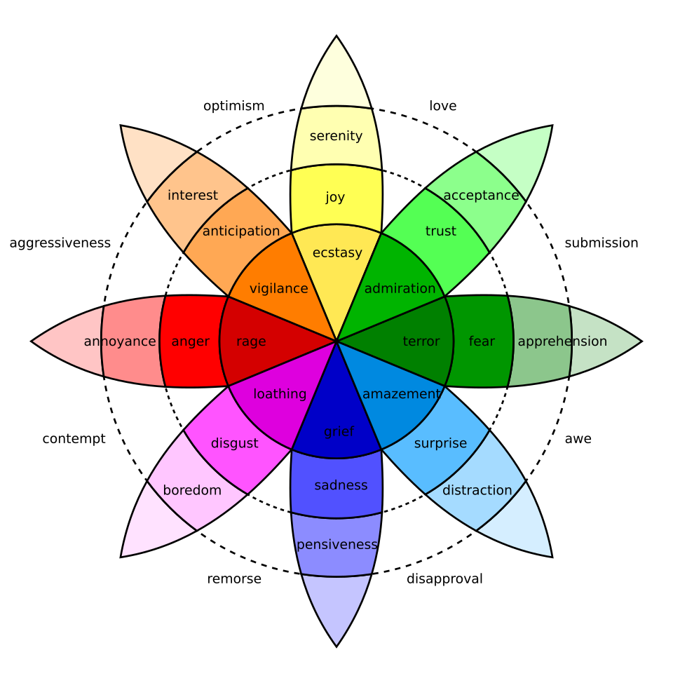
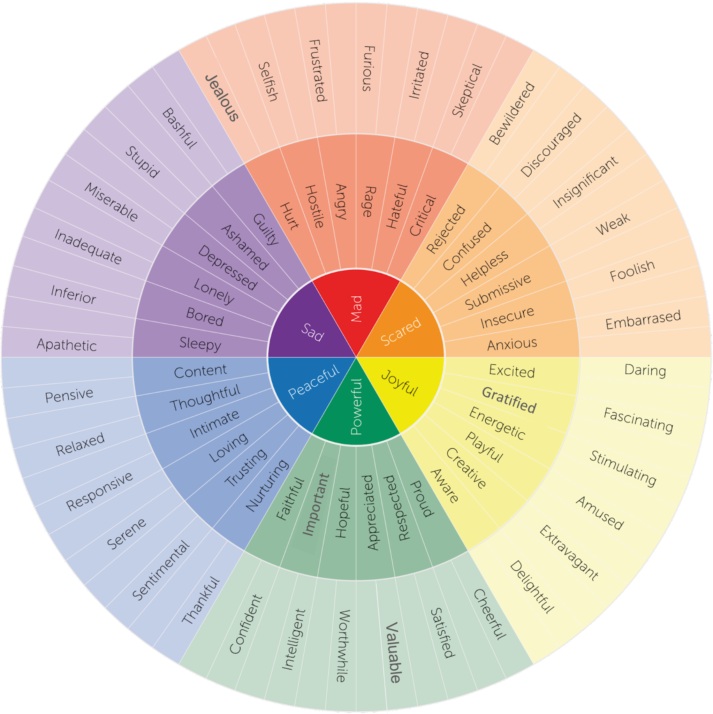
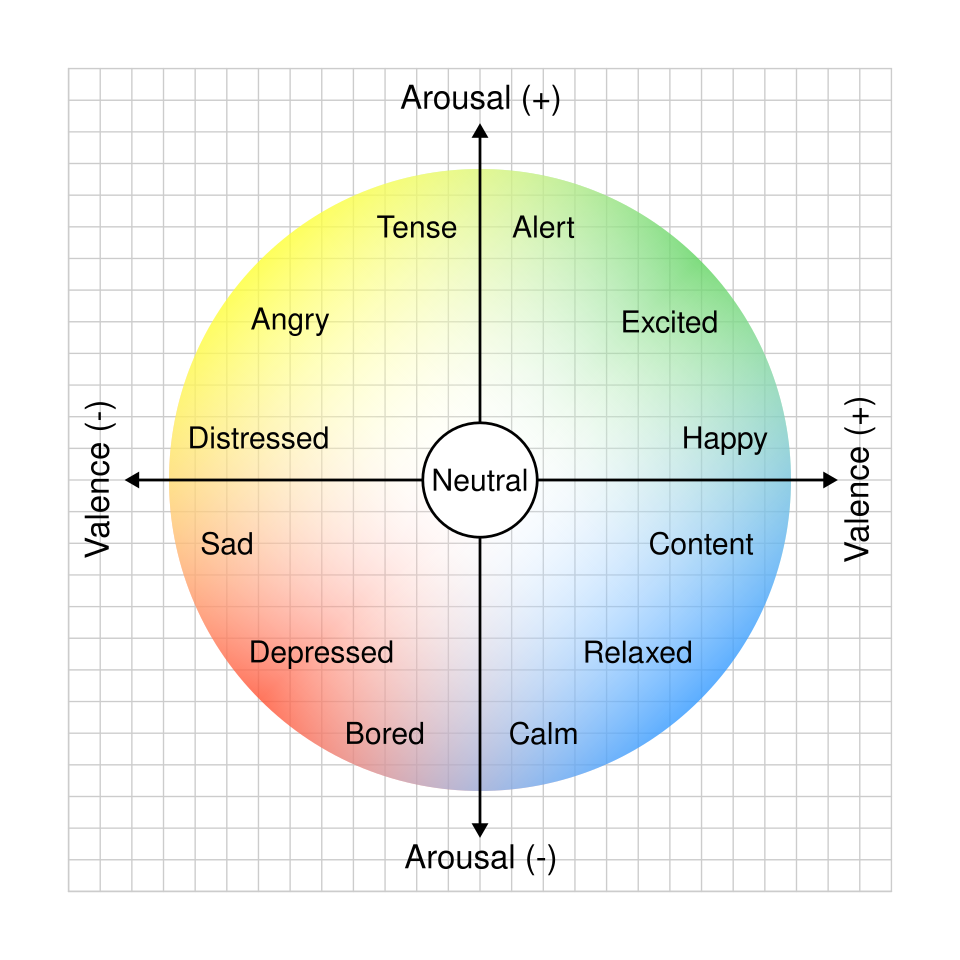
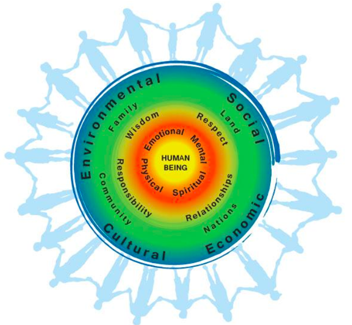
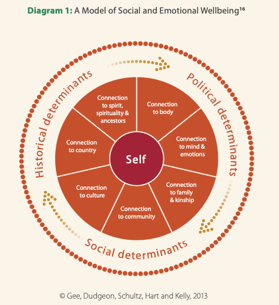
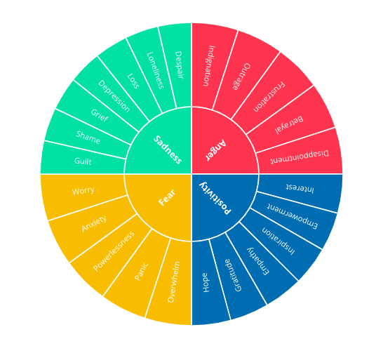
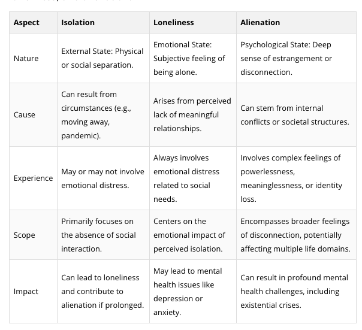
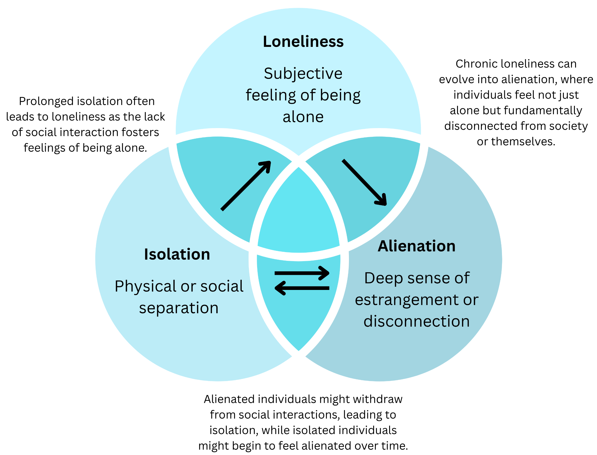

Welcome to Section 2: Understanding the Landscape of Climate Emotions
In this section, you will learn:
- The relationship between emotions and mental health in the context of climate change.
- Key theories explaining how and why emotions arise, and their relevance to climate issues.
- How emotions are categorized and distinguished from mental health conditions.
- The spectrum of potentially challenging "climate emotions" and how they may present, be experienced, and be responded to including:
- Worry and anxiety
- Stress and Trauma Responses
- Grief and solastalgia
- Guilt and shame
- Anger and rage
- Isolation, loneliness and alienation
- Denial and disengagement
- Ecoparalysis and fatalism
- Tools to assess and address climate-related mental health impacts.
While this section focuses primarily on difficult or challenging climate emotions, emotions such as hope and resilience, which are equally important, will be explored in depth in a later section.
This section includes content relating to mental health, climate change, and injustice. Some learners may find these topics challenging to engage with. This information is available to you to engage with as you choose, including choosing not to engage with particular sections. We encourage you to approach the material in ways that support your well-being.
Please remember to:
- Pace yourself
- Take breaks as necessary
- Practice self-care as you work through the curriculum
Resources are available to support yourself in navigating emotions that may arise during this curriculum. Take some time to reflect on what supports you, consider what resources you could connect with as needed, and review the list of ideas we have compiled here:
- If you are in Canada and need immediate mental health support, you can access a list of available resources here.
- You can also access a list of additional supportive resources compiled by the MHCCA team here.
- If you are feeling overwhelmed or in need of a mental pause, you may find support in this list of grounding and presencing techniques.
Module reviewers & contributors
- Kiffer G. Card, Faculty of Health Sciences, Simon Fraser University
- Kaylie Higgs, Mental Health and Climate Change Alliance
- Dana De Benetti, Mental Health and Climate Change Alliance
- Michael Marchand, sqilxw, syilx Nation - Cultural Safety Consultant
- Judy Wu, Faculty of Health Sciences, Simon Fraser University
- Ashley Stoltz, Faculty of Health Sciences, Simon Fraser University
- Maya Gislason, Faculty of Health Sciences, Simon Fraser University
Emotions are complex and shaped by many internal and external influences. Throughout this module, we largely focus on Western research and theory related to emotions as it provides a basis for most academic research and emerging approaches to climate emotions. However, it is important to acknowledge that this represents only one lens among many and this section is not exhaustive.
Across the world, Indigenous and non-Western communities possess unique knowledges, frameworks, and ways of understanding emotions, including how they arise and how they connect with the environment and well-being. Later in the module we will explore a few research examples that illustrate how emotions may be experienced and expressed differently across countries and cultural contexts. We will also highlight a few additional perspectives from an Indigenous lens that expand beyond Western theories of emotion.
The following will introduce some of the prominent Western theories of emotions that contribute to the leading contemporary frameworks of emotion science, recognizing that they exist within a broader scope of knowledge. These theories explore how emotions arise, what influences them, and how they affect behavior and cognition. Major theories of emotion generally fall into several broad categories:
- Evolutionary: Emotions enhance survival and communication.
- Physiological: Emotions stem from bodily responses.
- Cognitive: Emotions depend on how we interpret and label experiences.
- Neuroscientific: Emotions are rooted in specific brain regions and circuits.
- Social/Cultural: Emotions are shaped by culture, context, and interaction.
Each theory contributes a different perspective, and modern research often integrates elements from multiple theories to explain the complexity of emotions. These theories are shared to introduce some of the core concepts that modern research continues to build on. However, they are not fully explored in terms of how they have been applied, critiqued, or more recent developments. As knowledge in this area continues to evolve, we encourage you to explore these and other theories to deepen your understanding.
Explore the slides below to learn about these categories and their key theories.
Evolutionary Theories
These theories argue that emotions evolved to enhance survival and reproduction. The following information outlines the origins and key contributions to this evolutionary framework.
Darwin’s Evolutionary Theory (1872)
Charles Darwin, most well known for articulating a theory of evolution based on natural selection and environmental adaptation, connected emotions to evolution. In The Expression of the Emotions in Man and Animals (1872), Darwin argued that emotions have an evolutionary basis and serve adaptive functions. Darwin’s pioneering insight was that emotional expressions evolve through natural selection because they enhance survival and reproduction. For example, a fearful expression might help an organism communicate danger to others, while anger signals a readiness to defend territory or resources. Darwin’s approach marked one of the first systematic attempts to apply evolutionary theory to emotions. He showed that many emotional expressions (like baring teeth in anger, widening eyes in fear) appear across cultures and even across different species, suggesting biological continuity in how emotions develop and are expressed. By highlighting the communicative and adaptive value of emotions, Darwin’s theory laid the groundwork for later evolutionary theories that emphasize the role of emotions in fostering cooperation, warning of threats, and guiding behavior in ways beneficial to survival.
Example: Imagine you read about a spike in extreme weather events due to global warming and feel a sense of fear in response. According to Darwin’s perspective, your fear might be an evolved response, alerting you and your community to potential dangers (e.g., more frequent floods, storms). Visibly showing anxiety or worry can prompt shared vigilance and collective preparation (e.g., taking steps to reinforce homes, stock supplies, or advocate for policy changes). Darwin’s lens helps us see that the expression of climate-related fear can motivate both individual and group survival strategies, just as early humans might have used fear expressions to alert others to threats like predators.
Plutchik’s Psychoevolutionary Theory (1980)
Robert Plutchik expanded on evolutionary views by proposing that there are eight primary emotions (joy, trust, fear, surprise, sadness, disgust, anger, and anticipation) that serve fundamental adaptive functions. He visualized these emotions in a wheel of emotions, which can blend into more complex emotional states. For instance, anger and disgust might combine to form contempt. Plutchik argued each primary emotion helps an organism respond to specific survival challenges—fear leads to protection, anger leads to destruction of obstacles, joy fosters reproduction or bonding, and so forth. Plutchik emphasized that emotions are evolutionary adaptations with specific action tendencies or survival functions. His wheel model, which is explored in the next module, neatly illustrates how primary emotions can intensify or blend, forming a wide array of nuanced emotional experiences. By stressing the adaptive nature of each core emotion, Plutchik’s work bridged the biological underpinnings of emotion with the varied emotional expressions and experiences we see in everyday life.
Example: In the face of escalating climate impacts, individuals might experience mixed emotions—for example, fear (one of Plutchik’s core emotions) about impending disasters, combined with anticipation about what might happen if society fails to act. The blend of fear and anticipation could manifest as anxiety, motivating proactive behaviors like preparing emergency plans, joining community groups, or advocating for policy changes. By highlighting these core adaptive emotions, Plutchik’s framework helps explain how different emotional combinations can spur distinct adaptive responses—like urgent action (fear + anticipation) or despair (fear + sadness)—in the context of climate change.
Physiological Theories
These theories emphasize the role of bodily responses in generating emotions.
James-Lange Theory (1880s)
The James-Lange theory is one of the earliest emotion theories, proposing that emotions arise from physiological reactions in our body. According to this theory, an emotional stimulus triggers specific bodily changes (like a faster heartbeat, trembling, or sweating), and our perception of these physical changes creates the emotional experience. In other words, we feel afraid because we tremble, or we feel sad because we cry. The unique contribution of the James-Lange theory was its reversal of what seemed to be common sense — instead of saying we cry because we are sad, it argued we become sad because we cry. This theory highlighted the important link between the body and emotion, suggesting that without the bodily response, we wouldn’t feel the emotion in the same way.
Example: Imagine reading an alarming report about accelerating polar ice melt. According to the James-Lange theory, you might first experience a physical reaction — for instance, your heart starts pounding and your stomach clenches upon hearing the news. Only after these bodily reactions do you become aware of feeling anxiety or fear about climate change, as your mind interprets the racing heart and knots in your stomach as fear about the environmental threat. In this view, the physical arousal comes first, and the worry or fear follows from noticing that arousal and assigning it an emotional label (fear/anxiety about climate impacts).
Cannon-Bard Theory (1927)
The Cannon-Bard theory was developed as a direct response to James-Lange, offering a different explanation of the body-emotion relationship. Cannon-Bard theory argues that emotion and physiological reactions occur simultaneously and independently. In this model, an emotional stimulus causes both the experience of emotion in the brain and the physical reactions in the body at the same time, rather than one causing the other. This was a unique contribution because it suggested the brain plays a central role, quickly evaluating a situation and sending signals to trigger bodily responses while also generating the feeling of emotion. According to Cannon-Bard, you don’t cry and then feel sad; instead, you can feel sadness at the very moment your body is reacting (and the two processes are coordinated by the brain). This theory helped highlight the role of the central nervous system (especially brain regions like the thalamus) in parallel processing of emotions and bodily changes.
Example: Suppose you are watching live coverage of a wildfire approaching a town. The moment you realize the severity of the threat, you instantly feel frightened and your body tenses up with adrenaline. The Cannon-Bard theory would say that as you appraise the danger, your brain simultaneously triggers the emotion of fear and your body's “fight-or-flight” response. Your heart rate jumps and you feel fear at the same moment, rather than one after the other. In a climate context, hearing bad news (like an extreme weather warning) might make you feel anxious at the exact time your palms start sweating and your muscles tighten, consistent with Cannon-Bard’s idea of concurrent emotion and body response.
Schachter-Singer Two-Factor Theory (1962)
The Schachter-Singer two-factor theory (also known simply as the two-factor theory) combines both physical arousal and cognitive interpretation. It proposes that emotion = physiological arousal + cognitive label. According to Schachter and Singer, when something happens (a stimulus), our body responds with general arousal (e.g. adrenaline rush, increased heart rate). By itself, this arousal is ambiguous and it could turn into different emotions. What determines which emotion we feel is the cognitive label we attach to that arousal based on the context. In other words, we interpret the situation and our bodily state, and that interpretation produces the emotion we experience. The unique insight of this theory is that the same physical symptoms can be experienced as different emotions depending on how we think about what’s happening. This highlighted the importance of context and our mind’s appraisal in differentiating emotions (for example, the same racing heart could be labeled “excitement” or “fear” depending on the circumstances).
Example: Consider noticing that your heart is beating faster and your breathing is shallow while you read an article about climate change. Your body is physiologically aroused, but what are you feeling? According to the two-factor theory, it depends on your interpretation. If you’re thinking about the dangers of global warming, you might label those sensations as anxiety or fear about climate change. Alternatively, if you are thinking about political inaction contributing to the climate change discussed in the article, you may interpret these sensations as anger or disgust. Similarly, if you are at a climate rally and feeling energized by the crowd, you might label a racing heart as excitement or motivation. The physical symptoms (e.g., a pounding heart) are similar in each of these cases, but the emotion differs based on how you explain the cause of your arousal. In short, in a climate context, your cognitive label — whether you see the situation as threatening or inspiring — turns a state of arousal into a specific emotion like anxiety, anger, or hope.
Facial Feedback Hypothesis
The facial feedback hypothesis, traces back to Darwin and James’ theories, and suggests that forming a specific facial expression can influence the emotion you feel. In other words, your facial muscles send signals to the brain that can either enhance or dampen the emotional experience. Smiling can make you feel happier, frowning can intensify draining feelings, and so forth. Though it is primarily a physiological theory, there are also cognitive processes involved in interpreting the bodily experience into emotions.This hypothesis shows a bidirectional relationship between expression and emotion — not only do we smile because we feel happy; smiling itself may induce or amplify feelings of happiness.
Example: Consider someone feeling anxious about a looming climate-related event like severe flooding. If they intentionally adopt a relaxed facial expression or even a gentle smile while discussing preparedness measures, they might experience a subtle boost in calmness or reassurance. Though it won’t magically erase all concern, shifting facial expressions can mildly shape how one feels about the threat of climate change, illustrating that our emotional states are partly affected by our outward expressions.
Cognitive Theories
These theories focus on the role of thoughts, appraisals, and interpretation in shaping emotions.
Lazarus' Cognitive-Mediational Theory (1982)
Richard Lazarus built on earlier cognitive theories by developing the cognitive-mediational model. This model specifically focuses on the appraisal process that occurs before an emotional response fully develops. According to Lazarus, once we encounter a situation, we appraise (judge) its significance for our well-being (primary appraisal) and assess our ability to cope with or respond to it (secondary appraisal). This appraisal then mediates the emotional and physiological response that follows. Lazarus clarified that emotions are heavily influenced by how we interpret an event, which can occur very quickly and sometimes unconsciously. Emotions aren’t just a result of bodily states or universal programs but are shaped by personal meaning and context.
Example: If you learn about a proposed policy to reduce carbon emissions, you might appraise it in different ways. If you see it as beneficial (primary appraisal) and feel confident your community can adapt (secondary appraisal), you might experience hope or optimism. On the other hand, if you perceive it as threatening your economic livelihood and think there’s little you can do about it, you might feel anxiety or anger. Lazarus’ theory explains how these differing appraisals lead to divergent emotional responses to the same climate policy announcement.
Neuroscientific Theories
These focus on brain structures and neural circuits involved in emotional processing.
Ledoux’s High Road/Low Road Theory (1996)
Joseph LeDoux proposed that the brain processes emotional information along two main pathways—sometimes referred to as the “low road” and the “high road.” The low road is a fast, automatic pathway that carries sensory information directly to the amygdala, triggering rapid emotional responses (often fear or alarm) before conscious awareness can occur. The high road is a slower, more deliberate route that involves the cerebral cortex. Here, the brain processes the situation in more detail, allowing for a nuanced interpretation of the event. This model explains why we can have an immediate “gut reaction” (low road) as well as a more measured, thought-out response (high road). It highlights the role of the amygdala structure (a region of the brain that plays a central role in detecting threats and initiating fear responses) in quickly scanning for threat and the cortex in refining or overriding our initial reactions.
Example: When reading shocking headlines about an imminent climate-related disaster, your low road might kick in immediately, causing anxiety or alarm—heart pounding, muscles tensing—before you have time to think it through. A moment later, the high road response might process the facts more carefully. You could realize the event isn’t occurring in your immediate vicinity or that there are steps you and others can take to mitigate harm. This two-step process helps explain how we can feel a visceral “jolt” of fear about climate change, followed by a more reasoned approach (e.g. planning or taking climate action).
Affective Neuroscience (1998)
Jaak Panksepp coined the term affective neuroscience in the early 1990s, an approach that focuses on how the brain processes emotion—such as fear, seeking, care, and rage—through systems that are largely hardwired in mammals. These systems are deep, subcortical circuits that guide instinctual emotional responses. Panksepp argued that these fundamental circuits form the foundation of more complex emotions and emotional experiences. Panksepp’s work emphasizes that certain emotional tendencies are biologically rooted in our ancient brain systems, shaping how we react to rewards, threats, and social bonding at a very basic level.
Example: When confronted with news of extreme weather events (like hurricanes or wildfires), your fear system might be activated automatically, leading to a surge of apprehension and worry. At the same time, your care or nurturing system might be triggered if you feel concern for people, animals, or ecosystems affected by those events. From a Panksepp perspective, these emotional circuits are not just learned; they are deeply embedded in our brains, influencing our immediate reactions to climate threats and our capacity for empathy and compassion for others.
Social and Cultural Theories
These theories emphasize the role of culture, environment, and social norms in shaping emotions.
Social Constructionist Theory
Social Constructionist Theory proposes that emotions are shaped by social and cultural contexts, rather than being purely biological or individual. From this perspective, societies develop collective beliefs, narratives, and norms about which feelings are acceptable, how to express them, and even what to call certain emotions. Over time, these collective ideas become internalized by individuals, so that emotional experiences are deeply entwined with culture, language, and social roles.
Example: Some cultures might encourage public mourning for environmental damage, labeling it as a form of rightful grief and motivating collective action. Others might view outward expressions of ecological concern as impractical or alarmist, discouraging open expressions of worry. For instance, a person in a community that values stoicism might internalize feelings about rising sea levels, rarely labeling them as “fear” but rather keeping them in a realm of “concern” or “inconvenience.” By contrast, a community that openly discusses eco-anxiety might make it easier for someone to feel and recognize strong fears about climate change. Social Constructionist theory underscores the power of shared language and norms in shaping how we experience and express climate emotions.
Ekman’s Universal Emotions (1970s)
Paul Ekman, identified six basic emotions—including happiness, sadness, fear, anger, disgust, and surprise—that he proposed are universally recognized across cultures, largely through facial expressions. Ekman later broadened the number of basic emotions to seven, to include contempt. Although display rules (cultural norms about when and how to show emotions) vary, the claim is that the core facial expressions associated with these fundamental emotions are consistent worldwide. Ekman’s research suggested a biological foundation for certain “universal” emotional expressions, indicating that some aspects of emotional expression are cross-culturally consistent even if context and cultural norms shape how, when, or whether people actually display them.
Example: Feelings of fear, such as those that may be evoked when witnessing intense hurricanes or wildfires, are likely to be expressed through widened eyes, tensed facial muscles, and other related fear expressions regardless of cultural background. At the same time, local display rules might influence how openly that fear is shown—some cultures might encourage expressive outbursts, while others might expect you to remain composed. Ekman’s theory helps clarify that physiological expressions of certain emotions can be quite consistent across global populations, even if the social context affects when or if they’re revealed.
Vygotsky’s Sociocultural Theory
Lev Vygotsky also offers important insights for emotional development. According to Vygotsky, social interaction plays a pivotal role in how people learn and internalize psychological processes, including emotions. Emotions are shaped by language and the cultural tools we use to describe and manage them. As we interact with more experienced members of our culture (e.g., parents, teachers, peers), we learn culturally appropriate ways of feeling, interpreting, and expressing emotions. In the case of many Indigenous Peoples, historical and ongoing colonial practices intentionally disrupt and interfere with this cultural emotional learning and continuity. Vygotsky’s approach underscores the importance of language and social context in shaping not only what we think but also how we feel—our emotional framework grows through guided participation in our social world.
Example: A child learning about climate change might initially feel “sad” or “scared” without language to describe more nuanced feelings. Through conversations with parents or educators who discuss terms like “anxiety,” “grief,” or “eco-anger,” that child acquires new emotional concepts and ways of regulating these feelings. For instance, they may learn that talking to trusted adults or being involved in climate positive activities in their communities can help channel climate anxiety into hope or determination. Over time, this sociocultural process informs which climate emotions the child recognizes, how they’re labeled, and the socially accepted ways to express them—reflecting Vygotsky’s idea that learning and social guidance are central to both cognitive and emotional development.
Emotions, Power, and Settler-Colonialism.
As a result of ongoing-settler colonialism, emotions and their legitimacy can be influenced by unequal power relations that determine what emotional expressions are recognized as valid, rational, or credible. For privileged settler communities, settler’s emotions may be viewed as correct and acceptable, whereas Indigenous Peoples’ emotions and expressions of concern are often wrongly framed as pathology, deviant and/or threatening. Settler-colonialism has also historically positioned Indigenous Peoples as “less civilized” and requiring guidance and oversight, while dismissing perspectives, knowledges, and worldviews. These dynamics rooted in colonial histories influence what voices are heard, and also how emotional experiences are recognized. These processes are ongoing and also extend to other marginalized groups who are similarly systemically dispossessed and left out of many settler-colonial benefits while being disproportionately impacted by extreme climatic events. This viewpoint emphasizes how cultural norms, social practices and power can influence both emotions and emotional experiencesas well as how those responses are framed and regarded..
Synthesis Across Theories
The current dominant view of emotions draws from multiple theories, reflecting an integrative and multidimensional approach rather than adherence to a single model. This contemporary view recognizes that emotions are shaped by biological, cognitive, and social factors working together. Among the various frameworks used to present these integrated and multidimensional approaches is Lisa Feldman Barrett’s Theory of Constructed Emotion (early 2000s), which emerged as a leading view of how emotions are created and experienced.
Barrett’s central claim is that emotions are not fixed, biologically wired modules (as many earlier theories suggest) but are rather constructed by the brain through a continuous process that integrates:
- Affective (Bodily) States – moment-to-moment feelings on a continuum of arousal to calm, and pleasantness to unpleasantness (sometimes termed “core affect”).
- Conceptual Knowledge – past experiences, language, cultural learning, and social expectations that guide how we categorize and interpret bodily sensations.
- Contextual Cues – the immediate environment, social setting, or situational factors that shape how we understand what’s happening.
By blending these elements, the brain creates each individual “instance” of an emotion as a best fit or “conceptual category” for the incoming sensory and affective information. In other words, emotions are not seen as universal, pre-programmed circuits that trigger uniform facial expressions or physiological patterns. Instead, the brain actively predicts what meaning your bodily sensations have in a given context, drawing on memories, culture, and current sensory input.
Watch
If you are interested in learning more about Lisa Feldman Barrett’s theories of emotion you can watch the video How emotions work | Neuroscientist Lisa Feldman Barrett (Big Think) (9:22 minutes).
Below we discuss this theory in relation to other major theories and frameworks presented above:
- Comparison to Evolutionary Theories: While Barrett challenges the idea of a small set of evolutionarily “hardwired” basic emotions, she acknowledges that evolution has provided humans (and other animals) with biological capacities to experience affect (e.g., high or low arousal, positive or negative valence). Thus, the capacity to feel something (like tension or calm) is an evolved function. However, which specific emotion emerges from that bodily state depends on how the brain interprets the sensations in context, a stark contrast to Darwin’s view that emotions like fear or anger are universal, discrete adaptations.
- Comparison to Physiological Theories (James-Lange, Cannon-Bard, Schachter-Singer, Facial Feedback Hypothesis): Barrett’s theory agrees that bodily changes (racing heart, sweating, muscle tension) are central to emotion, but she argues these changes are relatively nonspecific. You could have a pounding heart during a joyous surprise or during terror. Like the Schachter-Singer model, Barrett emphasizes the importance of labeling this bodily arousal based on context and learning. Yet, she goes further in claiming that there aren’t fixed physiological markers for each emotion. Instead, the brain constructs an instance of “fear,” “excitement,” or “anger” by interpreting the body’s general arousal in light of conceptual knowledge and situational cues.
- Comparison to Cognitive Appraisal and Lazarus: Barrett’s approach has parallels with appraisal theories—both see interpretation as key. However, she emphasizes that these interpretations (or appraisals) are not mere “afterthoughts” but are constant predictive processes in the brain. The brain is perpetually making best guesses (predictions) about what bodily signals mean, updating them in light of new data. This dynamic, ongoing prediction is more comprehensive than a one-step appraisal, reflecting how cognition and emotion are seamlessly intertwined.
- Comparison to Neuroscientific Theories (e.g. LeDoux, Panksepp): Barrett’s model acknowledges that the brain’s architecture (e.g. amygdala, cortical areas, subcortical circuits) underpins affective experiences. She integrates LeDoux’s insight that some responses happen quickly (“low road”), but disputes the notion that these “fast” paths equate to universal, discrete emotions. Instead, she sees core affect as shaped continuously by various brain networks, with the conceptual labeling happening rapidly or more slowly, depending on experience and context. Similarly, while Panksepp’s “primary emotion systems” highlight how the mammalian brain is wired to respond to certain stimuli (e.g. threats, nurturance, seeking), Barrett interprets these responses as broad affective potentials, which only become distinct emotions like “fear” or “care” after the brain applies concept knowledge, shaped by personal and cultural learning.
- Comparison to Socio-cultural Theories: Barrett’s theory also recognizes the power of social and cultural factors, similar to Social Constructionist and Vygotskian views. For example she acknowledges that different languages and cultures have distinct emotion words that don’t always map directly onto English words like “anger” or “fear.” These linguistic and cultural factors essentially provide the categories by which the brain classifies bodily feelings. Similarly, like Vygotsky’s Sociocultural Theory, Barrett suggests that we learn how to experience and label our “core affect” through social interactions, norms, and language. Over time, we internalize these concepts, making them automatic. This has implications for how emotional categories are shaped and interpreted within different cultural contexts. Similar to this concept, internalized bias and unconscious stereotyping towards others can develop and present as these deeply ingrained and often automatic thought processes. This highlights how emotional experiences are not only individually constructed, but also shaped through ongoing social and cultural learning. In this way, culture shapes which emotional labels are accessible to us and how quickly or intensely we feel them. Barrett’s theory synthesizes social constructionist ideas—that emotions can differ across cultures—with the recognition of universal affective processes at the biological level. The universal part is having a body that can feel aroused or calm; the culturally specific part is whether that arousal is conceptualized (constructed) as “fear,” “excitement,” “angst,” “eco-anxiety,” or something else.
Indigenous Understandings of Emotion
Alongside the earlier theories noted in this module, there are many Indigenous thinkers and knowledge holders who have contributed to the way that emotions are understood.
- One example is the concept of Felt Theory by Dian Million, which explores affect and emotions through an Indigenous feminist lens. Million describes the importance of recognizing Indigenous women’s lived and emotional experiences which have been shaped by colonial histories as legitimate, meaningful, and essential forms of knowledge in communities and scholarship.
- Another example is the work of Michael Yellow Bird on the concept of neurodecolonization. Yellow Bird has done extensive work and research on how stressors related to colonization can have impacts on brain function, as well as how practices neurodecolonization and mindfulness can support healing and well-being in Indigenous communities.
How does viewing emotions as relational and shaped by historical and cultural contexts challenge or expand dominant Western understandings and theories of emotion which were explored earlier in this module?
Despite climate change affecting people around the world, climate impacts are not uniform, and neither are emotional responses. Research has shown that there are unique patterns observed across countries and cultures in relation to the type, intensity and distribution of various emotions. As discussed earlier in the module, emotions are shaped by biological, cognitive, and socio-cultural factors working together. They are also influenced by the broader structural context of inequities across groups and regions. For some groups, climate change may be experienced as an abstract worry of the future, for others who face immediate risks to their homes, communities, way of life and safety, this can be very different. The studies below highlight how different contexts can influence emotional experiences of climate change.
Global Variations in Climate Emotions
In A new hope or phantom menace? Exploring climate emotions and public support for climate interventions across 30 countries, researchers measured a global dataset for occurrences of fear, hope, anger, sadness and worry across countries.
People living in developing countries and emerging economies reported being more hopeful, whereas European countries ranked as less hopeful. Countries considered more vulnerable to climate change more consistently reported emotions such as anger and sadness, including countries in Southern Europe and several emerging economies. Advanced economies in the Global North reported the lowest levels of worry overall. In contrast, higher levels of fear and worry were reported in emerging economies, developing countries in the Global South, and Southern European countries. Overall, those living in more advanced economies generally did not report climate emotions as strongly. The results showed that there can be patterns found in emotional experiences in relation to economic development and exposure to climate impacts.
Cross-European Comparisons
In Emotional reactions to climate change: a comparison across France, Germany, Norway, and the United Kingdom, researchers measured the emotions of worry, hope, fear, outrage and guilt across European countries in relation to appraisals and climate related behaviours.
They found distinct emotional patterns, which varied between countries and were associated with cultural and political contexts. While all surveyed countries reported a level of worry, Norway was more likely to express feelings of hope, whereas France and Germany more consistently expressed emotions of fear and outrage. It was also determined that different emotions were associated with different appraisals and behaviours. For example, outrage and worry were associated with appraisals of human causation and moral concern, whereas hope and guilt were associated with support for policies such as tax and price increases.
This study highlights that despite all being European countries situated in the Global North, variation in climate-related emotional responses exist and can be related to sociopolitical context and cultural value systems.
Indigenous Mental Health and Climate Change
In Indigenous mental health and climate change: A systematic literature review, the authors observed three central themes: evidence of impacts on mental health from physical changes in the environment, mechanisms of vulnerability, and adaptation responses and coping strategies.
The review found that direct exposure to climate change impacts such as shifts in ice and snow, rain, sea tides, and increasing temperatures, and changes in animal and insect populations was associated with decreased mental well-being and increased non-clinical mental health concerns including sadness, worry, distress, fear, and low self-worth. Emotional experiences varied across culture and regions. For example, participants in rural Savannah regions of West Africa reported feelings of frustration, while in Russia some participants responded more with bitter humor and confusion. With repeated cumulative exposure, mental health impacts were more likely to progress to clinical mental health outcomes. In addition to these direct impacts, the authors highlighted mechanisms of vulnerability which were shown to be exacerbated by climate change including perceptions and understandings of climate change, place attachment, disruption to culture, food insecurity and existing socio-economic disadvantages. At the same time, the review highlighted adaptation and coping strategies taking place in various communities. These included spending time on the land, engaging in cultural practices, supporting knowledge sharing and uplifting Indigenous leadership, particularly through involvement of youth and women.
These findings highlight how climate emotions in Indigenous communities are often closely tied to relationships with land, culture, and the lived impacts of environmental change and can also broadly vary across groups.
Indigenous Perspectives
As you reflect on different theories of emotion in this module, Indigenous ways of knowing offer a complementary framework that emphasizes emotions as inherently relational and holistic. Rather than seeing emotions as isolated mental or physiological responses, many Indigenous traditions understand them as signals about the health of relationships with people, land, spirit, and community. Emotions carry teachings which can support understanding complex emotions and connections. Concepts such as Felt Theory and neurodecolonization can provide further insights into emotions from Indigenous perspectives and emphasize historical and cultural aspects that shape how emotions are felt, expressed and understood.
Key Takeaways
- Emotions are multidimensional. They involve biological processes (e.g., brain circuits, hormones), cognitive evaluations (e.g., appraisals, memories), and social/cultural factors (e.g., norms, interpersonal interactions).
- No single theory explains everything. Modern emotion science blends elements from evolutionary, cognitive, and social theories to explain different aspects of emotional life.
- Context matters. Emotional experiences are shaped by individual differences, past experiences, and cultural background.
- Research has shown that there are unique patterns observed across countries and cultures in relation to the type, intensity and distribution of various emotions.
- From many Indigenous perspectives, emotions are viewed more holistically than Western academic theories, recognizing lived experience, and are understood as signals about the health of relationships with people, land, spirit, and community.
Learning Activities
Objective: You will reflect on how major theories of emotion relate to climate emotions, using examples to understand how these theories explain our emotional responses to climate change.
Instructions:
- Review the Theories:
Revisit the major theories of emotion provided in the module (e.g., evolutionary, physiological, cognitive, social/cultural, neuroscientific). - Identify Examples of Climate Emotions:
- Think of examples of emotions people experience related to climate change (e.g., eco-anxiety, fear, hope, guilt).
- For each example, write a brief description of the situation in which someone might feel this emotion. For instance, “A young person feeling eco-anxiety due to reports of worsening climate-related disasters.”
- Connect Emotions to Theories:
For each climate emotion you identified, reflect on how one or more theories of emotion could explain it. Answer the following questions:- Does this emotion arise from an evolutionary survival mechanism (e.g., fear prompting action)?
- Is it linked to bodily sensations (e.g., anxiety caused by a racing heart)?
- How might the individual’s interpretation or appraisal of the situation (cognitive theory) shape the emotion?
- Could cultural or social norms influence the emotion (e.g., guilt about overconsumption)?
- Write a Reflection:
- Summarize your findings in a few paragraphs. Focus on how different theories provide unique perspectives on understanding climate emotions.
- Reflect on why it’s important to use multiple theories to fully grasp the complexity of emotions related to climate change.
Objective: Groups will collaboratively analyze how different theories of emotion apply to understanding climate emotions and develop a multidimensional explanation for these emotional responses.
Facilitator Instructions:
Preparation Time: 15-20 minutes to prepare handouts summarizing key theories of emotion and prompts for group discussions.
Time Allocation: 50-60 minutes.
- Set Up:
- Divide participants into small groups of 3-5.
- Provide each group with a handout or summary of major theories of emotion (evolutionary, physiological, cognitive, social/cultural, neuroscientific).
- Group Discussion (20 minutes):
Assign each group one or two climate-related emotions to focus on, such as:- Eco-anxiety
- Hope
- Guilt
- Anticipatory fear
- Resilience or determination
- Groups should analyze their assigned emotion(s) using the following prompts:
- How does this emotion fit into each theory of emotion? For example:
- Evolutionary: Does this emotion enhance survival or promote social bonding?
- Physiological: What physical responses might accompany this emotion?
- Cognitive: How might interpretation or labeling shape this emotion?
- Social/Cultural: How do cultural norms or social context influence this emotion?
- Neuroscientific: What brain processes might underpin this emotion?
- Which theory or combination of theories best explains this emotion? Why?
- How does this emotion fit into each theory of emotion? For example:
- Develop a Multidimensional Explanation (15 minutes):
- Groups create a brief explanation for their assigned emotion(s) that incorporates insights from multiple theories.
- Encourage them to create a visual representation (e.g., a mind map or flowchart) to illustrate how different theories intersect to explain the emotion.
- Presentation and Debrief (15 minutes):
- Each group shares their findings with the larger group.
- Facilitate a discussion using these questions:
- “What did you notice about how the theories overlap or differ in explaining climate emotions?”
- “Why is it important to use multiple perspectives to understand emotions related to climate change?”
- “How might understanding these theories help us address or manage climate emotions effectively?”
Variation: Introduce case studies or personal stories (real or hypothetical) about people experiencing climate emotions and ask groups to analyze these cases using the theories.
References
- Ahenakew, C., Stein, S., Andreotti, V., Huni Kui, N. I., Taylor, L., Prince, S., Ramesh, J., Williams, C., Suša, R., Vukovic, R., & Diaz-Diaz, C. (2025). Decolonizing mental health in the polycrisis: Pathways toward neuro-decolonization.American Psychologist, 80(8), 1297–1312. https://doi.org/10.1037/amp0001540
- Archer, A., & Matheson, B. (n.d.). Emotional imperialism. Forthcoming in Philosophical Topics. https://philpapers.org/archive/ARCEIP.pd
- Barrett, L. F. (2006). How emotions are made: The secret life of the brain. Houghton Mifflin Harcourt.
- Cannon, W. B. (1927). The James-Lange Theory of Emotions: A Critical Examination and an Alternative Theory. The American Journal of Psychology, 39(1/4), 106–124. https://doi.org/10.2307/1415404
- Darwin, C. (1872). The expression of the emotions in man and animals. John Murray.
- Ekman, P., Friesen, W. V., O'Sullivan, M., Chan, A., Diacoyanni-Tarlatzis, I., Heider, K., Krause, R., LeCompte, W. A., Pitcairn, T., Ricci-Bitti, P. E., Scherer, K., Tomita, M., & Tzavaras, A. (1987). Universals and cultural differences in the judgments of facial expressions of emotion. Journal of Personality and Social Psychology, 53(4), 712–717. https://doi.org/10.1037/0022-3514.53.4.712
- James, W. (1884). What is an Emotion? Mind, 9(34), 188–205. https://www.jstor.org/stable/2246769
- Lazarus, R. S. (1982). Thoughts on the relations between emotion and cognition. American Psychologist, 37(9), 1019–1024. https://doi.org/10.1037/0003-066X.37.9.1019
- LeDoux, J. E. (1996). The emotional brain: The mysterious underpinnings of emotional life. Simon & Schuster.
- Panksepp, J. (1998). Affective neuroscience: The foundations of human and animal emotions. Oxford University Press.
- Plutchik, R. (2001). The Nature of Emotions: Human emotions have deep evolutionary roots, a fact that may explain their complexity and provide tools for clinical practice. American Scientist, 89(4), 344–350. http://www.jstor.org/stable/27857503
- Million, D. (2009). Felt Theory: An Indigenous Feminist Approach to Affect and History. Wicazo Sa Review 24(2), 53-76. https://dx.doi.org/10.1353/wic.0.0043.
- Schachter, S., & Singer, J. (1962). Cognitive, social, and physiological determinants of emotional state. Psychological Review, 69(5), 379–399. https://doi.org/10.1037/h0046234
- Vygotsky, L. S. (1978). Mind in Society: Development of Higher Psychological Processes (M. Cole, V. Jolm-Steiner, S. Scribner, & E. Souberman, Eds.). Harvard University Press. https://doi.org/10.2307/j.ctvjf9vz4
- Yellow Bird, M. (n.d.). About — Neurodecolonization and Indigenous Mindfulness. Indigenous Mindfulness. https://www.indigenousmindfulness.com/about
Module reviewers & contributors
- Kiffer G. Card, Faculty of Health Sciences, Simon Fraser University
- Kaylie Higgs, Mental Health and Climate Change Alliance
- Dana De Benetti, Mental Health and Climate Change Alliance
- Michael Marchand, sqilxw, syilx Nation - Cultural Safety Consultant
- Brianna Aspinall Nuñez, Carbon Conversations TO
- Ashley Stoltz, Faculty of Health Sciences, Simon Fraser University
- Maya Gislason, Faculty of Health Sciences, Simon Fraser University
Emotions are a fundamental part of how we interpret and respond to the world. In the context of climate change, emotions like fear, grief, hope, and anger play a significant role as individuals navigate the environmental changes, societal impacts, and ethical dilemmas associated with the crisis. These emotional responses can motivate action, foster resilience, or contribute to inaction if left unaddressed.
To understand the wide range of emotional responses to climate change, it can be helpful to explore how emotions are categorized and understood. Psychologists and researchers have developed various systems to classify emotions, providing insights into their origins, roles, and interactions. This module largely focuses on Western work in this area. However, as discussed in the previous module, emotions are not universally defined, and their classifications will vary across cultures and contexts.
This module introduces a few common emotional classification systems, expands on theories of emotion introduced in the last module, as well as dimensional and appraisal-based models, cultural influences, and emotional families. It concludes with a discussion of modern integrative perspectives, highlighting the complexity of emotions in a globalized and rapidly changing world. While this module focuses on broad emotional classification systems, the next module will build on this by exploring frameworks specifically used to understand and categorize emotional responses to climate change.
Before beginning, take a moment to consider some of your own emotions in relation to climate change.
Is there a way that you would group or categorize these emotions? Do you notice certain patterns or relationships between them? You will have an opportunity to expand on this reflection in the learning activity at the end of this module.
Below are several frameworks for categorizing emotions. Some of these frameworks were introduced in the previous section as theories for understanding the origins and nature of emotions, reflecting how closely emotional theory and classification are related.
These systems represent different ways that emotions have been conceptualized and categorized in research, much of which has been developed in Western contexts. While each framework offers useful insights, they present specific perspectives and are not exhaustive. Together, they provide a starting point for understanding how emotions can be understood, organized and interpreted. As you review these frameworks, you are encouraged to reflect on how they relate to your own experiences, and explore further if this is of interest to you.
To start exploring these categories, you may want to review the frameworks below and consider how these groupings of emotions could relate to climate change:
- Darwin’s Evolutionary Perspective
- Inventor/Proponent: Charles Darwin, in his book The Expression of the Emotions in Man and Animals (1872).
- Core Ideas:
- Continuity Between Species: Darwin argued that emotional expressions in humans have evolutionary roots shared with animals.
- Universality of Emotions: He proposed that certain expressions—like fear, anger, surprise—are universal across cultures because they serve adaptive, survival-related functions.
- Communication Function: Emotional expressions help communicate internal states to others, aiding social bonding and survival.
- Influence on Later Models:
- Darwin’s emphasis on universality laid the groundwork for later “basic emotions” theories (e.g. Paul Ekman).
- Sparked interest in the biological and evolutionary functions of emotion.
- Basic (Discrete) Emotions Approaches
- Key Contributors:
- Silvan Tomkins (1962–1991): Highlighted the primacy of affect and proposed nine distinct “affects” (biologically based systems that produce distinct and automatic emotional responses).
- Paul Ekman (1970s onward): Focused on cross-cultural studies of facial expressions.
- Carroll Izard (1970s onward): Proposed a set of fundamental emotions, identified via facial and physiological cues.
- Core Ideas:
- Discrete “Basic” Emotions: Emotions like anger, fear, joy, sadness, surprise, and disgust are considered hardwired and universal.
- Facial Action Coding: Ekman’s Facial Action Coding System (FACS) systematically ties specific facial muscle movements to particular emotions.
- Innate Neural Programs: Each basic emotion is underpinned by dedicated neural/physiological patterns.
- How It Builds on Darwin:
- Adopts Darwin’s claim of universality and evolutionary continuity.
- Refines it with empirical cross-cultural research on facial expressions (Ekman’s experiments in Papua New Guinea, etc.).
- Key Contributors:
- Plutchik’s Wheel of Emotions
- Inventor/Proponent: Robert Plutchik (1960s–1980s).
- Core Ideas:
- Primary Emotions: Identifies eight primary emotional dimensions (joy vs. sadness, anger vs. fear, trust vs. distrust, surprise vs. anticipation).
- Emotion Wheel: Visualizes emotions as a wheel with each emotion opposite its counterpart, and intermediate “blends” formed by mixing adjacent emotions.
- Adaptive Functions: Each primary emotion is linked to an adaptive reaction (e.g. fear → protection, anger → destruction, joy → reproduction).
- How It Builds on Prior Work:
- Continues the discrete-emotions tradition but arranges them in a systematic “wheel” form.
- Emphasizes the functional/adaptive role of each basic emotion, echoing Darwin’s focus on survival.
- Parrott’s Emotions by Groups
- Inventor/Proponent: W. Gerrod Parrott, notably in his 2001 work Emotions in Social Psychology.
- Core Ideas:
- Hierarchical Grouping: Parrot’s model builds on earlier hierarchical approaches, such as work by Phillip Shaver and colleagues (1987) by organizing emotions in a tree‐like structure with three “levels.” At the root are broad “primary” emotions (e.g. love, joy, surprise, anger, sadness, fear). These branch into more specific “secondary” emotions (e.g. love → affection, longing; joy → cheerfulness, pride), which in turn branch into even more nuanced “tertiary” emotions (e.g. affection → adoration, fondness, liking).
- Focus on Complexity: By grouping emotions in nested tiers, Parrott’s framework highlights how we use more granular labels in everyday language while recognizing a smaller set of underlying families.
- Emphasis on Social and Linguistic Context: Like many hierarchical taxonomies, Parrott’s system underscores that the way we categorize and label emotions can vary based on cultural and interpersonal contexts.
- Connections to Other Models:
- Conceptually akin to Plutchik’s “wheel” (sectioning emotions into primary groups) but opts for a branching taxonomy rather than a circular structure.
- Shows how a few “core” or “basic” emotions can generate many “sub‐emotions” in natural language and social life.
- Russell’s Circumplex Model of Affect
- Inventor/Proponent:
James A. Russell (late 1970s–1980s). - Core Ideas:
- Dimensional Approach: Emotions are best understood along two continuous dimensions:
- Valence (Pleasantness–Unpleasantness)
- Arousal (High–Low Activation)
- Circular Arrangement: Emotions are positioned around a circle, with opposite quadrants capturing opposite feeling states (e.g., excitement is high arousal and pleasant; bored is low arousal and unpleasant).
- Psychological Constructionism: Rather than being hardwired discrete “modules,” emotions emerge from combinations of valence and arousal dimensions, plus appraisals and context.
- Dimensional Approach: Emotions are best understood along two continuous dimensions:
- How It Builds on/Diverges From Discrete Approaches:
- Rejects the need for a small set of “basic” emotions; instead, it focuses on how underlying dimensions combine to yield all emotional states.
- Reflects a move toward continuous, multidimensional representations.
- Inventor/Proponent:
- The PAD Model (Mehrabian and Russell)
- Inventors/Proponents: Albert Mehrabian and James Russell (1970s).
- Core Ideas:
- Three Dimensions (PAD):
- Pleasure (how positive or negative an emotion feels)
- Arousal (the intensity or activation level related to an emotion)
- Dominance (the perceived control or lack of control felt in an emotional experience)
- Emphasis on Social/Environmental Context: Often used in environmental psychology to gauge emotional responses to physical or social settings.
- Extension of Dimensional Logic: By adding “Dominance,” the model attempts to capture a broader range of emotional meaning than valence–arousal alone.
- Three Dimensions (PAD):
- How It Builds on Russell’s Circumplex:
- Expands Russell’s two-dimensional approach into three dimensions.
- Particularly relevant in studies of environmental design, marketing, and user experience.
- MIT Media Lab Affective Learning Models
- Inventors/Proponents: MIT Media Laboratory researchers (2001/2002)
- Core Ideas:
- Emotion Axes: Sometimes referred to as “six emotion axes”, uses a set of bipolar affective dimensions to model learners’ emotional states (anxiety - confidence, boredom - fascination, frustration - euphoria, dispirited - encouraged, terror - enchantment, humiliated - proud).
- Continuous Ranges: Each axis includes multiple states (e.g., anxiety - worry - discomfort - comfort - hopeful - confident), allowing emotion to be mapped along a continuum.
- Flexible Blending: The model allows for blended emotional states, where an individual may sit in different positions among different axes, providing a multi‐dimensional emotional profile.
- Connections to Other Models:
- Conceptually related to Russell’s two‐dimensional circumplex which represents emotions along two dimensions.
- Aligns loosely with Plutchik’s concept of opposite emotion pairs but treats them as continuous variables rather than discrete labels on a wheel.
- HUMAINE’s Proposal for EARL (Emotion Annotation and Representation Language)
- Group/Project: HUMAINE (Human–Machine Interaction Network on Emotion), an EU‐funded research project (mid‐2000s).
- Core Ideas:
- Standardized Annotation Framework: EARL is a proposed language for systematically labeling and representing emotional states in data, particularly for human–computer interaction (HCI) research.
- Dimensions, Categories, and Appraisals: Rather than adhering strictly to one approach (e.g. purely basic emotions or purely dimensional), EARL includes multiple representation “layers” so researchers can label emotions by discrete category (e.g. “joy,” “anger”) and by relevant dimensions (e.g. “valence,” “arousal”).
- Interoperability in Affective Computing: A key goal is to enable consistent annotation across different systems (e.g. emotion recognition software, chatbots, avatars), promoting better comparability of research and applications
- Connections to Other Models:
- Builds on dimensional models (e.g. Russell’s Circumplex, PAD) by incorporating continuous dimensions like valence, arousal, and sometimes dominance.
- Incorporates categorical labels reminiscent of basic emotions and expansions like Parrott’s or Plutchik’s.
- Extends appraisal frameworks (like the OCC model below) by enabling event- or agent-based triggers in annotation schemes.
- The OCC Model (Ortony, Clore, and Collins)
- Inventors/Proponents: Andrew Ortony, Gerald L. Clore, and Allan Collins (1988).
- Core Ideas:
- Cognitive Appraisal Approach: Proposes that emotions arise from appraisals (evaluations) of events, agents, or objects.
- Hierarchical Taxonomy: Classifies emotions according to eliciting conditions, such as consequences of events (e.g. joy, distress), actions of agents (e.g. admiration, reproach), or aspects of objects (e.g. love, hate).
- Focus on Computation/Theory of Mind: Offers a structured framework widely used in early artificial intelligence (AI) systems to categorize and compute emotional states.
- How It Builds on Prior Models: While not solely about dimensional vs. discrete categories, it offers a comprehensive classification based on the causal antecedents of emotions.
- Integrates cognitive evaluation into the classification scheme, bridging earlier categorical/dimensional theories with appraisal theories
- The Book of Human Emotions
- Author: Tiffany Watt Smith, 2015.
- Core Ideas:
- Lexical Exploration of Emotions: Rather than offering a strict taxonomy or dimensional framework, this book compiles and explores over 150 emotions from around the world—some well‐known (e.g. sadness, anger) and some culture‐specific (e.g. “amae” in Japanese, “l’appel du vide” in French).
- Cultural and Historical Diversity: Emphasizes that emotional experiences are not only biologically and psychologically based but also culturally shaped and historically situated.
- Extending the Emotional Vocabulary: By identifying “untranslatable” or emotion words that are rarely known to English-speaking communities, Smith highlights how any classification system must grapple with the fluidity and nuance of language and culture.
- Connections to Other Models:
- Both complements and challenges traditional emotion models, expanding emotional vocabulary while also questioning the universality of emotion categories by emphasizing cultural and linguistic variation.
- Provides a rich, real‐world supplement to the more formal classification schemes (e.g. Plutchik, Russell, OCC) by demonstrating how people actually name and conceptualize emotional states.
Learn More
To explore emotional diversity and cultural perspectives further, the following resources provide additional insight into how emotions are understood, named, and experienced across languages and cultures.
- Read the BBC article The ‘untranslatable’ emotions you never knew you had which discusses words from other cultures and languages, and highlights Tim Lomas’ Positive Lexiconography Project.
- Read the Upworthy article 50 emotions that don’t exist in the English language, but we all have experienced, which introduces a range of emotion terms that are often not captured in English emotional vocabulary.
- Read Atlas of the Heart by Brené Brown maps 80+ emotions and experiences into thematic clusters (e.g., places we go when things are uncertain or when we compare ourselves) and emphasizes the importance of expanding emotional vocabulary, with a practical focus on how language shapes connection, vulnerability, and well-being.
The various theories discussed above emphasize the variety of ways that emotions can be categorized. These theories can be thought of as relating to one of the following approaches to emotion classification:
- Discrete/Basic Emotions (Ekman, Izard, Plutchik) laid foundations by positing a limited set of hardwired, universal emotions.
- Hierarchical Grouping (Parrott) enriches the discrete approach by nesting increasingly specific emotion labels within broader families.
- Dimensional Models (Russell’s Circumplex, PAD) shift focus to underlying continuous dimensions—valence, arousal, dominance.
- Extensions & Hybrids (MIT’s Affective Learning Models, HUMAINE’s EARL) expand or merge these concepts, balancing the precision of dimensional ratings with the intuitive clarity of discrete labels.
- Cognitive/Appraisal‐Based Systems (OCC) and Cultural‐Lexical Approaches (The Book of Human Emotions) bring context and nuance, reflecting how cognitive evaluations and cultural language shape emotional experience.
Visualizing Emotional Classification Systems
Several of the theories discussed have also developed visual tools that communicate the relationships between emotions. Below, we explore three widely used visual frameworks—Plutchik’s Wheel of Emotions, the Circumplex Model, and the Emotion Wheel—to illustrate how scholars and practitioners have captured the complexity of human feelings through visual representations.
Each of these conceptual maps organizes emotional experiences into distinct categories, showcases how they vary in intensity, and reveals the relationships between them. They offer different ways of understanding how emotions have been classified and conceptualized in psychological research.
- Plutchik’s Wheel of Emotions: Eight core emotions—joy, trust, fear, surprise, sadness, disgust, anger, and anticipation—arranged in opposites. Intensity varies from mild at the edges to strong near the center. Adjacent emotions blend into nuanced experiences.

- The Emotion Wheel (Feelings Wheel): Based on Plutchik’s work, categorizes broad core emotions at the center (happy, sad, angry, fearful, surprised, disgusted) with more nuanced emotions expanding outward. It helps build emotional literacy and precise self-expression.

- The Circumplex Model of Affect: Maps emotions along two axes—valence (positive vs. negative) and arousal (high vs. low). Neutral sits at the center. It highlights the continuous nature of emotional experiences and shifts between them.

These visual systems represent just a few of the ways that emotions have been categorized by scholars and practitioners. Taken together, they highlight both the diversity and interconnectedness of our emotional experiences. While Plutchik’s Wheel underscores the intensity and oppositional nature of core emotions, the Circumplex Model emphasizes the influence of arousal and valence, and the Emotion Wheel shows how broader feelings expand into more nuanced descriptors. Each approach offers valuable insights and can help us label our emotions more precisely, recognize overlapping or contrasting feelings, and foster a deeper emotional literacy that supports empathy and healthy expression.
Still, while these frameworks can be useful tools, it is important to recognize that they are not all-encompassing and climate emotions may involve experiences beyond what is included here. For instance, some youth describe experiencing multiple emotions simultaneously in relation to climate change — such as both hope and grief. Additionally, as noted by Watt Smith and others, culture and language can play a large role in what emotions are identified, conceptualized, and categorized. As you move forward in this curriculum, you may want to reflect on what climate emotions mean to you and keep these frameworks in mind to support your ability to navigate and interpret emotions—both in yourself and in others.
Indigenous Perspectives
As you explore different systems for categorizing emotions, Indigenous knowledge systems offer ways of understanding emotional life that emphasize context, relationship, and responsibility. In many Indigenous worldviews, emotions are not seen as isolated internal states but as reflections of one’s relationships with land, kin, spirit, and the larger web of life. These relational understandings of emotion are often reflected in holistic frameworks that map emotions within broader systems.
For example, The First Nations Perspective on Health and Wellness is a visual representation created by the First Nations Health Authority in British Columbia, Canada which highlights this concept and provides a holistic view of where emotions fall alongside physical, mental and spiritual aspects within a larger picture of overall health and well-being.

Another example of a holistic health model is The Aboriginal and Torres Strait Islander Social and Emotional Wellbeing (SEWB), which was developed uniquely in the context of the Indigenous Peoples of Australia, but shares parallels to the First Nations Perspective on Health and Wellness, situating emotions as being interconnected with the body, mind, spirit, country, relationship again within a broader context.

This holistic understanding can also manifest in the ways that emotional meaning is encoded in verbs or in phrases and metaphors that emphasize action, connection, and accountability. Rather than emotions being viewed as internalized states of being, many Indigenous communities understand emotions as existing within a web of connections and responsibilities. Emotional wellness is situated as being in a state of balance with oneself, the community, the land, and with non-human relations. Indigenous perspectives align with this module’s emphasis on emotional diversity. It encourages a broader emotional literacy that considers how feelings emerge through lived relationships and how understanding those feelings can deepen connection, meaning, and collective care.
Key Takeaways
- There is no definitive framework for defining what emotions exist and there are a variety of ways that different categories of emotion can be defined.
- Some of these frameworks organize emotions into core foundational categories, while others emphasize dimensions, cognitive appraisals, relationships between emotions, or language used to describe emotional experiences.
- Cultural and linguistic perspectives highlight that emotions are not always defined, expressed or categorized the same across different communities and contexts.
- In many Indigenous worldviews, emotions are not seen as isolated internal states or discrete categories but reflections of relationships or responsibilities.
This understanding equips us to process and address the emotional dimensions of the climate crisis, fostering resilience and actionable responses.
Learning Activities
Below are active learning activities that you can use to enhance your learning experience for the content presented in this module. One version is designed to be done on your own and the other is designed to be done with others.
Opening Reflection (10 minutes): Compare and Contrast
- Begin by reflecting on how you understand and classify emotions. If it is accessible to you, consider how this may have been discussed (or not discussed) in your family, school, culture and ancestry.
- Observe the three visual Western emotional classification systems and the two Indigenous well-being models presented in this module.
- Compare and contrast the models presented by considering:
- Scope (how are emotions framed?)
- Structure (how are emotions organized?)
- Location of emotions within the model
- Visual representation (colour/shape/flow)
- After thinking about your own experiences, and comparing the models, reflect on this process and consider:
- What did you notice in this process?
- What resonated for you?
- Do you know of any other models and how they relate?
Objective:
You will learn how different emotions show up in response to climate change and practice using emotion models to describe and understand them more clearly.
Instructions:
- Recall a Climate-Related Moment
- Think of a time you experienced a strong emotional response connected to climate change.
- Write 1–2 sentences describing the situation or represent this experience visually through colour or doodling.
- Name the Emotion
- What emotion did you feel? Choose the word that best fits—such as fear, hope, grief, guilt, motivation, or anger.
- Use an Emotion Model
Pick one of the following visual models to better understand or describe your feeling:- Plutchik’s Wheel of Emotions – helps show how basic emotions relate and blend
- The Emotions Wheel – organizes core emotions at the center and expands into more specific feelings, helping to improve emotional awareness and vocabulary.
- Russell’s Circumplex Model – maps emotions by energy (high/low) and valence (pleasant/unpleasant)
- Ask yourself:
- Where does your emotion fit in the model?
- Does the tool help clarify or deepen your understanding?
- Reflect
Write a short paragraph answering:- Which model/models felt like the best fit and why?
- Was your emotion simple or made up of several feelings?
- How might understanding this emotion shape your thoughts, feelings and responses to climate change?
Objective:
Collaboratively explore emotional responses to climate change and use emotion models to map and compare shared experiences.
Time Allocation: 45–60 minutes
Facilitator Instructions:
1. Set the Stage (5–10 minutes)
- Introduce the idea that climate change brings up many emotions—some motivating, some painful—and that learning to name and understand them is a step toward resilience and action.
- Briefly introduce 1–2 emotion models
- Explain how these can help us describe and understand emotions more clearly.
2. Group Sharing & Mapping (30 minutes)
Step 1:
Divide participants into small groups (3–5 people). Each person shares a short story about a time they felt something deeply in response to climate change.
Step 2:
For each story:
- Identify the main emotion(s) expressed
- Use one or more emotion models to place the emotion(s) on a shared visual (e.g., poster paper, sticky notes, or a digital board)
Step 3:
As a group, discuss:
- Did any emotions repeat across stories?
- Were there any hard-to-name or mixed emotions?
- Which emotion model(s) helped the most?
- What insights came from seeing emotions mapped together?
3. Group Debrief (10–15 minutes)
Bring the groups back together and discuss:
- “What emotions came up the most?”
- “How did the tools help us better understand ourselves or each other?”
- “How might this kind of emotional awareness support climate communication, community care, or action?”
Optional variation:
Use printed emotion wheels or digital templates to make the mapping process more visual and interactive.
References
- Barrett, L. F. (2006). Solving the Emotion Paradox: Categorization and the Experience of Emotion. Personality and Social Psychology Review, 10(1), 20-46.
- Ekman, P. (1992). An argument for basic emotions. Cognition and Emotion, 6(3-4), 169–200. https://doi.org/10.1080/02699939208411068
- HUMAINE (Human–Machine Interaction Network on Emotion). (2006, June 30). Emotion Annotation and Representation Language (EARL) (Version 0.4.0) [Technical proposal]
- Izard C. E. (2007). Basic Emotions, Natural Kinds, Emotion Schemas, and a New Paradigm. Perspectives on Psychological Science, 2(3), 260–280. https://doi.org/10.1111/j.1745-6916.2007.00044.x
- Kort, B., & Reilly, R. (2002). Analytical models of emotions, learning and relationships: Towards an affect-sensitive cognitive machine. MIT Media Laboratory. https://web.media.mit.edu/~reilly/its2002.pdf
- Kort, B., Reilly, R., & Picard, R. W. (2001). An affective model of interplay between emotions and learning: Reengineering educational pedagogy—building a learning companion. Massachusetts Institute of Technology, Media Laboratory. https://vismod.media.mit.edu/pub/tech-reports/TR-547.pdf
- Lazarus, R. S. (1991). Emotion and adaptation. Oxford University Press. https://psycnet.apa.org/record/1991-98760-000
- Mehrabian, A., & Russell, J. A. (1974). An approach to environmental psychology. M.I.T. Press.
- Mesquita, B., & Markus, H. R. (2004). Culture and Emotion: Models of Agency as Sources of Cultural Variation in Emotion. In A. S. R. Manstead, N. Frijda, & A. Fischer (Eds.), Feelings and emotions: The Amsterdam symposium (pp. 341–358). Cambridge University Press. https://doi.org/10.1017/CBO9780511806582.020
- Ortony, A., Clore, G. L., & Collins, A. (1988). The cognitive structure of emotions. Cambridge University Press.
- Parrott, W. G. (Ed.). (2001). Emotions in social psychology: Essential readings. Psychology Press.
- Plutchik, R. (1980). A general psychoevolutionary theory of emotion. Theories of Emotion, 1, 3–31. https://doi.org/10.1016/B978-0-12-558701-3.50007-7
- Russell, J. A. (1980). A circumplex model of affect. Journal of Personality and Social Psychology, 39(6), 1161–1178. https://doi.org/10.1037/h0077714
- Shaver, P., Schwartz, J., Kirson, D., & O'Connor, C. (1987). Emotion knowledge: Further exploration of a prototype approach. Journal of Personality and Social Psychology, 52(6), 1061–1086. https://doi.org/10.1037/0022-3514.52.6.1061
- Smith, T. W. (2015). The book of human emotions: An encyclopedia of feeling from anger to wanderlust. Profile Books Ltd.
- Tomkins, S. S. (1962). Affect, imagery, consciousness, Volume I: The positive affects. Springer Publishing Company.
- Tracy, J. L., & Robins, R. W. (2004). Show Your Pride: Evidence for a Discrete Emotion Expression: Evidence for a Discrete Emotion Expression. Psychological Science, 15(3), 194-197
Module reviewers & contributors
- Kiffer G. Card, Faculty of Health Sciences, Simon Fraser University
- Kaylie Higgs, Mental Health and Climate Change Alliance
- Dana De Benetti, Mental Health and Climate Change Alliance
- Michael Marchand, sqilxw, syilx Nation - Cultural Safety Consultant
In previous sections, we explored the various theories of emotion and examined how emotions can be classified. These foundations can help us appreciate why humans feel what they feel, and how these feelings serve important functions in our daily lives. However, emotions exist on a spectrum: they can be natural responses to life events, or they can signal deeper mental health concerns if they become persistent and impair functioning.
In this module, we will discuss how normal emotional experiences, especially those related to climate change, differ from diagnosable mental health conditions. We will also look at how climate anxiety and trauma responses to extreme weather events can evolve into more serious mental health issues, and how to recognize these possibilities without pathologizing normal, adaptive emotions.
How Emotions Differ from Mental Health Diagnoses
Emotions are generally short-lived responses to our internal or external environment. They arise in response to specific events, interactions, or thoughts and then naturally subside or shift. These emotions are an integral part of everyday life—helping us make decisions, inspiring us to take action, and enabling us to connect with others.
In contrast, mental health diagnoses refer to ongoing patterns of emotion, cognition, or behavior that meet specific criteria laid out in manuals like the Diagnostic and Statistical Manual of Mental Disorders (DSM-5) or International Classification of Diseases (ICD-11). When emotional responses become persistent and significantly disruptive to daily functioning, they can signal a more serious underlying condition.
In the context of climate change, differentiating between emotions and mental health diagnoses can be challenging. Climate change itself is an ongoing and escalating issue, meaning that the emotions it evokes may feel intense and also persist over time. For this reason, these distinctions must be considered with nuance. Many emotional responses to climate change are natural, understandable, and even adaptive reactions to environmental threats.
Below is a brief overview of the key differences. Understanding these distinctions helps clarify how normal emotional reactions, even those that feel intense or overwhelming, are not automatically indicative of a mental health disorder.
Aspect | Emotions | Mental Health Conditions |
|---|---|---|
Duration | Typically short-lived/transient | Persistent (weeks to years) |
Function | More adaptive (e.g. fear aids survival) or neutral | Less adaptive (impairs functioning) |
Trigger | Immediate, situational | Often chronic and may lack clear trigger |
Control | Can be regulated | Difficult to regulate or suppress |
Impact | Minimal disruption or disruptive but temporary | Disruptive with significant impairment in work, relationships, etc. |
Example | Sadness over a breakup | Major Depressive Disorder |
Relationship Between Emotions and Mental Health Diagnoses
Emotions themselves are not diagnoses, but they can contribute to the development of mental health conditions under certain circumstances. Climate emotions can be understood along a continuum of emotional intensity and impact.
When emotional responses become chronic, dysregulated, or remain unresolved over time, they may evolve into diagnosable disorders. Trauma, prolonged stress, or repeated exposure to distressing events (including those related to climate change) can also heighten the risk of mental health issues. At the same time, some individuals may require additional support when these emotions begin to significantly impact daily functioning, coping, relationships, or wellbeing.
This is not to say that these responses are “wrong” — they can be reasonable reactions to unreasonable circumstances. However, it is important to watch for potential warning signs when emotional responses begin to have more severe impacts on well-being. Recognizing the potential mental health impacts of climate emotions is not about pathologizing emotional responses, but rather acknowledging that people are affected in diverse ways and may need different levels of support.
These signs include:
- Persistent emotional patterns such as chronic anxiety or unremitting sadness.
- Unprocessed trauma and prolonged distress, which can increase vulnerability to conditions like PTSD or anxiety disorders.
- Heightened emotional reactivity or a blunted affect, making a person either overly sensitive to emotional triggers or numb to experiences that would typically elicit an emotional response.
- Emotional patterns that impact a person’s daily life and/or ability to live life in a way that is meaningful to them.
By recognizing when a reaction moves beyond the realm of typical emotion into more persistent and impairing patterns, we can better identify when additional support or treatment may be needed.
As climate change intensifies, more people experience strong emotions related to environmental uncertainty and ecological degradation, such as anxiety, grief, and anger. While these reactions are normal, they can become problematic if they linger, intensify, or interfere with daily life.
Below are two examples differentiating climate emotions from analogous mental health conditions. Can you think of other examples that differentiate climate emotions from formal mental health conditions?
- Climate Anxiety:
- Heightened emotional distress, worry, and/or uncertainty related to climate change and its actual or anticipated effects
- Not recognized as a formal diagnosis in the DSM-5 or ICD-11.
- Can serve a motivational function, spurring individuals toward pro-environmental behavior and advocacy.
- Generalized Anxiety Disorder (GAD):
- Chronic, excessive worry about numerous life domains, not limited to environmental issues.
- Persistent over long periods (at least six months).
- Often impairs functioning, making daily tasks difficult.
- Key Differences
- Trigger: Climate anxiety is often in response to specific external situations, emerging from real environmental threats. For people who have not been directly impacted by climate-related events, this can be largely future-oriented, while for people who have already been experiencing climate impacts, this may directly relate to their experiences or witnessing impacts on others. GAD may arise without a clear external trigger and persists across various aspects of life.
- Outcome: Climate anxiety can mobilize action (e.g. joining climate advocacy groups). GAD frequently leads to avoidance or rumination, reducing the individual’s capacity to function.
- Example
- Feeling anxious after reading about rising sea levels is typical climate anxiety.
- Worrying about a variety of concerns like health, finances, or social concerns every day for six months or more, in a way which interferes with daily life, would indicate GAD.
- Acute Emotional Responses to Extreme Weather Events:
- Fear, grief, or helplessness during or shortly after events like hurricanes or wildfires.
- Time-limited and often subside as the situation stabilizes
- Post-Traumatic Stress Disorder (PTSD):
- Develops if these acute stress responses persist and intensify well past the event (beyond a few months).
- Characterized by flashbacks, hypervigilance, emotional numbness, and avoidance of reminders.
- Impacts daily life and functioning longer term.
- Key Differences
- Duration and Intensity: A normal emotional response to a weather disaster typically fades as recovery begins. If symptoms continue or worsen, PTSD may be a concern.
- Functional Impairment: PTSD can significantly alter brain function and disrupt daily activities.
- Example
- Feeling anxious and avoiding storms for a few weeks after experiencing a hurricane can be normal. Ongoing nightmares, hyperarousal (heightening of senses, emotions, bodily processes), and complete avoidance of weather-related news for months may suggest PTSD.
The emotional responses people have to climate change can be both natural and adaptive, reflecting a rational reaction to environmental threats. At the same time, these emotions can pose significant challenges when they become chronic or overwhelm an individual’s capacity to cope.
Below is an overview of key considerations that highlight how climate emotions can influence mental health, cultural identity, and pathways to resilience.
Climate Emotions Are Normal and Adaptive
• Emotions like climate anxiety, grief, and anger are rational responses to existential threats posed by environmental degradation if they don’t become too intense or overwhelming.
• Recognizing the validity of these emotions helps avoid pathologizing them.
• They can drive collective action and foster environmental engagement.
Prolonged or Unregulated Climate Emotions
• Chronic or unmanageable climate feelings can increase the risk for anxiety disorders, depression, or other mental health impacts.
• Populations directly affected by extreme weather events or those with limited resources are particularly susceptible to mental health impacts.
Intersection with Identity and Culture
• Individuals and groups with close relationships to place, such as Indigenous communities or farmers, may be more likely to experience climate emotions such as solastalgia — distress from environmental loss of home or land.
• Cultural, professional, and generational ties to the environment can intensify emotional responses to ecological changes.
• Climate emotions are also shaped by systemic inequities and other forms of oppression can increase vulnerability to climate impacts and emotional distress.
Resilience and Emotional Coping
• Emotional regulation techniques, community action, and environmental activism can transform distress into hope and resilience.
• Addressing climate threats collectively reduces emotional isolation and protects mental health.
Supports for Mental and Public Health
• Validating climate emotions as legitimate responses to real crises de-stigmatizes individuals’ experiences.
• Climate-aware therapy and community support can strengthen coping and encourage constructive engagement.
• Action can be taken in a wide variety of roles. For instance, policymakers and educators can help by addressing climate-related stress in public health strategies and curricula.
How Climate-Related Mental Health and Emotions Interact with Systemic Factors
An important consideration when reflecting on climate emotions and mental health conditions, is also the role that the impacts of discrimination, marginalization, and other external factors can have on the way that these responses present and are felt or experienced. Climate-related events do not affect everyone equally. Historical and ongoing inequities including racism, colonialism, ableism and other forms of discrimination and oppression can influence exposure to climate-related stressors, access to resources and support, and capacity to recover from disruptions. These factors can contribute to differences in emotional and mental health outcomes before, during and after climate-related events. Recognizing the broader social contexts can help understand why climate emotions and mental health impacts can be experienced differently across individuals, communities, and populations.
Learn More
Read Who is most at risk of climate-related mental health problems by CAMH, which outlines some groups that may be more likely to experience climate-related mental health conditions.
Indigenous Perspectives
As you reflect on how to distinguish emotional responses from mental health conditions, it is important to recognize that in many Indigenous cultures, emotions are understood as valid responses to lived experience, especially in the face of environmental loss, injustice, and ongoing colonial impacts. Rather than being seen as mental health conditions, these emotions are often interpreted through the lens of community history, land-based knowledge, and intergenerational responsibility and have emerged as a form of adaptation and resistance.
For example, grief over land degradation may be expressed not only as sadness but also through cultural practices of mourning and renewal. Cultural and spiritual context plays a central role in understanding and responding to distress. The Indigenous Climate Hub describes how in regions such as the Great Lakes, Prairies, and West Coast, land-based grieving circles have been organized, which can incorporate songs, storytelling, and fire keeping. Grounded in specific spiritual connections to place and ancestors, these practices can be community and context specific and provide guidance for navigating powerful feelings, restoring emotional balance, and healing.
From this perspective, emotional health is about being in good relation with land, community, and spirit. Indigenous knowledge systems remind us that healing often begins not with labeling an emotion as a problem, but with understanding where it comes from and how it connects to the broader story of who we are and what we are called to care for. This is highlighted in resources such as the First Nations Mental Health Continuum, which will be explored further in Section 4: Differentiating Between More Adaptive and Less Adaptive Responses. This approach complements the module's emphasis on avoiding over-pathologization and reinforces the importance of culturally grounded mental health responses in a changing climate.
Key Takeaways
- Emotions are typically transient and adaptive responses, whereas mental health conditions cause significant ongoing impairments in daily functioning.
- Climate change amplifies emotional reactions but these emotions are not inherently pathological.
- Chronic worry or trauma responses that impede daily functioning may signal a mental health condition such as GAD or PTSD.
- Strategies like emotional regulation, community support, and activism can transform climate-related distress into hope and prevent mental health deterioration.
- Recognizing cultural, identity-based, and community factors is crucial for effectively supporting those deeply affected by climate change.
- In many Indigenous cultures, emotional well-being is about staying in a balanced relationship with land, community and spirit rather than labeling natural feelings as disorders.
By understanding where emotional responses end and mental health diagnoses begin, we can better validate the natural spectrum of climate emotions while ensuring proper support is available for those most impacted. This nuanced perspective allows us to protect both individual and collective well-being in the face of an ever-evolving climate reality.
Learning Activities
Below are active learning activities that you can use to enhance your learning experience for the content presented in this module. One version is designed to be done on your own and the other is designed to be done with others.
Objective: You will explore the continuum between normal emotional responses to climate change and mental health challenges, focusing on how emotions can evolve into diagnosable conditions and what strategies can support emotional resilience.
Instructions:
- Reflect on Climate Emotions:
- Think about common emotional responses to climate change (e.g., fear, grief, hope, anxiety, anger). Write a list of at least five emotions you believe people might experience when faced with environmental challenges or climate-related events.
- Differentiate Between Emotion and Disorder:
- For each emotion, consider the following:
- When might this emotion be considered a normal, adaptive response?
- At what point might this emotion become a mental health concern (e.g., chronic anxiety vs. Generalized Anxiety Disorder, sadness vs. depression)?
- For each emotion, consider the following:
- Create a Continuum Chart:
- On a piece of paper or a digital document, create a spectrum for one or two emotions (e.g., fear or anxiety). Label one end as "Normal Emotional Response" and the other as "Mental Health Concern."
- Identify where the following points fall on the spectrum:
- A short-lived emotional reaction to a specific climate event.
- Persistent worry about the future of the planet that disrupts sleep and focus.
- Clinical anxiety or depression diagnosed by a professional due to prolonged emotional distress.
- Identify Resilience Strategies:
- For one emotion on your spectrum, brainstorm strategies that could help someone move toward emotional regulation and resilience. For example:
- Individual strategies (e.g., mindfulness, seeking therapy).
- Collective strategies (e.g., joining climate action groups, participating in community dialogues).
- Consider how resilience is shaped by social, cultural, and structural factors. Reflect on the following:
- What can be learned from communities who experience ongoing uncertainty, stress, or systemic inequities which can impact mental health (e.g., Indigenous communities, low-income populations, displaced communities)?
- How have these groups developed adaptation and resilience strategies in response to circumstances largely beyond their control?
- For one emotion on your spectrum, brainstorm strategies that could help someone move toward emotional regulation and resilience. For example:
- Write a Reflection:
- Write a brief paragraph summarizing what you learned about the spectrum of climate emotions. Reflect on why it’s important to distinguish between normal emotions and diagnosable conditions and how this understanding can support resilience.
Objective: Groups will collaboratively map the continuum between emotions and mental health challenges related to climate change and propose strategies to address persistent or unregulated emotions.
Preparation Time: 15 minutes to prepare group instructions and materials (e.g., large paper or collaborative tools).
Time Allocation: 50-60 minutes.
Facilitator Instructions:
- Set the Stage:
- Begin with a brief introduction on how emotions (e.g., anxiety, anger, grief) are normal responses to climate change but can evolve into mental health challenges if prolonged or unregulated.
- Share the key differences between emotions and mental health conditions (e.g., duration, function, intensity, impact on daily life).
- Group Activity (30 minutes):
- Step 1: Divide the participants into small groups of 4-5.
- Step 2: Assign each group one emotion (e.g., anxiety, grief, anger) to explore as a spectrum. Provide the following prompts:
- What does this emotion look like as a normal, adaptive response?
- When might this emotion signal a mental health concern (e.g., PTSD, GAD, depression)?
- What factors might push someone from one end of the spectrum to the other (e.g., repeated exposure to disasters, lack of support)?
- Step 3: Ask groups to draw a visual spectrum or diagram that illustrates this continuum, including real-life examples at different points.
- Strategy Brainstorming (10 minutes):
- Groups identify strategies to support individuals experiencing this emotion. Encourage them to think about:
- Personal strategies (e.g., emotional regulation, seeking professional help).
- Community-based strategies (e.g., climate action groups, public health programs).
- Policy-level initiatives (e.g., funding for climate-aware mental health services).
- Groups identify strategies to support individuals experiencing this emotion. Encourage them to think about:
- Presentation and Debrief (20 minutes):
- Each group presents their spectrum and strategies to the larger group.
- Facilitate a discussion using questions like:
- “What commonalities did you notice across different emotions?”
- “How can we balance validating normal climate emotions with supporting those who need professional help?”
- “What role do resilience strategies play in preventing mental health deterioration?”
Variation: Include case studies of individuals experiencing climate emotions (e.g., a youth experiencing eco-anxiety). Ask groups to apply their spectrum and strategies to these cases.
References
- Albrecht, G., Sartore, G. M., Connor, L., Higginbotham, N., Freeman, S., Kelly, B., Stain, H., Tonna, A., & Pollard, G. (2007). Solastalgia: the distress caused by environmental change. Australasian psychiatry : bulletin of Royal Australian and New Zealand College of Psychiatrists, 15 Suppl 1, S95–S98. https://doi.org/10.1080/10398560701701288
- Alexander, A. C., Ali, J., McDevitt-Murphy, M. E., Forde, D. R., Stockton, M., Read, M., & Ward, K. D. (2017). Racial differences in posttraumatic stress disorder vulnerability following Hurricane Katrina among a sample of adult cigarette smokers from New Orleans. Journal of Racial and Ethnic Health Disparities, 4(1), 94–103. https://doi.org/10.1007/s40615-015-0206-8
- American Psychiatric Association, DSM-5 Task Force. (2013). Diagnostic and statistical manual of mental disorders: DSM-5 (5th ed.). American Psychiatric Publishing, Inc. https://doi.org/10.1176/appi.books.9780890425596
- Berberian, A. G., Gonzalez, D. J. X., & Cushing, L. J. (2022). Racial disparities in climate change‑related health effects in the United States. Current Environmental Health Reports, 9(3), 451–464. https://doi.org/10.1007/s40572-022-00360-w
- Berry, H. L., Bowen, K., & Kjellstrom, T. (2010). Climate change and mental health: a causal pathways framework. International journal of public health, 55(2), 123–132. https://doi.org/10.1007/s00038-009-0112-0
- Centre for Addiction and Mental Health. (n.d.). Who is most at risk from climate change–related mental health problems? https://www.camh.ca/en/professionals/professionals--projects/climate-change-and-mental-health/climate-change-faq/who-is-most-at-risk-from-climate-change
- Clayton, S., Manning, C. M., & Hodge C. (2014). Beyond storms & droughts: The psychological impacts of climate change. Washington, DC: American Psychological Association and ecoAmerica. https://ecoamerica.org/wp-content/uploads/2014/06/eA_Beyond_Storms_and_Droughts_Psych_Impacts_of_Climate_Change.pdf
- Hickman, C., Marks, E., Pihkala, P., Clayton, S., Lewandowski, E. R., Mayall, E. E., Wray, B., Mellor, C., & van Susteren, L. (2021). Young people's voices on climate anxiety, government betrayal and moral injury: A global phenomenon. SSRN Electronic Journal. https://doi.org/10.2139/ssrn.3918955
- Indigenous Climate Hub. (2025, August 1). Healing the land, healing ourselves: Climate grief and Indigenous ceremonial practices. Indigenous Climate Hub. https://indigenousclimatehub.ca/2025/08/healing-the-land-healing-ourselves-climate-grief-and-indigenous-ceremonial-practices/
- Pihkala, P. (2020). Eco-Anxiety and Environmental Education. Sustainability, 12(23), 10149. https://doi.org/10.3390/su122310149
- Leiserowitz, A. & Smith, N. (2010). Knowledge of Climate Change Across Global Warming’s Six Americas. Yale University. New Haven, CT: Yale Project on Climate Change Communication. https://climatecommunication.yale.edu/app/uploads/2016/02/2010_12_Knowledge-of-Climate-Change-Across-Global-Warming%E2%80%99s-Six-Americas.pdf
- Whitmarsh, L., & Capstick, S. (2018). Perceptions of climate change. In S. Clayton & C. Manning (Eds.), Psychology and climate change: Human perceptions, impacts, and responses (pp. 13–33). Elsevier Academic Press. https://doi.org/10.1016/B978-0-12-813130-5.00002-3
Module reviewers & contributors
- Kiffer G. Card, Faculty of Health Sciences, Simon Fraser University
- Kaylie Higgs, Mental Health and Climate Change Alliance
- Dana De Benetti, Mental Health and Climate Change Alliance
- Michael Marchand, sqilxw, syilx Nation - Cultural Safety Consultant
What are Climate Emotions?
Climate emotions are a range of natural feelings and emotional responses to the challenges and realities of climate change. They are sometimes also referred to as eco-emotions. Climate emotions reflect a wide spectrum of reactions, from concern, anger, and despair to resilience, empowerment, and hope.
In the upcoming modules of this section, we will explore specific climate emotions often labelled as “challenging” and focus on the following clusters:
- Worry and Anxiety: How climate concerns fuel feelings of worry and anxiety.
- Stress and Trauma Responses: Effects of climate-related trauma and stress responses.
- Grief and Solastalgia: A sense of loss tied to environmental changes.
- Guilt and Shame: Emotional responses to personal and societal climate actions.
- Anger and Rage: Reactions to climate injustice and inaction.
- Loneliness and Alienation: Isolation created by climate challenges.
- Ecoparalysis and Fatalism: Feelings of helplessness hindering action.
- Denial and Disengagement: Defense mechanisms against climate stress.
While the remainder of this section focuses primarily on more difficult climate emotions, emotions such as hope and resilience will also be touched on in this module, and then explored more in depth in Section 4. In providing the clusters above, we are not proposing that these contain all the varied emotions that individuals may experience in response to climate change. People experience climate-related emotions beyond the ones we have listed, and may experience a mix of many different emotions!
Before learning more about varied climate emotions, take a moment to consider your own climate-related emotions and responses. What do climate emotions mean to you?
Visualizing Climate Emotions
There have been many frameworks proposed for understanding and conceptualizing climate emotions. Below is an interactive visual, which is based on the work of Panu Pihkala and the Climate Emotions Wheel. This visual provides brief descriptions and examples of how different climate emotions may be experienced. Several of these emotions will be explored in greater depth in the upcoming modules of this section.
Click on each of the climate emotions below to further explore examples of what they can mean!
Click a wedge of the wheel to explore that family of climate emotions and examples of what they can mean.
View original image

In addition to the emotions wheel, other frameworks for understanding climate emotions have been developed. For example, below is the Climate-Related Ecological Distress and Resilience (CEDAR) framework developed by Drs. Kiffer Card, Andreea Bratu, and Kalysha Closson. This framework is unique because in addition to identifying specific emotions, it also includes some of the causes and consequences that generate the overall experiences of distress and resilience. Importantly, a core part of this theory is that distress and resilience are not mutually exclusive: individuals can feel both worried about climate change (distress), but also exhibit healthy coping (resilience).
Note: The terms “negative” and “positive” emotions are used descriptively in this framework. Emotions are not inherently good or bad; all emotions are important, informative, and can serve a purpose.
Explore the definitions for each framework component below:
Climate-related distress is a term used to describe a wide-range of psychological, physical, and social reactions and consequences that are related to the anticipated, observed, or experienced effects of climate change and/or the perception that our individual and collective responses to climate change are insufficient. Psychological reactions characterizing climate-related distress include challenging cognition or affect characterized by the psychological experiences and physical reactions of worry, concern, or fear; stress, anxiety or panic; sadness, grief or loss; guilt, regret, or shame; frustration or anger; hopelessness, pessimism, or cynicism; powerlessness or loss of control; and apathy, numbness, emptiness. These psychological and physical reactions can lead to impaired cognition and daily functioning such as lack of focus, lack of motivation, rumination, and avoidance that make it difficult or impossible to fulfill activities of daily living such as sleeping, eating, and completing required tasks (e.g., work, school). These impacts can also inhibit one's enjoyment and satisfaction with life. Social reactions characterizing climate-related distress include conflict with others caused by disagreements about the existence, cause, and impact of climate change, as well as our individual and collective responsibilities to respond to climate change. These disagreements can further lead to isolation or disconnection from others emotionally, socially, or existentially, with respect to one's sense of belonging. These reactions and consequences may vary widely in their intensity and severity, contributing to outcomes such as PTSD, with higher levels of climate-related distress theorized to cause greater disruption to one's psychological and/or physical health and well-being.
Unfavorable emotional and cognitive states arising from climate change concerns.
Detrimental effects on mental processes and everyday activities due to climate-related distress.
Interpersonal and community-level effects arising from climate-related distress.
Indigenous Perspectives
When exploring the wide range of emotions people experience in response to climate change, it is important to recognize that in many Indigenous cultures, emotions such as grief, fear, rage, and even numbness are not only expected but honored. Emotions that may be interpreted as negative or even pathological in Western contexts, can carry different meanings and interpretations in Indigenous communities and traditions.
They are often understood as expressions of deep relationality—evidence of how much people care for the land, waters, and all living beings. In Living Earth Community: Multiple Ways of Being and Knowing, Jeannette Armstrong, an Indigenous author and educator of Syilx Okanagan, reflects on her upbringing on the Penticton Reserve in British Columbia, emphasizing strong relationships with people, community, and land. She also speaks of the impacts of colonialism and environmental change, including harm to ecosystems and endangered species. Armstrong expresses this relational understanding in stating “we can impact and we can destroy the land. Or we can love the land and it can love us back”, illustrating how emotions such as love and care can be rooted in relationships and connections with land.
Emotional responses to environmental destruction are not viewed as weaknesses but as signs of love, responsibility, and awareness, a reminder that something vital is being threatened or lost. Cultural teachings, ceremonies, community, relationships, and storytelling offer guidance for holding and processing these emotions in ways that restore balance and connection. This perspective complements the climate emotions frameworks by reminding us that emotional diversity is not only natural—it is also a reflection of deep engagement with the living world.
Key Takeaways
As suggested by the frameworks above, there is no one way of defining or clustering climate emotions. In large part, the existing work on climate emotions has evolved independently from broader theories of emotion. However, there are several key intersections that teach us important principles about understanding climate emotions. These are:
- Climate emotions are a range of natural emotional responses to the impacts of climate change, and people may experience many different climate emotions, often simultaneously.
- There is no single way to define or categorize climate emotions. Frameworks like the Climate Emotions Wheel and Climate-Related Ecological Distress and Resilience (CEDAR) framework offer different complementary ways of understanding climate emotions.
- Climate related distress and resilience can co-exist.
- In many Indigenous cultures, emotional responses to climate destruction are recognized as expressions of relationality and reflect love, respect and responsibility for the living world.
Learning Activities
Below are active learning activities that you can use to enhance your learning experience for the content presented in this module. One version is designed to be done on your own and the other is designed to be done with others.
Objective: You will explore the wide range of climate emotions, understand their causes and consequences, and reflect on how distress and resilience can coexist.
Instructions:
- Explore Climate Emotion Clusters:
- Review the different clusters of climate emotions provided in the module (e.g., worry and anxiety, grief and solastalgia, anger and rage, hope and resilience).
- Write down at least five clusters of emotions that resonate with you or that you believe are particularly relevant to the climate crisis.
- Map Emotions to Experiences:
- For each chosen emotion cluster, write a brief example of how this emotion might arise. For instance:
- Worry and Anxiety: Feeling anxious about rising sea levels threatening your community.
- Grief and Solastalgia: Grieving the loss of a local forest to deforestation.
- For each chosen emotion cluster, write a brief example of how this emotion might arise. For instance:
- Examine the Causes and Consequences:
- Reflect on the causes of each emotion. Ask yourself:
- What triggers this emotion in the context of climate change?
- How might this emotion influence behavior or decision-making?
- Think about the potential consequences of these emotions if they persist unregulated (e.g., avoidance, apathy) or if they are harnessed constructively (e.g., activism, community building).
- Reflect on the causes of each emotion. Ask yourself:
- Explore Distress and Resilience:
- Consider how distress (e.g., worry, grief, anger) might coexist with resilience (e.g., hope, agency, action). Write a short paragraph exploring how individuals or communities might balance these feelings, using examples to illustrate your points.
- Reflection:
- Write a personal reflection on what you learned about the variety of climate emotions. Consider:
- How do these emotions help us understand the complexity of climate change’s psychological impact?
- Why is it important to recognize that distress and resilience can coexist?
- Write a personal reflection on what you learned about the variety of climate emotions. Consider:
Objective: Groups will analyze different clusters of climate emotions, explore their causes and consequences, and reflect on how distress and resilience interact.
Preparation Time: 15-20 minutes to prepare materials, such as summaries of emotion clusters and frameworks (e.g., Panu Pihkala’s Climate Emotions Wheel or the CEDAR Framework).
Time Allocation: 50-60 minutes.
Facilitator Instructions:
- Set the Stage (5-10 minutes):
- Briefly review the wide range of climate emotions discussed in the module, emphasizing that these emotions exist on a spectrum. Highlight that distress (e.g., worry, grief, anger) and resilience (e.g., hope, agency) are not mutually exclusive but can coexist and inform each other.
- Group Assignment (20 minutes):
- Divide students into small groups of 4-5 participants. Assign each group 2-3 clusters of climate emotions to explore (e.g., worry and anxiety, guilt and shame, hope and resilience).
- Provide each group with prompts to guide their discussion:
- What are the primary causes or triggers of these emotions in the context of climate change?
- How might these emotions influence individual or collective behavior?
- What are the potential consequences if these emotions are unregulated or ignored?
- How might these emotions contribute to resilience and constructive action?
- Visual Representation (10 minutes):
- Ask each group to create a visual representation (e.g., a flowchart or mind map) showing how their assigned emotions arise, what causes them, and their potential outcomes (both positive and negative).
- Encourage groups to integrate both distress and resilience into their visual representation.
- Presentation and Discussion (15-20 minutes):
- Each group presents their findings to the larger group.
- Facilitate a discussion with the following questions:
- “What patterns or connections did you notice across the different emotion clusters?”
- “How can recognizing the coexistence of distress and resilience help individuals or communities respond to climate challenges?”
- “Why is it important to validate both positive and negative climate emotions?”
Ask learners to write a takeaway statement or journal entry answering the following:
- Which climate emotion do you think is most impactful in driving change, and why?
- How can individuals and communities foster resilience while acknowledging distress?
References
- Bratu, A., Closson, K., & Card, K. G. (2024). Defining and measuring climate-related ecological distress and resilience: A community-based, multi-component, mixed-methods study. The Mental Health and Climate Change Alliance. https://static1.squarespace.com/static/5ee04898a57c3c2169b94bdf/t/67e49c36e33f0470430ac106/1743035459376/Study+Report.pdf
- Duggan, J., Haddaway, N. R., & Badullovich, N. (2021). Climate emotions: it is ok to feel the way you do. The Lancet. Planetary health, 5(12), e854–e855. https://www.thelancet.com/journals/lanplh/article/PIIS2542-5196(21)00318-1/fulltext
- Folkman, S., & Lazarus, R. S. (1988). Coping as a mediator of emotion. Journal of Personality and Social Psychology, 54(3), 466–475. https://doi.org/10.1037/0022-3514.54.3.466
- Fredrickson, B. L. (2001). The role of positive emotions in positive psychology: The broaden-and-build theory of positive emotions. American Psychologist, 56(3), 218–226. https://doi.org/10.1037/0003-066X.56.3.218
- Galway, L. P., & Beery, T. (2022). Exploring Climate Emotions in Canada's Provincial North. Frontiers in psychology, 13, 920313. https://doi.org/10.3389/fpsyg.2022.920313
- Gross, J. J. (2015). Emotion regulation: Current status and future prospects. Psychological Inquiry, 26(1), 1–26. https://doi.org/10.1080/1047840X.2014.940781
- Macy, J., & Johnstone, C. (2012). Active hope: How to face the mess we're in without going crazy. New World Library.
- Martin, G., Reilly, K., Everitt, H., & Gilliland, J. A. (2022). Review: The impact of climate change awareness on children's mental well-being and negative emotions - a scoping review. Child and adolescent mental health, 27(1), 59–72. https://doi.org/10.1111/camh.12525
- Pihkala, P. (2020). Eco-Anxiety and Environmental Education. Sustainability, 12(23), 10149. https://doi.org/10.3390/su122310149
- Pihkala, P. (2022). Toward a taxonomy of climate emotions. Frontiers in Climate, 3, 738154. https://doi.org/10.3390/su122310149
- Souza, J. G., Pack, J., Jiménez Gómez-Tagle, M., & Lin, H. (2024). Understanding Eco-Emotions in Adolescents and Young Adults. Journal of Mental Health and Climate Change, 24.11.01–24.11.37. https://doi.org/10.5281/zenodo.13776973
Module reviewers & contributors
- Kiffer G. Card, Faculty of Health Sciences, Simon Fraser University
- Kaylie Higgs, Mental Health and Climate Change Alliance
- Dana De Benetti, Mental Health and Climate Change Alliance
- Lilian Barraclough, College of Social and Applied Human Sciences, University of Guelph & Youth Climate Lab
- Michael Marchand, sqilxw, syilx Nation - Cultural Safety Consultant
- Ashley Stoltz, Faculty of Health Sciences, Simon Fraser University
Understanding Climate Worry and Anxiety
Climate worry and climate anxiety are two emotional responses that are especially relevant to understanding the relationship between climate change and mental health. Recent research in Canada and internationally has shown that many people experience some level of concern or distress related to environmental changes, with a smaller portion experiencing more intense or persistent symptoms that can affect daily functioning. These findings suggest that climate-related emotions are common and important to recognize. This module explores the emotions of climate worry and anxiety to better understand their role in mental health and well-being.
Before diving into the specific definitions and characteristics of climate worry and anxiety, it’s helpful to understand why this distinction matters. Recognizing the nuances between a passing concern and a more pervasive, distressing fear is crucial for providing the right level of support.
In this module, we draw a distinction between climate anxiety and worry based on intensity. However, we also want to note that climate anxiety is often used to capture a wide range of experiences of climate distress. In research, media, and everyday conversations, the term is frequently used as a broad umbrella for emotional responses to climate change. distress. This distinction is not intended to suggest a clear boundary between the two, but rather to reflect that these experiences may require different types of action and support to navigate. Both concepts are introduced so that you can identify them early, either in yourself or others, and respond appropriately.
Climate Worry
- Involves a pervasive sense of unease or concern about the state of the environment, including fears of the future.
- Often triggered by exposure to current events or climate news.
- Functions as an emotional signal, reflecting a healthy and appropriate response to climate change.
- Can alert individuals to significant environmental stakes and motivating actions, such as adopting eco-friendly habits or supporting sustainability initiatives.
Climate Anxiety
- Heightened emotional distress, worry and uncertainty related specifically to climate change and its actual or anticipated effects.
- A more intense, chronic form of distress tied to fears about the future.
- Manifests in physical and mental symptoms.
- Differs from worry in its longer duration, increased frequency, difficulty coping and heightened impact on daily life, potentially leading to avoidance behaviors such as disengaging from climate-related news.
- Note on terms: Eco-anxiety is often used alongside climate anxiety, or even synonymously with it, to refer to anxiety regarding environmental or ecosystem concerns, which can include climate anxiety, but may also be broader and not as climate specific. Throughout the curriculum, eco-anxiety is used interchangeably with climate anxiety.
Understanding the difference between worry and anxiety helps us identify when a natural and adaptive concern about the environment begins to undermine well-being, indicating that more focused interventions may be needed
The Role of Worry and Anxiety in Climate Responses
Climate worry and anxiety can function as both catalysts for change and barriers to action. This section discusses how these emotions might inspire individuals or whole communities to push for environmental progress, but also explores when worry and anxiety become maladaptive, underscoring the need for support.
Positive Potential
- Worry can spur individuals to take practical actions, such as reducing plastic waste, installing solar panels, or joining local sustainability efforts.
- Anxiety, although more intense, can highlight the urgency of the crisis, prompting larger scale actions such as political activism or systemic change when channeled productively.
The Tipping Point
- Anxiety that persists over time, leads to challenges in daily functioning, such as problems sleeping or concentrating, or causes social withdrawal signals a need for additional support.
- Chronic or debilitating anxiety may paralyze individuals, causing them to tune out from climate issues, illustrating the importance of mental health interventions.
By understanding how climate worry and anxiety can either spur meaningful change or create obstacles, we can tailor our approach to ensure that these emotions serve as helpful signals rather than debilitating forces.
Addressing Climate Worry and Anxiety
While worry and anxiety are valid emotional responses, they can be mitigated and managed through targeted interventions. In this section, we outline strategies, both at the personal and community levels, that can help individuals transform distress into meaningful engagement, as well as services and support available for more severe cases.
Approaches to addressing climate anxiety and worry might include activities such as:
- Specialized forums where people can share feelings, learn coping strategies, and develop a supportive network.
- Practices like meditation and breathwork that help individuals ground themselves and reduce spiraling thoughts about environmental catastrophe.
- Initiatives promoting social cohesion and collective problem-solving, reducing isolation and fostering a shared sense of purpose.
- Encouraging people to channel their concerns into tangible projects like organizing local cleanups or advocating for policy changes to alleviate feelings of helplessness.
- For those experiencing debilitating anxiety, professional assistance (counseling, medication, peer support) is crucial to prevent the development of more significant mental health issues.
By combining personal coping methods with community-based efforts, we can help those affected by climate worry and anxiety move from paralyzing distress to empowered, solution-focused engagement.
Climate anxiety can show up emotionally, cognitively, behaviorally, and physically. Understanding these signs can help you or someone you know seek help sooner.
- Cognitive signs of climate anxiety may include:
- Persistent Worries: Constantly thinking about climate change or its impacts, even when trying to focus on other tasks.
- Intrusive Thoughts: Recurring images, scenarios, or daydreams about environmental catastrophe that you can’t easily shake.
- Catastrophizing: Always imagining the worst-case scenarios, believing that disasters are inevitable and imminent.
- Difficulty Concentrating: Struggling to focus on everyday tasks because your mind keeps returning to climate-related concerns.
- Emotional signs of climate anxiety may include:
- Feeling Overwhelmed: Experiencing dread or hopelessness about the future.
- Mood Swings: Feeling irritable, sad, or anxious more frequently, sometimes without clear triggers.
- Guilt or Shame: Feeling personally responsible for environmental issues or accusing others of not doing enough.
- Despair or Helplessness: A sense of powerlessness or believing that individual actions make little difference.
- Behavioural and functional signs of climate anxiety may include:
- Avoidance: Actively avoiding climate-related news, conversations, or activities because they cause distress.
- Social Withdrawal: Isolating from friends or family out of fear or apathy about the future.
- Impairment in Daily Life: Not being able to complete routine tasks (e.g., difficulty performing well at school or work) due to persistent worries.
- Changes in Sleep or Appetite: Insomnia, trouble falling asleep, or significant changes in eating habits (either overeating or loss of appetite).
- Physical signs of climate anxiety may include:
- Fatigue: Feeling constantly tired due to mental overload or disrupted sleep.
- Headaches or Muscle Tension: Physical stress responses to ongoing anxiety.
- Racing Heart or Shortness of Breath: Symptoms of panic or acute stress responses.
Helping Others with Their Climate Anxiety
Knowing When To Start A Conversation
You may notice a friend, family member, or colleague exhibiting some of the signs above. Sometimes the changes are subtle: they might stop engaging in conversations about climate topics they once cared about, or they might seem uncharacteristically sad or anxious.
Here are some cues that indicate it might be time to start a conversation:
- Sudden changes in routines or interests (e.g., someone who loved activism abruptly stops participating).
- Withdrawing from social events or conversations, especially around environmental issues.
- Making comments about how “nothing matters” or “it’s too late to fix anything.”
- More frequent irritability, sadness, or anxiousness over a sustained period (e.g., a couple of weeks or more)
How To Start Conversations and Offering Support
Approach with Empathy
- Talk in a relaxed setting, free from distractions.
- Use compassionate language by beginning with something like “I’ve noticed you seem worried lately. Would you like to talk about it?”
Practice Active Listening
- Listen without judgment by allowing the person to share their worries without immediately trying to offer solutions or minimize their concerns.
- Normalize the climate emotions that they are experiencing, recognizing that it makes sense to have strong feelings around the state of the world.
- Reflect and validate emotions by paraphrasing what they say to show understanding. For instance: “It sounds like you’re feeling overwhelmed because you’re seeing so many climate-related disasters in the news.”
- Ask open-ended questions that encourage them to express themselves freely, for instance: “How does that make you feel?” rather than “Are you okay?”
- Ask them if they would like help problem solving or if they are just looking for someone who will listen.
- If they just want to be heard, accept that and let them know that you are there to support if needed.
- Check in again in a few weeks to see how they are doing.
Offer Encouragement and Resources
- Remind them of the support available by emphasizing that they are not alone in their worries.
- Suggest small steps they can take, such as incorporating more plant based options in their diet, using active transportation, recycling or joining a local climate group, to foster a sense of agency and control.
- Encourage seeking professional support if anxiety is severe. Therapists, counselors, or specialized helplines can offer coping strategies and emotional support.
Helping Yourself with Your Own Climate Anxiety
- Set Boundaries with News: Limit the amount of time you spend reading or watching news about climate change. Designate a specific time of day or a certain number of articles to read.
- Engage in Mindfulness: Meditation, deep breathing exercises, and grounding techniques can help regulate anxious thoughts and physiologic stress responses.
- Connect with Others: Joining community groups or online forums focused on eco-friendly initiatives can help you find like-minded individuals, share concerns, and gain a sense of collective empowerment.
- Focus on What You Can Control: Identifying small, meaningful actions such as reducing waste, supporting conservation groups, or advocating for policy changes can counteract feelings of helplessness.
- Seek Professional Support: If climate anxiety is impairing your ability to function at work, school, or home, consider consulting a mental health professional trained in anxiety disorders. Some professionals specialize in eco-anxiety and can provide tailored guidance.
Explore
- Climate Anxiety Toolbox: a resource guide for young people facing climate anxiety and grief by WeAdapt provides an extensive collection of resources ranging from articles, climate positive news, podcast recommendations as well as opportunities to connect with others.
- To learn more about how climate anxiety uniquely impacts Indigenous Peoples, you can read Healing in the Time of Climate Change: Indigenous Ways of Knowing for Mental Health and the More-than-human World by Indigenous Climate Hub.
To do more of a deep dive into the topic of climate anxiety, you can listen to Episode 138 the American Psychological Society podcast, Speaking of Psychology: How to cope with climate anxiety, with Thomas Doherty, PsyD, and Ashlee Cunsolo, PhD.
Climate worry and anxiety arise from a complex interplay of personal interpretation, emotional regulation, cultural context, and existential meaning. By examining the frameworks below, some of which you are already now familiar with, we gain multiple lenses through which to view the roots and manifestations of these emotions. While each theory emphasizes different aspects, they all contribute to a holistic understanding of why people respond to environmental threats in unique ways. Taken together, these perspectives inform more targeted interventions at both individual and community levels.
Cognitive Appraisal Theory (Richard Lazarus)
• Core Idea: How we evaluate or interpret a threat significantly shapes our emotional response.
• Application to Climate Anxiety: Believing climate change is solvable may lead to concern that motivates action, while seeing it as overwhelming can lead to chronic anxiety.
• Relation to Other Theories: Underpins using emotion regulation strategies (e.g., reappraisal) to shift from paralysis to empowerment.
Emotion Regulation (James Gross)
• Core Idea: Focuses on conscious or unconscious strategies individuals use at different stages of the emotional generation process, such as reappraisal or redirecting attention, to manage emotional experiences.
• Application to Climate Anxiety: Helps prevent climate worry from escalating into debilitating anxiety through attention to specific thought processes and strategies
• Relation to Other Theories: Builds on appraisal theories by offering strategies for modifying emotional evaluations and complements existential perspectives by supporting regulation of anxiety related to future uncertainty.
Existential Psychology (Viktor Frankl and Rollo May)
• Core Idea: Explores how we grapple with meaning, mortality, and purpose, which are issues that amplify responses to large-scale threats.
• Application to Climate Anxiety: Climate anxiety often reflects fears about humanity’s survival and one’s personal legacy. Finding purpose such as through engagement or activism, can counter despair.
• Relation to Other Theories: Goes deeper than cognitive or regulatory approaches, focusing on why threats resonate so profoundly and intersecting with social amplification theories.
Social Amplification of Risk (Ortwin Renn and Roger E. Kasperson)
• Core Idea: Media and cultural processes can magnify or minimize public reactions to threats.
• Application to Climate Anxiety: Constant doom-and-gloom news can heighten anxiety about extreme events and political inaction.
• Relation to Other Theories: Brings a collective lens to how personal appraisals and meaning-making are shaped by broader social narratives, linking to constructed emotion theory.
Constructed Emotion Theory (Lisa Feldman Barrett)
• Core Idea: Emotions are constructed from cultural, social, and individual factors, rather than being universal responses.
• Application to Climate Anxiety: Explains why climate worry/anxiety varies across cultures; fear or grief may be seen as communal or as personal failing.
• Relation to Other Theories: Complements social amplification by highlighting cultural differences in labeling and expressing emotion, and intersects with existential views in meaning-making.
Bringing these frameworks together provides a more complete picture of climate worry and anxiety from a Western theoretical lens. It is also important to recognize that these perspectives represent just one way of understanding climate emotions, and other cultural, Indigenous, and community-based approaches may emphasize dimensions that they do not fully capture
Cognitive appraisal and emotion regulation target the individual processes behind our emotional reactions, while existential psychology underscores the deep-rooted fears that emerge when basic questions of meaning are threatened. Social amplification and constructed emotion theory reveal the collective and cultural dimensions at play, showing how group narratives, media exposure, and shared values shape both the intensity and the expression of climate distress.
By integrating these theoretical insights, we can develop multifaceted strategies to address climate worry and anxiety, from helping individuals reframe their thoughts and practice emotion regulation, to creating supportive cultural narratives that inspire communal resilience and a sense of shared purpose.
Indigenous Perspectives
Building on previous Indigenous perspectives, when considering climate worry and anxiety, it is important to recognize that Indigenous Peoples are disproportionately impacted, experience these emotions distinctly, and express concerns and struggles relating to climate anxiety in culturally specific and relevant ways that might differ from dominant Western norms.
Worry and anxiety are often expressed as a complex mix of personal, intergenerational, inherited, and collective concern, tied to the well-being of ancestors, present-day relatives, and future generations. They are often experienced not only as fear for the physical environment but as grief for the disruption of ways of life, and as vigilance over the loss of resources, land and knowledge, and cultural systems that depend on living relationships with the land. For example, in “Land is everything, land is us”: Exploring the connections between climate change, land, and health in Fort William First Nation, these sentiments are expressed in conversations with an Ojibway knowledge holder from Fort William First Nation in reflecting on intergenerational concern:
“I kind of feel that my grandchildren and my great-grandchildren, future generations, I don’t know what they’re going to survive, what’s going to happen down the road. Because at the rate climate change is happen[ing] and it seems to be getting worse.”
In many Indigenous communities, responses are embedded in land-based practices and collective action. Ceremonies, seasonal gatherings, and teachings from Elders offer guidance for understanding and expressing distress in ways that affirm cultural identity and build resilience. This emphasis on place attachment is also consistent with broader Indigenous mental health research, which shows that a strong connection to land and participation in land-based wellness programs are linked to improved physical and mental health outcomes.
Climate concerns, in this view, become a signal of care, connection, and accountability. By anchoring emotional responses in cultural continuity and collective healing, Indigenous knowledge systems offer important pathways for navigating climate anxiety with strength and purpose. These approaches complement the broader strategies explored in this module, highlighting that emotional resilience grows from both within and in relationship to land, community, and story.
Key Takeaways
- Climate worry can serve as an early alarm about ecological concerns that reflects a healthy and appropriate emotional response to the climate crisis. It may include fears about the future, but in a way that can motivate thoughtful, proactive measures.
- Climate anxiety reflects deeper fears about the future, potentially disrupting everyday life and requiring more focused coping techniques or professional support.
- Recognizing these feelings as legitimate helps individuals seek help and join with others facing similar concerns.
- Both worry and anxiety can spark meaningful environmental advocacy when accompanied by the right tools and community frameworks.
- Psychological and cultural perspectives offer pathways to transform distress into collective resilience and sustainable action.
- In many Indigenous communities, climate worry and anxiety can arise from dispossession, loss of access to Lands and traditional economic activities, disrupted ways of life and loss of knowledge systems while simultaneously reflecting intergenerational responsibilities and care for their Lands and communities.
Ultimately, understanding and validating climate worry and anxiety is key to ensuring that these emotions can serve as a source of motivation rather than a roadblock. By incorporating personal coping strategies, community initiatives, and theoretical insights, we can empower individuals to navigate climate challenges in a way that fosters both personal well-being and global sustainability.
Learning Activities
Below are active learning activities that you can use to enhance your learning experience for the content presented in this module. One version is designed to be done on your own and the other is designed to be done with others.
Objective: You will explore the distinction between climate worry and anxiety, reflect on their impact, and identify strategies for coping and fostering resilience.
Instructions:
- Understand the Difference:
- Write a short definition of climate worry and climate anxiety in your own words. Include an example of a situation that might trigger each.
- Example for worry: Feeling uneasy about rising plastic pollution after reading an article.
- Example for anxiety: Struggling to sleep for weeks due to fears about worsening wildfires.
- Write a short definition of climate worry and climate anxiety in your own words. Include an example of a situation that might trigger each.
- Reflect on the Tipping Point:
- Consider how climate worry might transition into anxiety. Answer the following questions:
- What makes worry a motivating emotion?
- When does worry become overwhelming or debilitating?
- Consider how climate worry might transition into anxiety. Answer the following questions:
- Identify Coping Strategies:
- List personal strategies you could use to manage climate worry (e.g., setting boundaries with news, practicing mindfulness, or channeling concern into action).
- Write down one example of how collective action (e.g., joining a local climate group) might help reduce feelings of helplessness.
- Map Your Own Experience:
- Create a spectrum with “Worry” on one end and “Anxiety” on the other. Think about how these emotions show up in your body. Reflect on where you currently feel about climate change and why.
- Consider: What has helped you stay in the “worry” range instead of tipping into anxiety?
- Write a Reflection:
- Summarize your understanding of climate worry and anxiety, emphasizing why recognizing and addressing these emotions is important for personal well-being and climate advocacy.
Objective: Groups will collaboratively explore the distinction between climate worry and anxiety, analyze their impacts, and propose strategies for transforming these emotions into constructive action.
Preparation Time: 15-20 minutes to prepare materials, such as discussion prompts and optional visual aids (e.g., a diagram showing the spectrum from worry to anxiety).
Time Allocation: 50-60 minutes.
Facilitator Instructions:
- Set the Stage (5-10 minutes):
- Provide a brief overview of climate worry and anxiety, emphasizing the differences in duration, intensity, and impact on daily life. Highlight how worry can motivate action, while unmanaged anxiety can lead to avoidance or paralysis.
- Group Discussions (20 minutes):
- Divide the participants into small groups of 4-5. Assign each group to discuss the following prompts:
- What are examples of climate worry and anxiety? How are they similar and different?
- How might climate worry and anxiety affect individuals and communities in positive and negative ways?
- What factors might cause someone to move from worry to anxiety?
- Divide the participants into small groups of 4-5. Assign each group to discuss the following prompts:
- Propose Strategies (15 minutes):
- Ask groups to brainstorm strategies to manage climate worry and anxiety, considering:
- Personal Strategies: What individuals can do (e.g., mindfulness, setting boundaries with news).
- Community Strategies: How groups can reduce distress (e.g., support networks, climate action projects).
- Policy-Level Support: Broader solutions (e.g., climate-aware mental health services).
- Encourage groups to focus on how these strategies transform distress into motivation and resilience.
- Ask groups to brainstorm strategies to manage climate worry and anxiety, considering:
- Presentation and Debrief (15 minutes):
- Each group presents their findings, focusing on the causes, impacts, and proposed strategies for managing climate worry and anxiety.
- Facilitate a whole group discussion with questions like:
- “What similarities or differences did you notice across group strategies?”
- “How can individuals and communities balance validating feelings of distress with resilience?”
- “Why is it important to address these emotions constructively rather than ignoring them?”
Optional Variation:
Use case studies or personal narratives about climate worry and anxiety (real or hypothetical). Assign each group a case to analyze, focusing on identifying emotions, their triggers, and appropriate strategies for addressing them.
References
- Barrett LF. Are Emotions Natural Kinds? Perspect Psychol Sci. 2006 Mar;1(1):28-58. doi: 10.1111/j.1745-6916.2006.00003.x. PMID: 26151184.
- Boluda-Verdú, I., Senent-Valero, M., Casas-Escolano, M., Matijasevich, A., & Pastor-Valero, M. (2022). Fear for the future: Eco-anxiety and health implications, a systematic review. Journal of Environmental Psychology, 84, 1–17. https://doi.org/10.1016/j.jenvp.2022.101904
- Clayton S. (2020). Climate anxiety: Psychological responses to climate change. Journal of anxiety disorders, 74, 102263. https://doi.org/10.1016/j.janxdis.2020.102263.
- Clayton, S., & Karazsia, B. T. (2020). Development and validation of a measure of climate change anxiety. Journal of Environmental Psychology, 69, 101434. https://doi.org/10.1016/j.jenvp.2020.101434.
- Doherty, T. J., & Clayton, S. (2011). The psychological impacts of global climate change. American Psychologist, 66(4), 265–276. https://doi.org/10.1037/a0023141
- Folkman, S. (2013). Stress: Appraisal and Coping. In: Gellman, M.D., Turner, J.R. (eds) Encyclopedia of Behavioral Medicine. Springer, New York, NY. https://doi.org/10.1007/978-1-4419-1005-9_215
- Galway, L. P., Esquega, E., & Jones-Casey, K. (2022). “Land is everything, land is us”: Exploring the connections between climate change, land, and health in Fort William First Nation. Social Science & Medicine, 294, 114700. https://doi.org/10.1016/j.socscimed.2022.114700
- Gross, J.J. (2002), Emotion regulation: Affective, cognitive, and social consequences. Psychophysiology, 39: 281-291. https://doi.org/10.1017/S0048577201393198
- Harper, S. L., Cunsolo, A., Aylward, B., Clayton, S., Lin, M., Minor, K., Vriezen, R., Banuet-Martinez, M., & Bayne, H. L. (2025). Prevalence, magnitude and distribution of climate change anxiety in Canada: An interdisciplinary study. Nature Mental Health, 3, 1384–1394. https://doi.org/10.1038/s44220-025-00521-4
- Higginbotham, N., Connor, L., Albrecht, G. et al. Validation of an Environmental Distress Scale. EcoHealth 3, 245–254 (2006). https://doi.org/10.1007/s10393-006-0069-x
- Indigenous Climate Hub. (2025, September 15). Healing in the time of climate change: Indigenous ways of knowing for mental health and the more‑than‑human world. Indigenous Climate Hub. https://indigenousclimatehub.ca/2025/09/healing-in-the-time-of-climate-change-indigenous-ways-of-knowing-for-mental-health-and-the-more-than-human-world/
- Kasperson, R. E., Renn, O., Slovic, P., Brown, H. S., Emel, J., Goble, R., Kasperson, J. X., & Ratick, S. (1988). The social amplification of risk: A conceptual framework. Risk Analysis, 8(2), 177–187. https://doi.org/10.1111/j.1539-6924.1988.tb01168.x
- Lazarus, R. S. (1982). Thoughts on the relations between emotion and cognition. American Psychologist, 37(9), 1019–1024. https://doi.org/10.1037/0003-066X.37.9.1019
- Lutz, P. K., Passmore, H.-A., Howell, A. J., Zelenski, J. M., Yang, Y., & Richardson, M. (2023). The continuum of eco-anxiety responses: A preliminary investigation of its nomological network. Collabra: Psychology, 9(1). https://doi.org/10.1525/collabra.67838
- Middleton, J., Cunsolo Willox, A., Marshall, R., & Harper, S. L. (2020). Indigenous mental health in a changing climate: A systematic scoping review of the global literature. Environmental Research Letters, 15(5), 053001. DOI 10.1088/1748-9326/ab68a9
- Schwartz, S. E. O., Benoit, L., Clayton, S., Parnes, M. F., Swenson, L., & Lowe, S. R. (2022). Climate change anxiety and mental health: Environmental activism as buffer. Current psychology (New Brunswick, N.J.), 1–14. Advance online publication. https://doi.org/10.1007/s12144-022-02735-6
Module reviewers & contributors
- Kiffer G. Card, Faculty of Health Sciences, Simon Fraser University
- Kaylie Higgs, Mental Health and Climate Change Alliance
- Dana De Benetti, Mental Health and Climate Change Alliance
- Tajrin Faurschou MSc Student Climate Change and Global Health, School of Public Health University of Alberta
- Michael Marchand, sqilxw, syilx Nation - Cultural Safety Consultant
- Susan Clayton, Psychology Department, The College of Wooster
- Claire Perry, Centre for Addiction and Mental Health
While feelings of worry or anxiety are now widely acknowledged as part of our collective climate psyche, some people experience even more profound emotional and physiological repercussions relating to climate related stressors.
Stress and trauma responses can be present in anticipation of future disasters, while experiencing or witnessing crises, or following the direct experience of a devastating event. These experiences can also simultaneously exist and overlap. These emotional experiences and responses can profoundly shape how people perceive their environment, their sense of safety, and their ability to cope and adapt. It is essential to recognize that they can also compound past, developmental or generational trauma; can exacerbate pre-existing mental health conditions; and can intersect with existing inequities and other chronic stressors/stress, heightening existing challenges in complex and deeply personal ways.
A Note on Stress and Trauma Terminology
Within this module we explore stress or trauma responses that can occur in relation to climate-related events or disasters. Trauma can be described as the distressing emotional responses that occur after experiencing, witnessing, or when anticipating a harmful or overwhelming event which can leave long lasting effects and can be unique to each person. Stress, by contrast, is a normal response that can happen in the body and mind in response to various internal or external stressors.
In other contexts, you may encounter terminology such as pre-traumatic or post-traumatic stress disorder (PTSD). The term pre-traumatic stress disorder is not considered to be a diagnostic category, whereas PTSD is a recognized diagnosis within the DSM-5 and ICD-11. Trauma and stress responses can exist along a gradient, and can be meaningful and impactful despite not always meeting a diagnostic criteria. Experiencing trauma related responses does not necessarily indicate a diagnosis of PTSD.
For this reason, terms such as PTSD or pre-traumatic stress disorder will be used selectively in this module as they may not capture the full range of trauma-related experiences and responses discussed in relation to climate change. Additionally, diagnostic tools such as the DSM-5 and ICD-11 have complex legacies for many communities that are beyond the scope of this curriculum to meaningfully address. The language of “disorder” used within these frameworks may also be experienced as pathologizing in some contexts.
Instead, the terms primarily used in this module are anticipatory responses and post-event responses. These terms reflect the immense impacts and diverse responses that climate change can evoke. This approach aims to avoid pathologization and labelling of trauma-related responses, while recognizing the significant impacts of these experiences and their depth, impact, and validity.
Key Theories and Thinkers Relevant to Stress and Trauma Responses
Before getting into the specific features of climate related stress and trauma responses, we will explore some of the scholarly work that has shaped our understanding of these conditions. The following subsections introduce research and ideas from psychology, neuroscience, and sociology that shed light on how stress develops, intensifies, and becomes ingrained, especially in the context of climate challenges.
Pre-traumatic stress stems from the fear of what might happen. Even if an event hasn’t yet occurred, the anticipation alone can trigger heightened worry, dread, and physiological responses.
Below, we introduce two foundational psychological perspectives to explain why simply imagining future disasters can lead to intense stress.
- Anticipatory Stress and Cognitive Appraisal (Richard Lazarus)
- What is Cognitive Appraisal Theory?
Cognitive Appraisal Theory posits that our emotional reactions depend largely on how we evaluate (or “appraise”) a situation in terms of its significance to our well-being. When we perceive a threat, such as a looming hurricane or severe drought, and simultaneously doubt our ability to cope, we experience elevated levels of stress. - Why Does This Matter for Pre-Traumatic Stress?
- In the context of climate change, individuals who anticipate future disasters may be constantly “appraising” potential threats.
- If they assess these threats as severe and feel they have limited resources (financial, emotional, or social) to handle them, their stress response can become chronic—even if the disaster has not actually occurred.
- Climate Context Example
- A resident in a hurricane-prone region might spend much of the year envisioning the havoc a storm could bring.
- Although no hurricane is currently in the forecast, they experience anxiety, trouble sleeping, and a persistent sense of dread because their appraisal system is on high alert, perceiving a threat they might not be able to manage.
- What is Cognitive Appraisal Theory?
- Fear Conditioning (Joseph LeDoux)
- What is Fear Conditioning?
Fear conditioning refers to the process by which the brain learns to associate specific cues with danger. This process is closely linked to the amygdala, a region of the brain that plays a central role in detecting threats and initiating fear responses. This occurs when we learn to associate certain cues (like images of storms or emergency alerts) with negative outcomes, leading to a rapid and intense stress response whenever those cues are present.
- What is Fear Conditioning?
- Continuous exposure to alarming climate news or personal near-misses (e.g., a heavy storm that narrowly misses a hometown) can “train” the brain to be in a constant state of readiness.
- Each new report or weather alert becomes a conditioned trigger, sending signals to the amygdala that a threat is imminent—even if the actual danger is still uncertain or distant.
- Someone who has repeatedly watched news coverage of deadly wildfires may become hypervigilant whenever fire warnings are issued, experiencing anxiety, a racing heartbeat, or trouble focusing at work.
- This reaction arises even without a direct experience of fire because the brain has been “conditioned” to associate any mention of wildfires with potential catastrophe.
While pre-traumatic stress focuses on what lies ahead, post-traumatic stress emerges after a person has directly experienced or witnessed a devastating event. Below, we turn to some key psychologists and researchers who have shaped our understanding of how trauma impacts both mind and body long after the initial threat has passed.
- Who is Bessel van der Kolk and What is His Contribution to Trauma Research?
Bessel van der Kolk is a psychiatrist and researcher whose groundbreaking work, especially highlighted in his book, The Body Keeps the Score, centers on how traumatic experiences affect the brain, nervous system, and body. His framework shows that trauma can disrupt normal memory processing and emotional regulation, causing intrusive thoughts, nightmares, hypervigilance, and other persistent symptoms.
. - Why Does This Matter for Post-Traumatic Stress?
- When someone experiences a climate-related disaster, such as a severe flood or hurricane, the intense fear and helplessness can “store” itself in both mind and body.
- Subsequent reminders, like heavy rainfall or strong winds,can trigger the body’s learned stress responses, making it feel as if the original event is happening again.
- Climate Context Example
- A flood survivor might experience panic attacks whenever they hear the sound of rushing water.
- Even mild rainstorms can evoke flashbacks, as their brain has linked this sensory cue to the terror of the actual flood event.
- Who Is Judith Herman and What Is ‘Trauma and Recovery’?
Judith Herman is a psychiatrist best known for her groundbreaking book Trauma and Recovery. Her work centers on how trauma disrupts a person’s fundamental sense of safety, autonomy, and self-efficacy. According to Herman, experiencing or witnessing a traumatic event can shatter core beliefs about the world being a stable, predictable place. - How Does This Relate to Climate-Induced Trauma?
- Extreme weather disasters often come with little warning, undermining people’s trust in their environment and their ability to protect themselves or loved ones.
- Survivors may feel isolated or disoriented in the aftermath, struggling with the realization that the security they once took for granted can vanish suddenly.
- Climate Context Example
- A resident who has lost their home to a wildfire might not only grieve their immediate losses but also grapple with a deep sense of betrayal—an idea that the land or the community they relied upon is no longer safe or predictable.
- A resident who has lost their home to a wildfire might not only grieve their immediate losses but also grapple with a deep sense of betrayal—an idea that the land or the community they relied upon is no longer safe or predictable.
- Who Was Edward N. Lorenz and What Is Chaos Theory?
Edward N. Lorenz was a mathematician and meteorologist who revolutionized our understanding of dynamic systems with his pioneering work on chaos theory. While studying weather prediction in the 1960s, Lorenz discovered that tiny differences in initial conditions (so small they might seem inconsequential) could lead to vastly different outcomes in weather patterns. This insight, famously illustrated by the "butterfly effect," underscored the unpredictability of complex systems and their sensitivity to initial conditions. Chaos theory extends beyond meteorology, influencing fields as diverse as physics, biology, economics, and psychology. Its central principle—that small events can have disproportionately large, unpredictable consequences—offers a compelling lens through which to understand trauma and its profound impact on human psychology.
- How Does Chaos Theory Relate to Trauma?
- Trauma, like weather, is governed by complex, nonlinear systems that are highly sensitive to external inputs. A single traumatic experience can ripple through an individual’s psychological and physiological landscape, creating unpredictable and far-reaching consequences. Just as minor variations in weather conditions can lead to the formation of a hurricane, a seemingly isolated event can trigger a cascade of dysregulated emotional, cognitive, and physical responses in someone exposed to trauma.
- For example, in individuals with PTSD, the "butterfly effect" may manifest as a small trigger—a smell, a sound, or a fleeting memory—that evokes a powerful, uncontrollable reaction. This reaction might include flashbacks, hypervigilance, or dissociation, destabilizing the person's sense of safety and control. The way traumatic memories are encoded in the brain and body creates a heightened sensitivity to these cues, amplifying their impact in much the same way that small changes in a chaotic system can lead to major outcomes.
- Climate Context Example
- After surviving a powerful storm, an individual might overreact to any weather change—like gusty winds or dropping barometric pressure—because these “small signals” now take on a much larger, more threatening meaning in their mind.
- Who Was Kai Erikson and What is Collective Trauma?
Kai Erikson (1931-2025) was a sociologist who introduced the notion of collective or communal trauma. His work shows that trauma can extend beyond individual psychology, affecting entire groups, towns, or populations. Repeated disasters, in particular, can reinforce shared feelings of fear and hopelessness over time. - Why Does This Matter for Post-Traumatic Stress?
- Communities recovering from one disaster may be plunged into another before they can fully heal, resulting in layers of unresolved stress that become embedded in local culture. Over time, this “cumulative trauma” fosters a pervasive sense of uncertainty and disconnection, making recovery efforts more complex and drawn-out.
- Climate Context Example
- A coastal town struck by hurricanes in consecutive years might see a collective rise in anxiety, depression, and distrust in weather forecasts or disaster management plans. Even those who did not lose homes may feel a communal grief that intensifies with each new event, culminating in a shared sense of vulnerability.
- What Is Memory Consolidation Theory?
Memory Consolidation Theory was first introduced in the late 19th century by two researchers, Georg Elias Müller and Alfons Pilzecker. It explains how our brains process and store new information to make it a lasting part of our long-term memory. When we experience something, the memory of it doesn’t automatically “stick.” Instead, it goes through a process where the brain strengthens and stabilizes the memory over time. This happens in two stages:- Synaptic consolidation: Shortly after an event, the connections between brain cells (neurons) are strengthened. This is like the brain setting a foundation for memory. It happens quickly, within minutes or hours.
- Systems consolidation: Over days, weeks, or even years, the memory moves from short-term storage areas (like the hippocampus) to more permanent storage in other parts of the brain (like the neocortex). Once this process is complete, the memory is easier to recall without relying on the brain’s “short-term” systems.
- How Does This Relate to PTSD?
Post-traumatic stress disorder (PTSD) can develop after experiencing or witnessing a traumatic event, such as a car accident, assault, or climate-related disaster. Memory consolidation theory helps explain why traumatic memories often feel so vivid, intrusive, and emotionally charged for people with PTSD.- Heightened consolidation of trauma: When a traumatic event happens, the brain’s “emotional center” (the amygdala) goes into overdrive. This hyperactivation makes the brain prioritize the memory for survival purposes, locking it in with intense emotional and sensory details. It’s as if the brain says, “This is so important that we need to remember every single detail in case it happens again.”
- Fragmented memory processing: Unlike normal memories, which are neatly integrated into a larger timeline of our lives, traumatic memories often remain fragmented and disorganized. This is why someone with PTSD might struggle to piece together what happened or why the memory feels like it’s happening all over again, instead of being part of the past.
- Poor reconsolidation: Every time we recall a memory, the brain temporarily “unlocks” it so it can update or modify it before storing it again. In PTSD, this process might not work properly, so the memory remains as raw and distressing as the day it happened.
- Climate Context Example
- Imagine someone who survives a wildfire that destroys their home. In the immediate aftermath, their brain is overwhelmed by the smell of smoke, the sight of flames, and the sound of crackling fire. These intense sensations are stored along with the memory.
- Later, they might vividly remember the smell of smoke or the panic they felt when trying to escape, even in unrelated situations, like when smelling a campfire. This happens because the traumatic memory was consolidated with such strong emotional intensity that it feels like the danger is still present.
- Making It Easier to Understand
Think of the brain like a filing system. For regular memories, the brain files them away neatly in a folder labeled “the past.” For traumatic memories, the brain slaps a big “urgent” sticker on the folder and leaves it sitting out on the desk, so it’s always in view. This makes it hard to stop thinking about the memory or to recognize that the event is truly over. Understanding memory consolidation helps us see why PTSD feels so overwhelming—and also gives researchers ideas for treatments to help “reorganize” those memories so they aren’t as disruptive.
By gaining familiarity with these theories and thinkers, we begin to see how anticipation and actual experiences of climate disasters can reshape emotional landscapes. Pre-traumatic stress, driven by our brain’s threat-detection systems and cognitive appraisals, demonstrates how worry about possible events can disrupt daily life. Meanwhile, post-traumatic stress reveals the profound, enduring ways that experienced disasters continue to affect individuals and entire communities. This framework sets the stage for understanding why certain interventions are necessary and how they can be most effectively implemented.
Exploring the Deeper Effects of Trauma and Climate Change
Across Canada, many communities face repeated environmental disruptions that compound existing social and historical inequities. Climate disasters often disproportionately impact marginalized communities, amplifying injustices such as poverty, discrimination and racism. The experience of Kashechewan First Nation, a Cree community in northern Ontario, provides an example of how environmental hazards can create ongoing and collective trauma.
Over the past few decades, Kashechewan has faced multiple evacuations due to the ongoing risk of spring flooding. This vulnerability is linked in part to inadequate flood mitigation infrastructure after being relocated to the current site by colonial authorities, despite warnings of the community that the proposed site was flood prone and unsuitable as a settlement location.
Understanding these events requires recognizing how climate-related trauma intersects with the longer histories of colonial trauma experienced by many Indigenous Peoples. Across Canada, numerous Indigenous communities continue to carry the impacts of generational disruptions caused by forced displacement, cultural suppression, environmental exploitation, and the loss of land stewardship. When floods or other climate-related disasters occur, the trauma is therefore not only about a single event. It can also reactivate deeper wounds connected to dispossession, broken treaties, and the erosion of identity, culture, and relationships to the land.
Research exploring the experiences of Kashechewan First Nation has shown that these evacuations have had profound impacts on daily life, and have been emotionally traumatic and socio-culturally impactful for the community. The flooding has also contributed to and compounded existing issues such as poverty, housing and infrastructure challenges, and water safety and availability.
These recurring climate-driven events demonstrate how environmental hazards, when combined with long-standing colonial and structural inequities, can produce ongoing collective trauma that directly affects community well-being. In response to these hardships, Kashechewan has worked hard to improve their adaptive capacity and emergency response, highlighting the community’s resilience to ongoing stressors.
How do climate-related disasters intersect with historical and structural inequities to shape individual and collective experiences of trauma? What does this mean for how we can respond?
In the context of climate change, individuals can experience severe stress related not only to past climate-related disasters but also to the anticipation of future events. Recognizing the signs of trauma can help ensure that those affected receive timely and appropriate support.
Below, we outline common indicators of trauma responses before and after potentially traumatic events. While reflecting on these impacts, it is important to note that distinctions between pre- and post-event responses may be difficult to define in practice. Climate-related events such as wildfires are becoming increasingly frequent, recurring, and in some regions nearly seasonal, which can blur the boundaries between anticipatory and post-event stress responses. In addition, these experiences may compound pre-existing stressors and traumas, including environmental degradation, racism, and other systemic inequities.
Persistent Dread of Future Events
• Anticipatory Response: Ongoing worry about sea-level rise, extreme storms, or other climate threats that haven’t yet materialized. Constantly imagining how these looming disasters could disrupt daily life.
• Post-Event Response: Heightened fear that another disaster will strike, stemming from lived experience of past storms or wildfires. Reluctance to plan for the future due to the belief that past catastrophes are likely to recur.
Catastrophic Thinking
• Anticipatory Response: Ruminating on worst-case climate scenarios—such as uninhabitable conditions or resource depletion—and feeling powerless to stop them. Amplifying anxiety by frequently discussing or researching dire climate projections.
• Post-Event Response: Exaggerating the likelihood that any weather change will lead to another major disaster. Reacting with panic to minor weather alerts because of a prior traumatic experience.
Sleep Disruptions
• Anticipatory Response: Difficulty falling asleep or staying asleep due to persistent concerns about potential disasters, especially during peak storm or wildfire seasons. Frequent nightmares involving hypothetical climate catastrophes.
• Post-Event Response: Nightmares and insomnia triggered by memories of an actual disaster—such as flashbacks to raging fires or floodwaters. Feeling unsafe at night, reliving the fear or chaos associated with the event.
Physical Tension
• Anticipatory Response: Headaches, elevated heart rate, or muscle tension when hearing news of possible extreme weather events. Feeling a sense of panic or dread whenever new climate warnings are announced, despite no immediate threat.
• Post-Event Response: Intense physiological responses—such as sweating, shaking, or rapid breathing—when exposed to reminders of a past disaster (e.g., strong winds, heavy rainfall). Chronic stress symptoms that persist long after the immediate event has ended.
Avoidance Behaviors
• Anticipatory Response: Withdrawing from climate-related conversations, news stories, and social media to sidestep distressing information about potential disasters. Avoiding preparedness discussions or emergency drills because they amplify feelings of doom.
• Post-Event Response: Steering clear of areas heavily affected by the previous disaster, refusing to visit damaged neighborhoods or volunteer for clean-up efforts. Avoiding any reminders—media coverage, weather updates, community gatherings—that might trigger memories of the event.
Intrusive Memories or Flashbacks
• Anticipatory Response: Although less common, individuals might replay frightening possibilities in their mind as if they have already happened. Vivid “what-if” scenarios can intrude on daily activities, stirring strong emotional responses.
• Post-Event Response: Reliving the disaster through involuntary, distressing recollections—smells, sounds, or images can trigger these flashbacks. Feeling as if the original crisis is happening all over again, with real physical and emotional reactions.
Hypervigilance
• Anticipatory Response: Overly alert to any sign of climate instability (e.g., temperature spikes, changing weather patterns), frequently checking apps or news for updates. Struggling to focus on daily tasks because one’s mind is perpetually scanning for indicators of environmental danger.
• Post-Event Response: Constantly “on guard,” especially during triggers like heavy rainfall or high winds reminiscent of the previous event. Being easily startled or experiencing intense anxiety at unexpected noises linked to the disaster context (e.g., sirens).
Emotional Numbness or Detachment
• Anticipatory Response: Feeling disconnected from discussions about climate change to protect oneself from fear, resulting in social withdrawal. Minimizing or denying concern outwardly, even though anxiety builds internally.
• Post-Event Response: Withdrawing from loved ones and daily routines after a disaster, finding it hard to experience joy or engage in normal activities. A sense of detachment from one’s own emotions, as though viewing life from a distance.
Dissociation
• Anticipatory Response: Feeling emotionally disconnected when overwhelmed by future climate threats. Mentally “zoning out” or feeling unreal when hearing distressing climate news.
• Post-Event Response: Experiencing a dreamlike state or emotional numbness during weather triggers that recall past disasters. Feeling like you're watching life unfold from the outside, especially when reminded of past trauma.
These symptoms can emerge gradually, influenced by media narratives, community discussions, past experiences, and personal beliefs. Early identification and intervention can help support navigating these fears and prevent them from escalating into more severe distress. If such reactions persist for more than a month and disrupt normal functioning—impacting work, relationships, or daily routines—professional assessment may be warranted. Prompting therapeutic intervention (e.g., trauma-informed care, cognitive behavioral therapy) can significantly alleviate the severity and duration of symptoms.
Secondary Traumatic Stress and Vicarious Trauma
Other indirect forms of trauma are secondary and vicarious trauma, terms that are often used interchangeably but are distinct concepts.
Secondary traumatic stress (STS) refers to trauma related symptoms that can emerge suddenly after hearing about or witnessing another person’s experience of a traumatic event.
Vicarious trauma typically develops over a period of time after ongoing exposure to the trauma of others and can result in cognitive and belief system changes.
Both can occur for individuals who witness or are exposed to others’ traumatic experiences, especially for those who regularly witness these experiences due to their profession for example. As a result of this exposure, they may be deeply affected and experience trauma symptoms themselves.
In the context of climate change, some professions that may be impacted include:
- Journalists
- Healthcare providers, emergency responders, and social workers
- Climate scientists and researchers
- Community leaders or activists
It is important to ensure that people experiencing secondary or vicarious trauma are also recognized, acknowledged and supported.
Explore
If you are interested in learning more about secondary and vicarious trauma, below are some resources to explore.
- This Alberta Health Services resource provides a brief overview of vicarious trauma, highlights common signs and the importance of self-care and support.
- This Psychology Today article, Secondary Trauma: How to Build Resilience and Heal explains secondary trauma and highlights strategies to build resilience and support well-being.
Importance of Recognizing Trauma Responses and Symptoms
Recognizing these signs is important for several reasons, including:
- Early Detection: Identifying pre-traumatic stress can help individuals address catastrophic thinking before it grows into chronic anxiety. Recognizing post-traumatic stress soon after a disaster can minimize the risk of long-term mental health issues.
- Informed Preparedness: People who understand their stress responses can make proactive decisions about coping strategies, resource allocation, and disaster planning—enhancing both personal and community resilience.
- Pathway to Support: By being aware of and normalizing these symptoms in the climate context, mental health professionals, community leaders, and affected individuals can work together to develop targeted interventions, from mindfulness programs to trauma-informed therapy.
- Collective Empowerment: When entire communities acknowledge the psychological toll of climate change—both anticipated and experienced—they can foster a supportive environment that promotes healing, mutual understanding, and adaptive action against future threats.
Effective intervention requires a combination of individual, community, and policy-level actions. In this section, we explore some of the various approaches that exist which are aimed at alleviating and preventing severe climate-related stress.
Below are some mental health and community interventions that are commonly used to address stress and trauma responses related to climate change:
Individual-Level Interventions
• Trauma-Informed Care: Builds on principles of safety, empowerment, and cultural awareness, ensuring patients feel secure and supported during disaster response or therapy sessions
• Prolonged Exposure Therapy: Developed by Edna Foa, a clinical psychologist and professor, exposure therapy is a structured method allowing individuals to process traumatic memories incrementally, reducing their hold on day-to-day life.
• Somatic Therapies: Based on the work of Peter Levine, a psychotherapist specializing in trauma, somatic therapies address the physical component of trauma, helping patients release tension and stress responses stored in the body.
• Eye Movement Desensitization and Reprocessing (EMDR): Uses bilateral stimulation (e.g., eye movements, taps) to help individuals reprocess and desensitize traumatic memories more rapidly than traditional talk therapy alone.
• Psychoeducation: Teaching coping mechanisms—such as mindfulness, journaling, and grounding exercises—helps individuals recognize and diffuse escalating stress before it becomes debilitating.
• Cognitive Behavioral Therapy (CBT): Encourages people to reframe catastrophic thinking, fostering a more balanced view of potential challenges and solutions.
• Narrative Exposure Therapy: Guides individuals to create a chronological narrative of their lives, weaving traumatic experiences into their broader life story for better processing and healing.
Community Supports
• Collective Recovery: Organize forums, support groups, and storytelling sessions, fostering shared understanding and a sense of solidarity.
• Community Education: Train local leaders, volunteers, and first responders to spot trauma symptoms and guide affected individuals to appropriate resources.
• Peer Mentorship: Pair individuals who have navigated similar traumatic experiences, providing guidance, emotional support, and hope for recovery.
• Mutual Aid Groups: Local and online groups where neighbors and community members exchange resources, services, and emotional support to promote resilience and reduce isolation.
• Climate Cafés: Facilitated gatherings where people are able to share thoughts and feelings related to climate change in a safe and supportive environment.
Policy Level
• Disaster Preparedness and Response: Comprehensive and proactive planning for climate-related events and disasters can reduce mental health impacts before, during, and after climate-related events.
• Funding for Mental Health Services: Accessible and ongoing mental health support at all stages can improve mental health outcomes.
• Trauma-Informed and Culturally Safe Practice: Prioritizing trauma-informed and culturally safe practice across systems can ensure that care is responsive to diverse experiences and needs.
Applying a Trauma-Informed Approach to Climate Change
As discussed in the above section, taking a trauma-informed approach is essential when responding to climate-related stress and trauma at all levels. According to Substance Abuse and Mental Health Services Administration (SAMHSA), the core aspects of a trauma-informed approach include having an awareness of the extensive ways in which trauma can impact people and communities, understanding signs and symptoms of how trauma presents, and making intentional efforts to avoid re-traumatization. It also involves implementing this trauma education across scales through policies, procedures and practices.
In addition to the core aspects, SAMHSA has developed a set of widely used principles that can be used for guiding a trauma-informed approach. These principles can be applied in many different scenarios, including climate-related contexts.
- Safety: Ensuring emotional, mental, physical, spiritual and cultural safety for everyone involved in the approach.
- Climate example: Creating a comfortable and supportive space for individuals to share their thoughts, feelings and experiences related to climate change without fear of judgment or dismissal.
- Peer support: Establishing peer relationships with those who have lived experience can support recovery and healing.
- Climate example: Fostering opportunities for individuals affected by climate events to connect with peers who have gone through similar experiences, such as survivors of extreme weather events.
- Trustworthiness and Transparency: Building and maintaining trust through honest, clear communication and decision-making processes.
- Climate example: Local governments or organizations sharing transparent information about climate risks, emergency response plans, and recovery efforts so that communities feel informed.
- Collaboration and Mutuality: Emphasizing partnership and shared responsibility, recognizing that all individuals can contribute meaningfully to a trauma-informed approach.
- Climate example: Engaging communities in co-development of climate adaptation strategies and policies.
- Empowerment, Voice and Choice: Fostering self-efficacy by building on individuals’ strengths and experiences, supporting shared decision-making, choice, and goal-setting.
- Climate example: Encouraging youth to lead local climate initiatives, allowing them to choose projects that reflect their priorities and strengths.
- Cultural, Historical and Gender Issues: Recognizing and addressing how cultural, historical, intergenerational, and gender-related factors shape individuals’ experiences of trauma.
- Climate example: Creating climate education or emergency preparedness materials that are co-designed with Indigenous, racialized, and marginalized communities to ensure the content is culturally relevant, accessible, and reflects different lived experiences of climate impacts.
Learn More
If you would like to learn more about trauma-informed care, Alberta Health Services offers The Trauma and Violence-Informed Care (TVIC) eLearning Series. This is a free, self-paced series for professionals in healthcare, education, social services, justice, and government.
The Importance of Early and Ongoing Intervention
Timely recognition and treatment of trauma following disasters can significantly reduce the long-term psychological burden on survivors and their communities. Early intervention initiated shortly after an event may involve immediate counseling, psychoeducation, and emotional support delivered by mental health professionals, first responders, and trained volunteers. During this critical window, survivors can learn coping strategies to manage acute symptoms like hypervigilance, flashbacks, and intrusive thoughts, while also building a foundation of resilience that helps protect against chronic stress responses in the future.
However, ongoing intervention is equally important. Because PTSD often emerges weeks or even months after a disaster, survivors can experience delayed stress reactions that, if unaddressed, may become entrenched and harder to treat. Regular follow-up sessions, support groups, and access to specialized treatments such as cognitive behavioral therapy (CBT), prolonged exposure therapy, or somatic therapies ensure that individuals receive continuous care and can adjust their treatment plans as needed. Moreover, long-term community-based programs foster shared recovery, helping survivors connect with peers who have undergone similar experiences, thereby reducing isolation and reinforcing collective resilience. Several of these interventions, strategies, and therapies will be discussed in greater depth in Section 4.
Indigenous Perspectives
As this module explores how climate-related disasters can lead to stress and trauma responses, it is important to understand how climate trauma intersects with the longer histories of colonial trauma experienced by Indigenous Peoples. Many Indigenous communities carry generational disruptions caused by forced displacement, cultural suppression, environmental exploitation, and loss of land stewardship. When a climate or environmental disaster occurs, the trauma is not only about the single event, it reactivates deeper wounds linked to dispossession, broken treaties, and the erasure of identity and connection. This pattern is reflected in communities such as Kashechewan First Nation.
Yet, these communities also hold enduring systems of healing rooted in cultural continuity, land-based knowledge, and ceremonial practice. The land offers spiritual grounding and relational strength, while cultural teachings, ceremonies, and traditional medicines provide collective ways of processing trauma and restoring connection. These practices remind us that trauma is not only treated individually, it can be held and transformed together.
Key Takeaways
- Trauma responses can emerge in relation to anticipating climate impacts, witnessing climate-related events, and/or experiencing climate-related disasters.
- Anticipatory responses center on the fear of what might happen, while post-event responses stress arise from a direct encounter with disaster.
- Severe stress disrupts not only mental and emotional well-being but also has significant physiological implications and communal ramifications.
- Trauma-informed care, exposure therapies, community-based programs, and broader policy level changes can help individuals cope and recover from these stress responses.
- Repeated disasters create cumulative trauma that deeply affects the social fabric of affected communities, emphasizing the need for collective healing strategies.
- Recognizing the emotional toll of climate disasters highlights the importance of integrating mental health considerations into climate adaptation, emergency planning, and policy decisions.
- For many Indigenous Peoples, climate-related trauma intersects with colonial trauma, yet healing can arise through cultural continuity, and sharing of land based knowledge and ceremony.
By acknowledging the far-reaching impact of pre-traumatic and post-traumatic stress, we can build more resilient communities, support individual recovery, and strengthen our collective response to the climate crisis.
Learning Activities
Below are active learning activities that you can use to enhance your learning experience for the content presented in this module. One version is designed to be done on your own and the other is designed to be done with others.
Objective: Participants will analyze the psychological and physiological effects of pre-traumatic and post-traumatic stress, explore real-world climate examples, and identify strategies for individual and community resilience.
Instructions:
- Define and Differentiate:
- Write down the definitions of pre-traumatic stress and post-traumatic stress in your own words.
- Provide one example of each related to climate change.
- Example for Pre-Traumatic Stress: A coastal resident who feels dread about rising sea levels and constantly monitors news about flooding risks.
- Example for Post-Traumatic Stress: A survivor of a wildfire who experiences flashbacks whenever they smell smoke or hear strong winds.
- Identify Signs and Symptoms:
- Review the anticipatory and post-event responses from the module. Create two lists:
- Signs of anticipatory responses (e.g., persistent dread, catastrophic thinking, avoidance behaviors).
- Signs of post-event responses (e.g., flashbacks, hypervigilance, emotional numbness).
- Reflect on why it’s important to recognize these signs early.
- Review the anticipatory and post-event responses from the module. Create two lists:
- Analyze Real-World Impacts:
- Consider how repeated climate disasters (e.g., hurricanes, droughts, wildfires) might contribute to cumulative trauma for individuals and communities. Answer the following questions:
- How might pre-traumatic stress affect someone’s ability to prepare for future disasters?
- How could post-traumatic stress shape how a community rebuilds after a climate-related event?
- How might historical trauma influence these responses?
- Consider how repeated climate disasters (e.g., hurricanes, droughts, wildfires) might contribute to cumulative trauma for individuals and communities. Answer the following questions:
- Explore Coping and Support Strategies:
- Research or brainstorm at least three strategies individuals could use to manage pre- or post-traumatic stress. For example:
- Practicing mindfulness to reduce catastrophic thinking.
- Seeking trauma-informed therapy for flashbacks or hypervigilance.
- Identify one community-based approach, such as collective recovery forums or peer mentorship programs, and explain how it could foster resilience.
- Research or brainstorm at least three strategies individuals could use to manage pre- or post-traumatic stress. For example:
- Write a Reflection:
- Summarize what you learned about pre-traumatic and post-traumatic stress. Consider why it’s important to address these responses in the context of climate change and how doing so can build individual and community resilience.
Case Study Application: Identify a real-world example (e.g., news article or case study) of an Indigenous community impacted by a climate event such as wildfire, flooding, or evacuation.
Have groups briefly analyze their example using the following prompts:
- What are some of the impacts on mental health and well-being that are described or may be present?
- How does connection to land, culture, and community shape these impacts?
- How might historical or ongoing inequities influence the experience and response to the event?
- What actions or interventions were led by the community, and how did community leadership support recovery and resilience?
Objective: Groups will collaboratively explore the causes, symptoms, and impacts of pre-traumatic and post-traumatic stress in climate contexts and develop strategies to support recovery and resilience.
Preparation Time: 15-20 minutes to prepare discussion prompts and optional case studies.
Time Allocation: 50-60 minutes.
Facilitator Instructions:
- Set the Stage (5-10 minutes):
- Begin with an overview of pre-traumatic and post-traumatic stress in the context of climate change. Highlight key symptoms, real-world examples, and the importance of early recognition and intervention.
- Emphasize the cumulative effects of repeated climate disasters on individuals and communities.
- Group Assignment (20 minutes):
- Divide the larger group into groups of 4-5 participants. Assign each group a specific focus area, such as:
- Identifying signs and symptoms of anticipatory stress.
- Exploring the impact of post-event on individual well-being.
- Analyzing how community-level trauma develops after repeated climate events.
- Provide discussion prompts for each group:
- What are some real-world examples of pre- or post-traumatic stress in climate contexts?
- How might these stress responses disrupt daily life or community recovery efforts?
- What factors might exacerbate or mitigate these responses (e.g., media exposure, support networks)?
- Divide the larger group into groups of 4-5 participants. Assign each group a specific focus area, such as:
- Propose Interventions (15 minutes):
- Ask groups to brainstorm strategies for addressing their assigned focus area. Encourage them to think at multiple levels:
- Individual Strategies: Coping mechanisms like mindfulness or seeking therapy.
- Community Supports: Collective recovery forums, mutual aid groups, or peer mentorship programs.
- Policy-Level Interventions: Integrating mental health services into disaster response plans.
- Groups should create a brief action plan or visual representation (e.g., a flowchart or mind map) of their proposed strategies.
- Ask groups to brainstorm strategies for addressing their assigned focus area. Encourage them to think at multiple levels:
- Presentation and Debrief (15-20 minutes):
- Each group presents their findings and strategies to the larger group.
- Facilitate a whole group discussion with questions such as:
- “What similarities or differences did you notice across groups’ strategies?”
- “How can individual and community-based approaches work together to build resilience?”
- “Why is it important to address pre-traumatic and post-traumatic stress in climate adaptation efforts?”
Case Study Application: In small groups, participants will identify a real-world example (e.g., news article or case study) of an Indigenous community impacted by a climate event such as wildfire, flooding, or evacuation.
Have groups briefly analyze their example using the following prompts:
- What are the impacts on mental health and well-being that are noted or may be present?
- How does connection to land, culture, and community shape these impacts?
- How might historical or ongoing inequities influence the experience and response to the event?
- What actions or interventions were led by the community, and how did community leadership support recovery and resilience?
References
- American Psychological Association. (2026). Stress. https://www.apa.org/topics/stress
- American Psychological Association. (2025). Trauma. https://www.apa.org/topics/trauma
- Centre for Addiction and Mental Health. (2026). Stress. https://www.camh.ca/en/health-info/mental-illness-and-addiction-index/stress
- Centre for Addiction and Mental Health. (2026). Trauma. https://www.camh.ca/en/health-info/mental-illness-and-addiction-index/trauma
- Cianconi, P., Hanife, B., Grillo, F., Betro', S., Lesmana, C. B. J., & Janiri, L. (2023). Eco-emotions and Psychoterratic Syndromes: Reshaping Mental Health Assessment Under Climate Change. The Yale journal of biology and medicine, 96(2), 211–226. https://doi.org/10.59249/EARX2427
- Cusick, J. (2022). Vicarious trauma, secondary traumatic stress, and retraumatization. In Post-secondary peer support training curriculum. Open Textbook Library. https://opentextbc.ca/peersupport/chapter/vicarious-trauma-secondary-traumatic-stress-and-retraumatization/
- DeWolfe, D. J. (2000). Training Manual for Mental Health and Human Service Workers in Major Disasters (2nd ed., DHHS Publication No. ADM‑90‑538). Substance Abuse and Mental Health Services Administration, Center for Mental Health Services. https://files.eric.ed.gov/fulltext/ED459383.pdf
- Erikson, K. (1994). A new species of trouble: The human experience of modern disasters. W.W. Norton & Company.
- Foa, E. B., & Kozak, M. J. (1986). Emotional processing of fear: Exposure to corrective information. Psychological Bulletin, 99(1), 20–35. https://doi.org/10.1037/0033-2909.99.1.20
- Herman, J. (2015). Trauma and recovery: The aftermath of violence—from domestic abuse to political terror. Basic Books.
- Kaplan, E.A. (2020). Is Climate-Related Pre-Traumatic Stress Syndrome a Real Condition?American Imago 77(1), 81-104. https://dx.doi.org/10.1353/aim.2020.0004
- Kasperson, R. E., Renn, O., Slovic, P., Brown, H. S., Emel, J., Goble, R., Kasperson, J. X., & Ratick, S. (1988). The social amplification of risk: A conceptual framework. Risk Analysis, 8(2), 177–187. https://doi.org/10.1111/j.1539-6924.1988.tb01168.x
- Khalafzai, M.-A. K., McGee, T. K., & Parlee, B. (2020). Frequent flooding and perceived adaptive capacity of Subarctic Kashechewan First Nation, Canada. Arctic, 73(4), 433–449. https://doi.org/10.14430/arctic71586
- Khalafzai, M.-A. K., McGee, T. K., & Parlee, B. (2021). Spring flooding and recurring evacuations of Kashechewan First Nation, northern Ontario, Canada. International Journal of Disaster Risk Reduction, 63, 102443. https://doi.org/10.1016/j.ijdrr.2021.102443
- Kim, J., Chesworth, B., Franchino-Olsen, H., & Macy, R. J. (2021). A scoping review of vicarious trauma interventions for service providers working with people who have experienced traumatic events. Trauma, Violence, & Abuse, 23(5), 1437–1460. https://doi.org/10.1177/1524838021991310
- LeDoux, J. E. (1996). The emotional brain: The mysterious underpinnings of emotional life. Simon & Schuster. https://psycnet.apa.org/record/1996-98824-000
- LeDoux, J. E. (2003). The emotional brain, fear, and the amygdala. Cellular and Molecular Neurobiology, 23(4–5), 727–738. https://doi.org/10.1023/A:1025048802629
- Levine, P. A. (1997). Waking the tiger: Healing trauma. North Atlantic Books.
- McEwen B. S. (2000). Allostasis and allostatic load: implications for neuropsychopharmacology. Neuropsychopharmacology : official publication of the American College of Neuropsychopharmacology, 22(2), 108–124. https://doi.org/10.1016/S0893-133X(99)00129-3
- Mental Health Commission of Canada. (n.d.). Secondary traumatic stress. Mental Health Commission of Canada. https://mentalhealthcommission.ca/mhcc-glossary/secondary-traumatic-stress/
- Neria, Y., Nandi, A., & Galea, S. (2008). Post-traumatic stress disorder following disasters: a systematic review. Psychological medicine, 38(4), 467–480. https://doi.org/10.1017/S0033291707001353
- O'Donnell, M., & Palinkas, L. (2024). Taking a trauma and adversity perspective to climate change mental health. European journal of psychotraumatology, 15(1), 2343509. https://doi.org/10.1080/20008066.2024.2343509
- Poole, N., Talbot, C., & Nathoo, T. (2017). Healing families, helping systems: A trauma-informed practice guide for working with children, youth and families (Trauma-Informed Practice Guide). BC Centre of Excellence for Women’s Health & Ministry of Children and Family Development, Province of British Columbia. https://www2.gov.bc.ca/assets/gov/health/child-teen-mental-health/trauma-informed_practice_guide.pdf
- Ranjbar, N., Erb, M., Mohammad, O., & Moreno, F. A. (2020). Trauma-informed care and cultural humility in the mental health care of people from minoritized communities. Focus, 18(1), 8–15. https://doi.org/10.1176/appi.focus.20190027
- Shomuyiwa, D. O., & Lucero-Prisno, D. E., 3rd (2025). Climate change trauma and collective dissociation: Unraveling the impact on mental health and advocating for collective action. Global mental health (Cambridge, England), 12, e5. https://doi.org/10.1017/gmh.2024.119
- Substance Abuse and Mental Health Services Administration. (2014). SAMHSA’s concept of trauma and guidance for a trauma-informed approach (HHS Publication No. SMA 14-4884). U.S. Department of Health and Human Services. https://www.health.ny.gov/health_care/medicaid/program/medicaid_health_homes/docs/samhsa_trauma_concept_paper.pdf
- Substance Abuse and Mental Health Services Administration. (2026). Trauma‑informed approaches and programs. U.S. Department of Health and Human Services. https://www.samhsa.gov/mental-health/trauma-violence/trauma-informed-approaches-programs
- Tedeschi, R. G., & Calhoun, L. G. (2004). Target Article: "Posttraumatic Growth: Conceptual Foundations and Empirical Evidence". Psychological Inquiry, 15(1), 1–18. https://doi.org/10.1207/s15327965pli1501_01
- van der Kolk, B. (2014). The body keeps the score: Brain, mind, and body in the healing of trauma. Viking.
- White, B. (2016). States of emergency: Trauma and climate change. Ecopsychology, 7(4). https://doi.org/10.1089/eco.2015.0024
Module reviewers & contributors
- Kiffer G. Card, Faculty of Health Sciences, Simon Fraser University
- Kaylie Higgs, Mental Health and Climate Change Alliance
- Dana De Benetti, Mental Health and Climate Change Alliance
- Michael Marchand, sqilxw, syilx Nation - Cultural Safety Consultant
Climate change can evoke a range of deep emotions, and two of the most profound are grief and solastalgia. In this lesson, we will explore the nature of these emotions, their theoretical roots, the ways they manifest, their cultural and social dimensions, and strategies for processing them constructively. We will also consider how grief and solastalgia can become catalysts for resilience, community bonding, and positive change.
Understanding Grief and Solastalgia
Grief and solastalgia are distinct but related emotional responses to environmental change. Both highlight the intimate bond between humans and the natural world.
Grief arises from a sense of loss—of ecosystems, species, cultural practices, or entire ways of life. Ecological grief, as defined by scholars like Ashlee Cunsolo, describes a natural and rational response to profound environmental losses, especially among communities whose identities and livelihoods are deeply tied to the land. This form of grief can mirror the non-linear experiences as outlined by Elisabeth Kübler-Ross in reference to dying and death (denial, anger, bargaining, depression, and acceptance), align with Worden’s Four Tasks of Mourning (accepting the reality of the loss, working through pain, adjusting to a life without what was lost, and finding new meaning), or take on any number of emotional or physical manifestations.
Solastalgia, a term coined by Glenn Albrecht, refers to the emotional distress of witnessing ongoing environmental change in one’s home environment. Unlike grief that follows a recognized loss, solastalgia is the sense of homesickness and dislocation that arises when you are at home, but that home is fundamentally changed. It can manifest as emotional unease or alienation when people remain physically in place yet feel a profound sense of dislocation.
Learn More
Grief Resources
- Read All About Climate Grief: What to Know and What To Do About It by Climate Mental Health Network which offers an in-depth exploration of climate and ecological grief and practical tools for processing and healing.
- Explore Addressing and Coping with Climate Grief: A toolkit for Group and Individual Use by UBC/Sustain BC and Fraser Basin Health which is a collection of activities, reflections, and strategies designed to help individuals and groups understand, process, and cope with climate-related grief and emotional distress.
- Learn more about Good Grief Network, a peer support non-profit group supporting individuals and communities facing eco-distress and collective trauma from social and environmental injustices. Their work aims to build collective resilience and turn overwhelming feelings into action.
- Read Climate Grief: The Emotional Impact of Climate Change, a blog post by Indigenous Climate Hub which discusses climate grief in the context of Arctic communities.
Solastalgia Resources
- Watch the video TEDxSydney – Glenn Albrecht – Environmental Change, Distress & Human Emotion Solastalgia | TEDx Talks (16:13 minutes) to learn about Glenn Albrecht’s concept of solastalgia.
- Learn more about work being done by Solastalgia, a youth-led community initiative that produces a series of zines and arts-based events to amplify youth and intergenerational voices on climate justice, eco-anxiety, and climate-related emotions.
When people experience grief and solastalgia, these emotions often show up in different ways. Grief and solastalgia can be understood as overlapping emotional responses to environmental loss and change, and the following examples encompass a wide range of challenging experiences as well as ways people may cope and make meaning.
Below are some of the ways these might be manifested:
Feeling Heartbroken: Persistent feelings of hopelessness and sorrow related to environmental degradation.
Nervous Worry: Chronic anxiety about the future of the planet, one's community, or future generations.
Boiling Anger: Rage at those perceived as contributing to environmental harm or failing to take action.
Unseen Sadness: Grief with minimal social or cultural recognition - disenfranchised grief.
Crushing Guilt: Shame about personal or collective contributions to environmental damage, such as a high carbon footprint.
Longing for the Past: Nostalgia for a time or place that has been lost due to environmental changes.
Can't Stop Thinking About It: Persistent thoughts about climate change and its impacts.
No Faith in the System: Cynicism toward governments, corporations, or organizations perceived as neglectful.
Stuck, Can't Decide: Difficulty making choices due to a fear of ecological consequences.
All-In on Activism: Increased participation in environmental movements as a coping mechanism.
Hiding From It All: Refusing to engage with climate-related news or avoiding outdoor spaces due to environmental degradation.
Overdoing or Overbuying: Acting out through excessive consumption or becoming overly strict in sustainability practices.
Pulling Away From People: Withdrawal from relationships or communities due to feelings of alienation or despair.
Can't Sleep at Night: Insomnia or nightmares related to climate events.
Eating Too Much or Too Little: Changes in appetite due to stress or grief over ecological issues.
Body Aches With No Reason: Somatic complaints such as headaches, fatigue, or body aches without clear medical causes.
Fighting Over Climate: Tension in relationships over differing views on climate action or responsibility.
Feeling Alone in This: Isolation from others who don’t share the same concerns about climate change.
Caring More Than Ever: Heightened compassion for those affected by climate-related disasters.
What's the Point?: Questioning one’s purpose or humanity’s place in the world (existential crisis).
Questioning Beliefs: Feeling abandoned by religious or spiritual systems that don’t address ecological issues.
Looking for Answers: Turning to spirituality or Indigenous practices to find solace or understanding.
Losing Traditions: Grief over the loss of cultural customs tied to changing ecosystems.
Who Am I Without This Place?: Loss of identity tied to a specific environment or landscape.
Too Tired to Fight: Exhaustion from ongoing advocacy without perceived progress (activist burnout).
Finding Strength Together: Community efforts to adapt and rebuild despite ecological losses (resilience building).
Worried About My Future: Heightened distress in young people over the future due to increased awareness of climate change.
Why Plan for Tomorrow?: Avoiding long-term goals like education or career planning due to perceived instability
Can't Let Go of Home: Grieving the loss of landscapes, biodiversity, or beloved natural landmarks.
Seasons Feel Off: Noticing changes in weather or wildlife patterns that affect emotional well-being.
Homesick at Home: A deep sense of solastalgia—feeling homesick while still in one’s home due to environmental changes.
Disillusionment: Feeling of disappointment that arises from the gap between expectations and reality regarding climate action.
Stepping Up for Change: Youth-led activism as a response to feeling empowered or needing to regain agency.
Turning Grief Into Art: Creating art, music, or literature to process and express environmental grief.
We Grieve Together: Shared mourning within communities impacted by disasters or environmental change.
Cultural and Social Context
Different communities experience ecological grief and solastalgia through their own cultural lenses. Recognizing these diverse perspectives can foster deeper empathy and guide more effective support. Below are a few of the major contexts and perspectives in which climate grief has been studied by researchers:
- Indigenous Perspectives: Many Indigenous Peoples maintain a sacred relationship with the land, tying identity, spirituality, and culture directly to local ecosystems. Thinkers like Robin Wall Kimmerer in Braiding Sweetgrass, emphasize reciprocity with the Earth and the profound grief that arises when these connections are disrupted—for instance, when sacred lands are desecrated or when traditional ceremonies tied to a particular ecosystem can no longer be practiced.
- Rural and Agricultural Communities: Farmers, ranchers, and other rural dwellers often face severe grief as climate shifts disrupt soil health, water availability, and weather patterns. This can threaten livelihoods passed down through generations, compounding a deep sense of loss.
- Urban Solastalgia: City residents may experience solastalgia when green spaces vanish, air quality worsens, or temperatures climb. Rapid environmental and social changes can rob people of a familiar sense of place, leading to feelings of disconnection similar to those experienced in rural areas.
- Environmental Professions: Conservationists, park workers, wildlife biologists and those whose professional identity is closely tied to ecological and species health are often intimately aware of climate-related habitat threats and declining population trends and may experience grief related to these changes.
When processed in a supportive environment, these emotions can be powerful drivers of growth and constructive change. Indeed, grieving something shows that we care for it. Channeled in the right direction this care can strengthen our connection to our land, culture, and community and motivate us to protect it. One mechanism through which losses can lead to positive outcomes is by creating an opportunity for post-traumatic growth.
Post-Traumatic Growth (PTG) is a concept introduced by psychologists Richard Tedeschi and Lawrence Calhoun to describe the positive psychological change that can occur following experiences of significant life crises or trauma. Rather than focusing solely on pathology or lasting damage, PTG highlights the human capacity to emerge from adversity with renewed strength, heightened appreciation for life, deeper relationships, and an expanded sense of purpose.
Below are several ways that post-traumatic growth might be manifest in individuals grappling with grief and solastalgia:
Finding New Strength: Discovering untapped resilience and realizing you can handle challenges once thought impossible.
A Fresh Perspective: Seeing everyday life in a new light, often appreciating small joys and rethinking what really matters.
Deeper Connections: Strengthening bonds with loved ones or forging new, more meaningful relationships after hardship.
New Purpose: Redefining priorities or setting life goals that reflect newly discovered values and passions.
Growing Compassion: Feeling greater empathy for others’ struggles and wanting to support or help in new ways.
Open to Possibilities: Becoming more flexible or adventurous, willing to try new things you once resisted or feared.
Spiritual Expansion: Renewing or deepening spiritual or philosophical beliefs as a source of comfort and meaning.
Better Self-Acceptance: Embracing personal challenges and strengths alike, leading to increased self-confidence and authenticity.
Newfound Creativity: Channeling experiences into art, writing, music, or other creative outlets to process emotions.
Changed Priorities: Recognizing what's most important in life and letting go of trivial concerns or old routines.
Sharing the Story: Feeling compelled to talk about your journey, offering hope or insight to others in similar situations.
Increased Gratitude: Developing a deeper appreciation for life’s blessings, both big and small, post-adversity.
Indigenous Perspectives
As this module explores grief and solastalgia, Indigenous ways of knowing offer profound insight into what it means to mourn with and for the land. In many Indigenous communities, grief over ecological loss is not separate from cultural and spiritual life, it is the continuation of a longstanding relationship. This grief is not abstract or passive. It reflects an embodied understanding that when land and life are out of balance and harmed, people and culture are also affected.
Grief and solastalgia have broad impacts on Indigenous communities and affect different groups in unique ways depending on specific cultural practices and relationships with the land. In many Inuit communities across northern Canada, these emotions are closely related to environmental changes, particularly the loss of sea ice. Ice is central to hunting, fishing, travel, and everyday life and its disappearance disrupts both physical survival and cultural continuity. These challenges are expressed in the video, The high toll of melting sea ice on a way of life and mental health | CBC News NL - Newfoundland and Labrador (6:16 minutes) which includes interviews with community members regarding the widespread impacts of melting sea ice on individuals and communities.
Spiritual and cultural practices such as storytelling are essential to how grief is processed and held. Through oral and othertraditions, Indigenous Nations and communities recount stories of the land’s creation that emphasize the responsibilities of humans and relationships with non-human beings, highlighting importance in cultural continuity and survival. As Dennis Allen, an Inuvialuit and Gwich’in writer, songwriter and filmmaker writes in the article Finding Your Voice, “our customs, traditions, beliefs, and values were handed down to us from generation to generation through storytelling…We mastered the art of storytelling because it was a matter of survival. Stories contained everything pertinent to our culture.”
By rooting mourning in cultural continuity, Indigenous responses to grief and solastalgia reveal pathways to resilience that go beyond clinical intervention. They show that grief is not just about loss—it is also about love, and it can guide us toward deeper healing, renewed responsibilities, and restored relationships with the living world. This way of holding grief complements the frameworks explored in this module and expands our understanding of what it means to grieve meaningfully in the face of climate disruption.
Watch
To learn more about Inuit culture, experiences, and emotions in relation to the effects of climate change in the North, you can watch Attutauniujuk Nunami/Lament for the Land, which is a documentary done in collaboration with researcher Dr. Ashlee Cunsolo and 24 people from the five communities of Nunatsiavut in Labrador (36:06 minutes). Content warning: this video contains hunting and harvesting of animals.
Key Takeaways
- Grief and solastalgia arise from a profound emotional connection to the natural world. Recognizing them highlights just how deeply environmental changes impact human identity and well-being.
- Ecological grief can be understood through established frameworks like the non-linear experiences of grief described by Kübler-Ross, or Worden’s Four Tasks of Mourning, while solastalgia describes real-time distress caused by environmental changes in one’s immediate surroundings.
- Indigenous Peoples, rural communities, and urban populations may experience these emotions in ways unique to their cultural and environmental context.
- Strategies for coping include validating emotions, reconnecting with nature, seeking community support, and engaging in advocacy.
- Although grief and solastalgia can be painful, they also have the potential to inspire collective mourning and action, cultural renewal, and personal resilience, ultimately fostering hope and a stronger commitment to sustaining the places we call home.
Learning Activities
Objective: Learners will explore the emotions of grief and solastalgia, reflect on their manifestations in themselves and others, and identify strategies to transform these feelings into resilience and constructive action.
Instructions:
- Define and Reflect:
- Write a brief definition of ecological grief and solastalgia in your own words.
- Reflect on a time when you’ve experienced or witnessed either emotion. Answer these questions:
- What caused the feeling?
- How did it impact your thoughts, behaviors, or relationships?
- How did this emotion show up in your body?
- Recognize Manifestations:
- Review the module's list of ways grief and solastalgia might manifest (e.g., feelings of hopelessness, pulling away from people, longing for the past).
- Identify at least three manifestations that resonate with you or that you’ve observed in others. Write a short description of how these might arise in the context of climate change.
- Consider Cultural Contexts:
- Think about how grief and solastalgia might be experienced differently in various cultural or environmental settings (e.g., Indigenous communities, urban areas). Write a paragraph exploring one example.
- Explore Post-Traumatic Growth:
- Reflect on the concept of post-traumatic growth (PTG). Consider how individuals or communities might channel grief and solastalgia into positive outcomes, such as activism, art, or community resilience.
- Write a short plan for how you personally could transform these emotions into growth or meaningful action.
- Creative Expression (Optional):
- Create a piece of art, writing, or music that captures your feelings about climate grief or solastalgia and how these emotions could inspire positive change.
Objective: Groups will collaboratively analyze the emotions of grief and solastalgia, their cultural contexts, and strategies for processing them constructively.
Preparation Time: 15-20 minutes to prepare discussion prompts, case studies, or summaries of theoretical frameworks (e.g., Worden or Kübler-Ross notions of grief and grieving, Albrecht’s solastalgia).
Time Allocation: 50-60 minutes.
Facilitator Instructions:
- Set the Stage (5-10 minutes):
- Provide a brief overview of ecological grief and solastalgia, emphasizing their causes, manifestations, and potential for transformation into resilience or collective action.
- Highlight key frameworks, such as Kübler-Ross, Worden or the concept of post-traumatic growth (PTG).
- Group Discussions (20 minutes):
- Divide students into small groups of 3-5 participants. Assign each group one focus area:
- Manifestations: How do grief and solastalgia show up emotionally, physically, or behaviorally?
- Cultural Contexts: How might these emotions differ in Indigenous, rural, or urban communities
- Processing: How can individuals or communities process these emotions constructively?
- Provide discussion prompts for each group:
- What are real-world examples of grief or solastalgia caused by climate change?
- How might these emotions affect individuals’ or communities’ relationships, identities, or daily lives?
- What strategies could help people move from despair to resilience?
- Divide students into small groups of 3-5 participants. Assign each group one focus area:
- Develop Strategies (15 minutes):
- Ask groups to brainstorm strategies to address grief and solastalgia at individual and community levels. Encourage them to think about:
- Individual Coping: Reconnecting with nature, mindfulness, creating art.
- Community Action: Shared mourning rituals, local advocacy, or collective recovery projects.
- Policy-Level Support: Protecting cultural landscapes, integrating mental health services into climate adaptation programs.
- Groups should create a brief summary or visual representation of their strategies (e.g., a mind map, flowchart).
- Ask groups to brainstorm strategies to address grief and solastalgia at individual and community levels. Encourage them to think about:
- Presentation and Debrief (15 minutes):
- Each group presents their findings and strategies to the larger group.
- Facilitate a discussion with questions like:
- “What commonalities or differences did you notice across groups?”
- “How can grief and solastalgia inspire positive change?”
- “Why is it important to consider cultural and community contexts when addressing these emotions?”
Optional Variation:
Provide case studies or personal narratives of individuals or communities experiencing climate grief or solastalgia. Assign groups to analyze these stories and propose tailored strategies for support and resilience.
References
- Albrecht, G. (2016). ‘Solastalgia’: a new concept in health and identity (Version 1). Monash University. https://doi.org/10.4225/03/584f410704696
- Albrecht, G., Sartore, G. M., Connor, L., Higginbotham, N., Freeman, S., Kelly, B., Stain, H., Tonna, A., & Pollard, G. (2007). Solastalgia: the distress caused by environmental change. Australasian psychiatry, 15 Suppl 1, S95–S98. https://doi.org/10.1080/10398560701701288
- Allen, D. (2025, Summer). Finding your voice. Inuit Tapiriit Kanatami. https://itk.ca/finding-your-voice/
- Barberstock, R. K. (2025, August 1). Healing the land, healing ourselves: Climate grief and Indigenous ceremonial practices. Indigenous Climate Hub. https://indigenousclimatehub.ca/tag/indigenous-communities/
- Comtesse, H., Ertl, V., Hengst, S. M. C., Rosner, R., & Smid, G. E. (2021). Ecological Grief as a Response to Environmental Change: A Mental Health Risk or Functional Response?. International journal of environmental research and public health, 18(2), 734. https://doi.org/10.3390/ijerph18020734
- Cunsolo, A., Ellis, N.R. Ecological grief as a mental health response to climate change-related loss. Nature Clim Change 8, 275–281 (2018). https://doi.org/10.1038/s41558-018-0092-2
- Kaplan, R., & Kaplan, S. (1989). The experience of nature: A psychological perspective. Cambridge University Press. https://psycnet.apa.org/record/1989-98477-000
- Kübler-Ross, E., & Kessler, D. (2005). On grief and grieving: Finding the meaning of grief through the five stages of loss. Scribner.
- Thomashow, M. (2002). Bringing the biosphere home: Learning to perceive global environmental change. MIT Press.
- Inuit Tapiriit Kanatami. (2019). National Inuit climate change strategy (PDF). https://itk.ca/projects/national-inuit-climate-change-strategy/
- Kimmerer, R. W. (2013). Braiding sweetgrass: Indigenous wisdom, scientific knowledge, and the teachings of plants. Milkweed Editions.
- Wilson, E. O. (1984). Biophilia. Harvard University Press.
- Worden, J. W. (2009). Grief counseling and grief therapy: A handbook for the mental health practitioner (4th ed.). Springer Publishing Company.
Module reviewers & contributors
- Kiffer G. Card, Faculty of Health Sciences, Simon Fraser University
- Kaylie Higgs, Mental Health and Climate Change Alliance
- Dana De Benetti, Mental Health and Climate Change Alliance
- Lilian Barraclough, College of Social and Applied Human Sciences, University of Guelph & Youth Climate
- Michael Marchand, sqilxw, syilx Nation - Cultural Safety Consultant
- Kelly Green Guilbeau, conservation social scientist, Johns Hopkins University Bloomberg School of Public Health
- Sonya L. Jakubec, School of Nursing and Midwifery, Mount Royal University
- Claire Perry, Centre for Addiction and Mental Health
Guilt and shame are deeply personal yet common emotional responses to climate change, often emerging when we recognize our role—no matter how small—in environmental harm. Guilt tends to center on specific actions or inactions, while shame can feel more pervasive, tied to one’s sense of self or humanity at large. In this lesson, we will discuss how guilt and shame function as moral emotions, distinguish between them in the context of climate issues, examine their social and cultural dimensions, and explore constructive ways to transform them into meaningful engagement and advocacy.
Understanding Guilt and Shame as Moral Emotions
Guilt and shame guide behavior by reminding us of the ethical values we hold—whether as individuals or as part of a community. Scholars like Jonathan Haidt, who studies moral psychology, suggest that these emotions evolved to promote cooperation and accountability within a community that shares values. In climate contexts, guilt often prompts corrective action while shame may lead to broad cultural shifts in how we view our relationship with the planet.
Brené Brown’s work on shame and vulnerability offers additional insight: guilt can be constructive when it encourages us to change harmful behaviors, but shame frequently erodes self-worth and leads to disengagement. In other words, recognizing the difference between “I did something harmful” (guilt) and “I am harmful” (shame) is critical to preventing emotional paralysis.
Distinguishing Guilt from Shame in the Climate Context
It helps to look closely at the triggers for guilt and shame, the responses they spark, and their potential outcomes.
Guilt often arises from personal behaviors perceived as harmful, like frequent flying or excessive energy use. This emotion can lead to:
- Reparative actions, such as switching to renewable energy or reducing waste.
- Positive outcomes, like accountability and commitment to change.
- Potential drawbacks, including burnout or perfectionism if people feel overwhelmed by personal responsibility.
Shame tends to stem from feelings of inadequacy tied to broader failings, such as humanity’s ongoing inability to address climate change. It can manifest in:
- Avoidance or disengagement, due to hopelessness or a sense of being fundamentally flawed.
- Negative outcomes, including eco-anxiety, depression, or social isolation if shame persists without being reframed.
Learn More
To learn more about guilt and shame from a climate perspective you can read Climate Guilt written by Sophia Münzer in Ecopsychopedia which provides additional information, research, and resources on this topic.
Social and Cultural Dimensions
Guilt and shame do not occur in isolation; they are shaped by social norms, media messages, and cultural values. Individualistic societies may emphasize personal accountability, heightening guilt about specific actions like driving a high-emission vehicle. By contrast, collectivist cultures might experience a more communal sense of shame tied to group responsibility for environmental harm. Media narratives, especially those focusing on personal carbon footprints can heighten guilt, while social comparisons or portrayals of the “ideal” sustainable lifestyle can intensify shame when individuals feel they fall short.
It is also helpful to distinguish between individual and collective experiences of guilt:
- Individual Guilt: Feeling personally accountable for daily choices (like single-use plastics).
- Collective Guilt: Recognizing societal-level contributions to environmental degradation, such as a nation’s reliance on fossil fuels or overconsumption.
In both cases, understanding how we attribute responsibility matters. If we see ourselves as fully responsible for climate change, guilt may be intense. If we attribute responsibility primarily to large industries or corporations, guilt might lessen, but feelings of powerlessness can grow. There is evidence that some large organizations, such as fossil fuel companies, have emphasized the responsibility of individual behavior for climate change in order to distract attention from their own culpability.
Transforming Guilt and Shame into Positive Action
When approached constructively, guilt can become a powerful driver for changing habits and engaging in advocacy. For instance, people who feel guilty about single-use plastics may start carrying reusable items and lobbying local businesses to reduce plastic packaging. Similarly, widespread recognition of collective guilt such as a nation’s high carbon emissions can galvanize policy change.
Shame, on the other hand, rarely leads to lasting engagement unless it is reframed. Moving from a sense of “I am the problem” to “I play a role in a larger problem that we can address together” shifts the focus from self-blame to collective responsibility. This often requires:
- Building resilience by seeking community support and acknowledging shared challenges.
- Therapeutic interventions that help individuals confront feelings of hopelessness and transform them into practical goals. Mental health professionals familiar with eco-anxiety and climate distress, for example, can guide individuals to channel shame into empowerment.
Addressing Common Challenges
Excessive guilt or shame can result in emotional paralysis, which can make people feel frozen, overwhelmed or incapable of making changes. A constructive approach includes setting incremental, realistic goals and recognizing that systemic challenges often require collective solutions. While individual efforts like eating a plant-based diet are valuable, broader measures, such as corporate responsibility and policy reforms, are equally vital. Balancing personal actions with advocacy for systemic change helps ensure that guilt and shame become pathways to engagement rather than barriers to hope.
Indigenous Perspectives
In reflecting on guilt and shame in the context of climate change, many Indigenous approaches offer a distinct lens rooted not in blame, but in responsibility and restoration. Rather than centering personal guilt for environmental harm, Indigenous worldviews often emphasize the importance of relational accountability—to the land, to ancestors, and to future generations. Indigenous educators and scholars, Drs. Stan and Peggy Wilson of Opaskwayak Cree Nation emphasize concepts of care, responsibility and respect to all living things, within a greater web of connections in their editorial work Relational Accountability to All our Relations. Similarly, Indigenous scholar Dr. Shawn Wilson, of Opaskwayak Cree Nation, discusses relational accountability in the context of Indigenous research, describing how the focus should be “fulfilling relationships with the world around you.”
When relationships are out of balance, the response is not to internalize shame but to take action that restores harmony. This orientation shifts the emotional focus from self-condemnation to a call for ethical reorientation and community repair. Teachings passed through story, ceremony, and Elders help guide people back into right relationship. Right relationship is described as a practice that centers the connections to each other, our communities, and the ecosystems that sustain us. Part of actioning relational accountability as a practice, is individuals and organizations reflecting on this core question: Who and how am I [are we] accountable to given these various interconnections?
Responsibility and relationality are understood as gifts and involve humility, listening, and a willingness to act with care. From this perspective, climate distress is a sign of moral sensitivity, not failure, and it can be channeled into reciprocal actions—such as returning to traditional practices, protecting watersheds, or revitalizing language and ceremony. Indigenous approaches complement the module’s exploration of moral emotions by showing how cultures that prioritize collective responsibility and relational ethics offer powerful models for transforming guilt into grounded and ongoing commitment.
What might it look like in your own life and practice to shift feelings of guilt and shame into responsibility and accountability? How could this approach shape your actions toward land, community, and future generations?
Key Takeaways
- Guilt centers on harmful actions and can motivate change, whereas shame targets one’s sense of self and can lead to withdrawal or despair if unaddressed
- Both guilt and shame can alert us to misalignments between our behaviors and values, prompting us to reevaluate our roles in environmental harm.
- These emotions are shaped by media narratives, cultural norms, and collective responsibilities, influencing how individuals and communities respond to climate issues.
- By validating guilt or reframing shame, individuals can move from self-blame to constructive engagement. Advocacy, community support, and policy initiatives can harness these emotions for positive outcomes.
- Recognizing the need for both individual efforts and systemic transformation helps prevent burnout or despair, ensuring guilt and shame inspire meaningful change rather than hinder it.
- Rather than focusing on personal guilt for environmental harm, Indigenous worldviews often emphasize the importance of relational accountability and responsibility to the land, to ancestors, and to future generations.
Guilt and shame, though uncomfortable, can be powerful catalysts for personal growth and collective action when managed in a supportive context. By acknowledging these feelings—and transforming them into conscious efforts to protect the planet—individuals and communities can build resilience and foster systemic change that addresses the root causes of climate distress.
Learning Activities
Objective: Learners will explore the distinctions between guilt and shame, analyze their impacts in climate contexts, and identify constructive strategies to transform these emotions into positive action.
Instructions:
- Define Guilt and Shame:
- Write a brief definition of guilt and shame in your own words.
- Provide one example of each related to climate change:
- Example for Guilt: Feeling guilty for driving a gas-powered car instead of using public transit.
- Example for Shame: Feeling ashamed that humanity has failed to protect the planet, leading to a sense of hopelessness.
- Reflect on Triggers:
- Reflect on what might trigger guilt or shame in your own life or community. Answer these questions:
- Are there specific actions or inactions that make you feel guilty about your environmental impact?
- Do you ever feel shame about broader societal or collective failures related to climate change?
- Reflect on what might trigger guilt or shame in your own life or community. Answer these questions:
- Analyze Cultural and Social Influences:
- Think about how your cultural or social environment shapes your experience of guilt or shame. Write a short paragraph exploring one of the following:
- How media narratives (e.g., “ideal” sustainable lifestyles) influence feelings of inadequacy.
- How cultural norms (e.g., individualistic vs. collectivist societies) affect the intensity of guilt or shame.
- Think about how your cultural or social environment shapes your experience of guilt or shame. Write a short paragraph exploring one of the following:
- Reframe and Strategize:
- Write down one specific instance where you felt guilt or shame about climate change. Then, reframe that emotion by shifting the focus:
- From “I am the problem” to “I am part of a larger challenge, and I can take constructive steps.”
- Identify two actions you can take to address these feelings (e.g., joining an advocacy group, educating others about systemic solutions).
- Write down one specific instance where you felt guilt or shame about climate change. Then, reframe that emotion by shifting the focus:
- Write a Reflection:
- Summarize what you learned about guilt and shame in the climate context. Consider why it’s important to validate these feelings and how reframing them can inspire constructive engagement rather than paralysis.
Objective: Groups will collaboratively analyze the roles of guilt and shame in climate responses, explore their triggers and impacts, and propose strategies for transforming these emotions into meaningful action.
Preparation Time: 15-20 minutes to prepare group discussion prompts, case studies, or visual aids (e.g., a diagram distinguishing guilt from shame).
Time Allocation: 50-60 minutes.
Facilitator Instructions:
- Set the Stage (5-10 minutes):
- Provide an overview of guilt and shame as moral emotions in the climate context. Highlight the differences:
- Guilt focuses on actions or inactions and can motivate change.
- Shame targets one’s sense of self and can lead to disengagement if not reframed.
- Emphasize the social and cultural dimensions of these emotions, including media narratives and collective guilt.
- Provide an overview of guilt and shame as moral emotions in the climate context. Highlight the differences:
- Group Discussions (20 minutes):
- Divide the larger group into groups of 3-5 participants. Assign each group a specific focus area:
- Triggers: What actions or societal failures commonly trigger guilt or shame in the climate context?
- Impacts: How do guilt and shame affect individuals’ behaviors, relationships, or mental health?
- Cultural Dimensions: How might cultural or media narratives shape these emotions?
- Provide discussion prompts for each group:
- Can you think of real-world examples where guilt or shame led to action or disengagement?
- How might these emotions manifest differently in individualistic vs. collectivist societies?
- Divide the larger group into groups of 3-5 participants. Assign each group a specific focus area:
- Reframing and Strategizing (15 minutes):
- Ask groups to brainstorm strategies for addressing and reframing guilt and shame:
- Personal Strategies: How individuals can validate and reframe these emotions (e.g., “I am part of the solution”).
- Community Strategies: How groups can foster resilience and collective responsibility (e.g., shared activism).
- Policy-Level Approaches: Systemic solutions to reduce undue individual guilt (e.g., corporate accountability campaigns).
- Ask groups to brainstorm strategies for addressing and reframing guilt and shame:
- Presentation and Debrief (15 minutes):
- Each group presents their findings and proposed strategies to the larger group.
- Facilitate a discussion with questions such as:
- “What differences did you notice between guilt and shame in the examples provided?”
- “How can individuals balance personal responsibility with advocacy for systemic change?”
- “Why is it important to address guilt and shame constructively rather than ignoring them?”
Optional Variation:
Provide case studies of individuals or communities grappling with guilt or shame (e.g., a student feeling guilt about their carbon footprint, a rural community struggling with collective guilt over environmental degradation). Ask groups to analyze these cases and propose tailored strategies for reframe and action.
References
- Ágoston, C., Urbán, R., Nagy, B., Csaba, B., Kőváry, Z., Kovács, K., Varga, A., Dúll, A., Mónus, F., Shaw, C. A., & Demetrovics, Z. (2022). The psychological consequences of the ecological crisis: Three new questionnaires to assess eco-anxiety, eco-guilt, and ecological grief. Climate Risk Management, 37, 100441. https://doi.org/10.1016/j.crm.2022.100441
- Ágoston, C., Csaba, B., Nagy, B., Kőváry, Z., Dúll, A., Rácz, J., & Demetrovics, Z. (2022). Identifying Types of Eco-Anxiety, Eco-Guilt, Eco-Grief, and Eco-Coping in a Climate-Sensitive Population: A Qualitative Study. International Journal of Environmental Research and Public Health, 19(4), 2461. https://doi.org/10.3390/ijerph19042461
- Baumgartner, T., Lobmaier, J. S., Ruffieux, N., & Knoch, D. (2021). Feeling of guilt explains why people react differently to resource depletion warnings. Scientific Reports, 11(1), 11988. https://doi.org/10.1038/s41598-021-91472-0
- Brophey, A., & Raptis, H. (2017). Preparing to be allies: Narratives of non‑Indigenous researchers working in Indigenous contexts. Alberta Journal of Educational Research, 62(3), 237–252. https://doi.org/10.55016/ojs/ajer.v62i3.56150
- Ferguson, M. A., & Branscombe, N. R. (2010). Collective guilt mediates the effect of beliefs about global warming on willingness to engage in mitigation behavior. Journal of Environmental Psychology, 30(2), 135–142. https://doi.org/10.1016/j.jenvp.2009.11.010
- Haidt, J. (2001). The emotional dog and its rational tail: A social intuitionist approach to moral judgment. Psychological Review, 108(4), 814–834. https://doi.org/10.1037/0033-295X.108.4.814
- Haidt, J. (2003). The moral emotions. In R. J. Davidson, K. R. Scherer, & H. H. Goldsmith (Eds.), Handbook of affective sciences (pp. 852–870). Oxford University Press. https://psycnet.apa.org/record/2009-07773-044
- Nambiar, V., & Singh, S. (2023). Understanding the prevalence of eco guilt and eco grief among adolescents: A salutogenic approach towards building 'pro-environmental behaviour'. IOP Conference Series: Earth and Environmental Science, 1279(1), 012019. https://doi.org/10.1088/1755-1315/1279/1/012019
- Nielsen, R. S., Gamborg, C., & Lund, T. B. (2024). Eco-guilt and eco-shame in everyday life: An exploratory study of the experiences, triggers, and reactions. Frontiers in Sustainability, 5, 1357656. https://doi.org/10.3389/frsus.2024.1357656
- Pihkala, P. (2024). Engaging with Climate Grief, Guilt, and Anger in Religious Communities. Religions, 15(9), 1052. https://doi.org/10.3390/rel15091052
- Schneider, C. R., Zaval, L., Weber, E. U., & Markowitz, E. M. (2017). The influence of anticipated pride and guilt on pro-environmental decision making. PloS One, 12(11), e0188781. https://doi.org/10.1371/journal.pone.0188781
- Shipley, N. J., & van Riper, C. J. (2022). Pride and guilt predict pro-environmental behavior: A meta-analysis of correlational and experimental evidence. Journal of Environmental Psychology, 79, 101753. https://doi.org/10.1016/j.jenvp.2021.101753
- Swim, J. K., & Bloodhart, B. (2015). Portraying the perils to polar bears: The role of empathic and objective perspective-taking on climate change communication. Environmental Communication, 9(4), 446–468. https://doi.org/10.1080/17524032.2014.987304
- Taebi, B., & Safari, A. (2017). On Effectiveness and Legitimacy of 'Shaming' as a Strategy for Combatting Climate Change. Science and Engineering Ethics, 23(5), 1289–1306. https://doi.org/10.1007/s11948-017-9909-z
- Weiner, B. (1985). An attributional theory of achievement motivation and emotion. Psychological Review, 92(4), 548–573. https://doi.org/10.1037/0033-295X.92.4.548
- Wilson, S. (2001). What is an Indigenous research methodology? Canadian Journal of Native Education, 25(2), 175–179. https://ojs.library.ubc.ca/index.php/CJNE/article/view/196968/192001
- Wilson, S., Wilson, P., Cardinal, L., Friedel, T., Giroux, P., Hanohano, P., Jones-Smith, B., Labouchan, R., Martin, J., Sawan, B., Steinhauer, N., Steinhauer, P., & Turner, M. (1998). Relational accountability to all our relations. Canadian Journal of Native Education, 31(2), 56–68. https://ojs.library.ubc.ca/index.php/CJNE/article/download/195838/191858
Module reviewers & contributors
- Kiffer G. Card, Faculty of Health Sciences, Simon Fraser University
- Kaylie Higgs, Mental Health and Climate Change Alliance
- Dana De Benetti, Mental Health and Climate Change Alliance
- Michael Marchand, sqilxw, syilx Nation - Cultural Safety Consultant
- Susan Clayton, Psychology Department, The College of Wooster
Anger and rage are powerful responses to the injustices and perceived inaction surrounding climate change. They can ignite grassroots activism, hold policymakers and corporations accountable, and fuel systemic change. At the same time, if left unmanaged, they can lead to alienation, burnout, or destructive behaviors. Below, we explore the psychological and sociological roots of these emotions, how to distinguish anger from rage, and constructive ways to transform them into meaningful advocacy and resilience.
Researchers have identified several underlying theories that help explain why anger and rage surface in response to climate threats:
Cognitive theories posit that anger arises from specific thought patterns and perceptions. According to these theories, anger is typically elicited when individuals perceive that a goal is being obstructed and they believe that someone or something is responsible for this obstruction. This framework emphasizes the role of cognitive appraisals in the experience of anger.
- Operational Mechanisms and Examples
In the context of cognitive theories, anger is not just a spontaneous emotional response but a result of deliberate cognitive processing. Two primary components contribute to anger:
- Goal Blockage: When individuals have specific goals or desires that are hindered, frustration can build up. If this blockage is perceived as intentional or unjust, it can escalate into anger.
- Attribution of Responsibility: Assigning blame to a person, group, or entity for the perceived obstruction intensifies the emotional response.
- Example 1: Consider a community striving to implement renewable energy solutions. If local policymakers consistently delay or reject proposals despite clear evidence of environmental benefits, residents may perceive this as an intentional obstruction of their goals. The belief that policymakers prioritize short-term economic gains over long-term sustainability can lead to significant anger and frustration.
- Example 2: Consider a conservation group attempting to rehabilitate salmon populations. They may feel anger if they attribute population decline to a local Indigenous community exercising their Rights and Title through fishing practices, rather than recognizing the broader ecological and historical drivers of decline, including industrial fishing, habitat loss, and regulatory and environmental change. In this case, anger and blame may be misdirected toward communities who have limited responsibility or control over the systemic factors contributing to environmental degradation.
- Goal Blockage: When individuals have specific goals or desires that are hindered, frustration can build up. If this blockage is perceived as intentional or unjust, it can escalate into anger.
- Applications in Climate Change-Related Anger and Rage
In the climate context, cognitive theories help explain anger directed toward various actors perceived as impediments to environmental progress:
- Policymakers: When legislators fail to pass meaningful climate legislation or roll back existing protections, citizens may become angry, viewing these actions as deliberate hindrances to environmental sustainability.
- Corporations: Companies that prioritize profits over sustainable practices—such as those investing in fossil fuels despite environmental harm—can be targets of public anger.
- Institutional Inertia: Slow progress in addressing climate change, whether due to bureaucratic delays or lack of coordinated efforts, can frustrate activists and concerned citizens, leading to widespread anger.
- Vulnerable Communities (misattribution of responsibility and scapegoating): In some cases, anger may be misdirected to specific communities, who are blamed for environmental or climate issues for which they have limited responsibility for or power of controlling.
- Policymakers: When legislators fail to pass meaningful climate legislation or roll back existing protections, citizens may become angry, viewing these actions as deliberate hindrances to environmental sustainability.
- Implications: Understanding the cognitive underpinnings of anger can inform strategies to channel this emotion constructively. For instance, clearly identifying and addressing the perceived sources of obstruction can help in developing targeted advocacy campaigns or policy interventions.
Righteous anger emerges when individuals perceive that fundamental moral principles are being violated. This form of anger is deeply rooted in moral emotions and often serves as a catalyst for collective action. It is termed "righteous" because it aligns with ethical standards and societal norms, distinguishing it from personal or vindictive anger.
- Operational Mechanisms and Examples
Righteous anger is triggered when moral transgressions are identified. This can involve:
- Violation of Fairness: Situations where certain groups bear disproportionate burdens or benefits.
- Injustice: Perceptions that systems or policies are inherently unjust or discriminatory.
- Example: The Flint water crisis, where residents were exposed to lead-contaminated water due to governmental negligence, sparked righteous anger. The community's outrage stemmed from the perceived betrayal of trust and failure to uphold basic human rights and safety standards.
- Violation of Fairness: Situations where certain groups bear disproportionate burdens or benefits.
- Applications in Climate Change-Related Anger and Rage
In the realm of climate change, righteous anger plays a pivotal role in galvanizing communities and driving policy change:
- Environmental Injustice: Disproportionate impacts of climate change on marginalized communities—such as increased flooding in low-income neighborhoods—can lead to righteous anger against systemic inequalities.
- Corporate Malfeasance: Companies that knowingly engage in environmentally destructive practices may incite righteous anger among consumers and activists, leading to boycotts, lawsuits, or demands for regulatory action.
- Intergenerational Justice: Younger generations expressing anger toward older generations for insufficient action on climate change, viewing it as a moral failing to protect the planet for future inhabitants.
- Environmental Injustice: Disproportionate impacts of climate change on marginalized communities—such as increased flooding in low-income neighborhoods—can lead to righteous anger against systemic inequalities.
- Implications: Righteous anger can be a powerful unifying force, fostering solidarity and collective action. Movements like the global climate strikes and grassroots organizations advocating for sustainable policies are manifestations of righteous anger driving societal change.
- Neurological Foundations of Rage
Rage, a more intense form of anger, is closely linked to neurological processes involving the brain's emotional centers. The amygdala plays a significant role in the experience of rage. When activated, the amygdala triggers the fight-or-flight response, preparing the body to respond to perceived threats.- Operational Mechanisms and Examples
Neuroscientific research indicates that:
- Amygdala Activation: Heightened activity in the amygdala is associated with increased emotional responses, including rage.
- Stress Hormones: Elevated levels of cortisol and adrenaline accompany rage, preparing the body for rapid action.
- Example: Exposure to repeated traumatic climate events, such as wildfires or hurricanes, can lead to chronic activation of the amygdala. This heightened state of alertness and stress can result in episodes of rage, especially when individuals feel powerless to prevent or mitigate these disasters.
- Amygdala Activation: Heightened activity in the amygdala is associated with increased emotional responses, including rage.
- Applications in Climate Change-Related Anger and Rage
Understanding the neurological basis of rage provides insights into the intense emotional reactions elicited by climate threats:
- Existential Threat Perception: Climate change is often perceived as an existential threat, triggering the amygdala's fight-or-flight response. This can result in intense rage when individuals perceive that systems (governmental, corporate, societal) are failing to address the threat adequately.
- Media Exposure: Constant exposure to alarming climate news can lead to sustained amygdala activation, making individuals more susceptible to rage and less capable of rational decision-making.
- Community Trauma: Communities repeatedly affected by climate-related disasters may experience collective neurological stress, manifesting as communal rage towards responsible parties or ineffective support systems.
- Existential Threat Perception: Climate change is often perceived as an existential threat, triggering the amygdala's fight-or-flight response. This can result in intense rage when individuals perceive that systems (governmental, corporate, societal) are failing to address the threat adequately.
- Implications: Recognizing the neurological underpinnings of rage can inform mental health support and community resilience strategies. Providing resources to manage stress and emotional responses, as well as fostering environments where constructive dialogue is encouraged, can help mitigate the negative impacts of rage while harnessing its motivational potential for climate action.
- Operational Mechanisms and Examples
Both anger and rage can spur change, but they differ in intensity and outcomes:
- Triggers: Negligence, denial, or deliberate harm (e.g., policymakers delaying urgent climate measures).
- Response: Often directed outward, possibly driving accountability and activism. Examples include joining climate protests or lobbying for policy reform.
- Potential Outcomes: Can encourage constructive dialogue and push for systemic change, but it may also alienate potential allies if expressed confrontationally.
- Triggers: Profound frustration, powerlessness, or repeated exposure to climate-related disasters with no meaningful intervention.
- Response: Intense, overwhelming emotions that may lead to despair, withdrawal, or destructive behaviors.
- Potential Outcomes: Harder to channel productively without deliberate effort; unmitigated rage can result in burnout or isolation.
Social and Cultural Dynamics
These emotions do not occur in a vacuum; social movements, cultural norms, and generational perspectives all play a role in shaping how anger and rage manifest:
- Collective Force
Anger underpins many grassroots movements and campaigns for environmental justice. For instance, global climate strikes, such as those inspired by Greta Thunberg, harness collective anger over perceived governmental inaction. Within these movements, particularly those led by women, racial minorities, and gender-diverse activists, anger is often a mobilizing force that challenges historical patterns of dismissal and silencing, transforms feelings of powerlessness into agency, and builds solidarity. - Generational Influences
Younger generations may be especially vocal, feeling they will bear the worst consequences of climate change. This can fuel anger directed at older generations seen as responsible for environmental degradation. - Environmental Justice
Anger intensifies when climate inaction disproportionately harms marginalized communities, reinforcing inequities. Scholars like Robert Bullard highlight how environmental injustices compound anger among those most affected by climate impacts, which will be discussed further in Sections 3 and 4.
While anger and rage can feel overwhelming, constructive outlets help convert these emotions into meaningful action. Below is a list of some potential strategies for channeling anger and rage into positive change:
Harness Your Voice – Use strong emotions to write letters, sign petitions, or call representatives demanding environmental accountability.
Vote with Purpose – Support political candidates who prioritize the climate, and participate in elections at all levels to push for change.
Join Grassroots Movements – Collaborate with local groups or NGOs to organize protests, rallies, or community events demanding climate action.
Community Cleanup – Transform frustration into hands-on solutions by hosting or joining litter cleanups, tree planting, or habitat restoration.
Lifestyle Overhaul – Reduce waste and carbon footprints by adopting eco-friendly habits—like cutting single-use plastics or driving less.
Spread Awareness – Use social media, blogs, or workshops to inform others about the realities of climate change and how to help.
Support Eco-Brands – Channel anger into mindful shopping by favoring companies with genuine green policies and rejecting greenwashing.
Create Eco-Art – Convert outrage into creative expression—art, music, or writing—that inspires action and raises public awareness.
Offer Peer Support – Help friends and neighbors manage climate stress, building emotional resilience and community solidarity.
Demand Accountability – Use petitions, boycotts, or shareholder activism to push corporations to adopt cleaner practices and reduce emissions.
Build Local Resilience – Form community gardens, share skills, and develop mutual aid networks to adapt collectively to climate impacts.
Stay Engaged – Attend public meetings, follow policy debates, and speak out regularly to help shape environmental regulations.
Indigenous Perspectives
As this module explores how climate anger and rage arise in response to injustice and inaction, Indigenous experiences highlight how these emotions are often rooted in long-standing violations of land, sovereignty, and community well-being. For many Indigenous Peoples, anger is not just about rising temperatures or failed climate policies; it is about how this connects to ongoing extractive practices, broken treaties, and systemic environmental violence that continue to threaten cultural survival.
This anger is valid. It is a response to historical and ongoing harms, and it often fuels powerful movements grounded in the defense of land, water, and Indigenous rights. It is also important to consider how anger and rage are being perceived and interpreted in different social or cultural contexts. While some expressions of anger by dominant groups or non-Indigenous Peoples can be viewed as generative or passionate, anger of Indigenous Peoples may be mischaracterized, wrongly dismissed or viewed as threatening. These unequal responses can be extremely harmful and in turn impact how anger is expressed or internalized.
In the case of environmentally impactful projects such as oilsands and pipeline development, Indigenous resistance has been driven by the threat of present and future environmental impacts on Indigenous and broader lands and communities. Some of these impacts include industrial runoff harming water supplies, environmental pollution negatively impacting health, resource extraction damaging and disrupting the Indigenous local economies, and Indigenous communities being left out of the economic benefits of these projects that impinge on their sovereign territories. As noted in the The Indigenous Resistance Against Carbon report, countless projects have now been cancelled, delayed or are being actively resisted due to Indigenous leadership and organizing.
Indigenous action and resistance has also resulted in extensive cultural and ecological protection, and directly contributed to meaningful reductions in CO2 emissions, highlighting the power of collective action and Indigenous leadership in responding to these projects. In this way, climate anger can be a catalyst for leadership, organizing, and advocacy. Land defense and assertion of sovereignty are not only political acts but also spiritual and relational responses to the harms that anger reveals. These collective efforts remind us that when anger is guided by cultural teachings and community values, it can be harnessed to advance justice, restore relationships, and protect what is sacred. This aligns with the module’s focus on action-oriented emotions and shows how anger, when grounded in purpose, can help move entire nations toward healing and accountability.
Key Takeaways
- Anger often fuels direct action and collaboration, while rage can be more destructive unless intentionally channeled.
- These emotions stem not just from personal concerns but from perceived injustice and moral violations, magnified by slow or insufficient climate responses.
- Shared anger can unite people in grassroots movements and demand broader changes, particularly when directed toward policy reform and corporate responsibility.
- Balancing strong emotions with self-care and empathy helps sustain long-term engagement and avoids perpetuating polarization.
- Harnessed effectively, anger and rage can become powerful motivators for systemic change, galvanizing communities to fight for a more equitable, sustainable future.
- For many Indigenous Peoples, anger can arise from ongoing extractive practices, broken treaties, and systemic environmental violence, often fueling movements in the defense of land, water, and Indigenous rights.
Learning Activities
Objective: Participants will explore the roots of climate anger and rage, reflect on their positive and negative impacts, and identify strategies to harness these emotions for meaningful advocacy and systemic change.
Instructions:
- Understand the Emotions:
- Write a brief definition of anger and rage in the context of climate change.
- Reflect on a time when you felt angry or outraged about environmental issues. Answer these questions:
- What triggered the emotion?
- How did you notice this emotion show up in your body?
- Did it motivate you to take action, or did it feel overwhelming?
- Analyze the Positive and Negative Impacts:
- Create a two-column list to explore the potential effects of climate anger and rage:
- Positive impacts (e.g., sparking activism, uniting communities, holding leaders accountable).
- Negative impacts (e.g., burnout, alienation, destructive behaviors).
- Create a two-column list to explore the potential effects of climate anger and rage:
- Evaluate Social and Cultural Influences:
- Reflect on how generational or cultural perspectives shape climate anger and rage. Answer these questions:
- How might younger generations feel differently from older generations about climate inaction?
- How does environmental injustice amplify anger in marginalized communities?
- Reflect on how generational or cultural perspectives shape climate anger and rage. Answer these questions:
- Explore Constructive Strategies:
- Write down two personal strategies and two collective strategies to channel anger or rage into meaningful action. Examples include:
- Personal: Writing to representatives, creating eco-art.
- Collective: Joining grassroots movements, organizing a local cleanup.
- Write down two personal strategies and two collective strategies to channel anger or rage into meaningful action. Examples include:
- Write a Reflection:
- Summarize your thoughts on the dual nature of anger and rage in climate contexts. Reflect on how these emotions can either inspire positive change or lead to burnout and how you can harness them constructively.
Objective: Groups will collaboratively analyze the roots and impacts of climate anger and rage, discuss their dual nature, and propose strategies to channel these emotions into constructive action.
Preparation Time: 15-20 minutes to prepare group discussion prompts and optional case studies (e.g., examples of climate protests or movements fueled by anger).
Time Allocation: 50-60 minutes.
Facilitator Instructions:
- Set the Stage (5-10 minutes):
- Provide an overview of climate anger and rage, emphasizing their roots in perceived injustice and moral violations.
- Highlight the dual nature of these emotions:
- Positive Potential: Uniting communities, driving activism, and demanding accountability.
- Negative Risks: Burnout, alienation, and counterproductive behaviors.
- Group Discussions (20 minutes):
- Divide participants into small groups of 3-5. Assign each group one or two discussion prompts:
- What are the common triggers of climate anger and rage (e.g., slow policy responses, environmental injustice)?
- How can these emotions lead to both positive and negative outcomes?
- How do generational or cultural perspectives shape how anger and rage are expressed?
- How might grassroots movements balance the energy of anger with long-term resilience?
- Divide participants into small groups of 3-5. Assign each group one or two discussion prompts:
- Propose Strategies (15 minutes):
- Ask groups to brainstorm strategies for channeling anger and rage into positive action. Encourage them to consider:
- Individual Strategies: Writing letters, creating art, reducing eco-stress through action.
- Community Strategies: Organizing protests, forming mutual aid groups, fostering dialogue.
- Policy-Level Strategies: Advocacy campaigns, boycotts, or pushing for environmental justice.
- Groups should create a visual representation (e.g., a flowchart or diagram) showing how anger and rage can transition from emotional responses to constructive action.
- Ask groups to brainstorm strategies for channeling anger and rage into positive action. Encourage them to consider:
- Presentation and Debrief (15 minutes):
- Each group presents their findings and strategies to the larger group.
- Facilitate a discussion with questions such as:
- “What similarities or differences did you notice in the groups’ strategies?”
- “How can individuals and communities sustain engagement without burning out?”
- “What role does empathy play in ensuring anger leads to collaboration rather than division?”
Optional Variation:
Provide case studies of real-world climate movements or protests driven by anger (e.g., Greta Thunberg’s climate strikes or an example from Indigenous Resistance Against Carbon report). Ask groups to analyze the movement’s effectiveness, the role of anger, and the strategies used to maintain momentum and resilience.
Ask participants to journal about the following:
- What role has anger played in your own response to climate change?
- How can you balance the energy of anger with the need for self-care and constructive engagement?
References
- Bandura, A. (1977). Social learning theory. Englewood Cliffs, NJ: Prentice Hall. https://psycnet.apa.org/record/1979-05015-000
- Bergman, H. (2023). Anger in response to climate breakdown. ZEMO, 6, 269–292. https://doi.org/10.1007/s42048-023-00149-y
- Bullard, R. D. (1993). Confronting environmental racism: Voices from the grassroots. South End Press.
- DeCelles, K. A., Sonenshein, S., & King, B. G. (2019). Examining anger’s immobilizing effect on institutional insiders’ action intentions in social movements. Administrative Science Quarterly, 65(4). https://doi.org/10.1177/0001839219879646
- Dollard, J., Miller, N. E., Doob, L. W., Mowrer, O. H., & Sears, R. R. (1939). Frustration and aggression. Yale University Press. https://doi.org/10.1037/10022-000
- Grau, M. (2025). Beyond “Hope”: Constructive Anger as a Force in Sustained Climate Action. Pastoral Psychol. https://doi.org/10.1007/s11089-024-01196-x
- Goldtooth, D., Saldamando, A., & Gracey, K. (2021). Indigenous resistance against carbon. Indigenous Environmental Network & Oil Change International. https://www.ienearth.org/indigenous-resistance-against-carbon/
- Haidt, J. (2001). The emotional dog and its rational tail: A social intuitionist approach to moral judgment. Psychological Review, 108(4), 814–834. https://doi.org/10.1037/0033-295X.108.4.814
- Kabat-Zinn, J. (2005). Full catastrophe living: Using the wisdom of your body and mind to face stress, pain, and illness (15th anniversary ed.). Delta Trade Paperback/Bantam Dell. https://psycnet.apa.org/record/2006-04192-000
- Haidt, J. (2003). The moral emotions. In R. J. Davidson, K. R. Scherer, & H. H. Goldsmith (Eds.), Handbook of affective sciences (pp. 852–870). Oxford University Press. https://psycnet.apa.org/record/2009-07773-044
- Hickman, C., Marks, E., Pihkala, P., Clayton, S., Lewandowski, R. E., Mayall, E. E., Wray, B., Mellor, C., & van Susteren, L. (2021). Climate anxiety in children and young people and their beliefs about government responses to climate change: a global survey. The Lancet Planetary Health, 5(12), e863–e873. https://doi.org/10.1016/S2542-5196(21)00278-3
- Jones, C. A., & Davison, A. (2021). Disempowering emotions: The role of educational experiences in social responses to climate change. Geoforum, 118, 190–200. https://doi.org/10.1016/j.geoforum.2020.11.006
- Kleres, J., & Wettergren, Å. (2017). Fear, hope, anger, and guilt in climate activism. Social Movement Studies, 16(5), 507–519. https://doi.org/10.1080/14742837.2017.1344546
- Lazarus, R. S. (1991). Emotion and adaptation. Oxford University Press. https://psycnet.apa.org/record/1991-98760-000
- Rozuel, C., & Bellehumeur, C. R. (2022). Contextualizing eco-anxiety and eco-anger: Tentative responses to visceral and numinous emotions. Journal of Analytical Psychology. https://doi.org/10.1111/1468-5922.12870
- Rushton, C. H., & Thompson, L. (2020). Moral outrage: Promise or peril? Nursing Outlook, 68(5), 536–538. https://doi.org/10.1016/j.outlook.2020.07.006
- Stanley, S. K., Hogg, T. L., Leviston, Z., & Walker, I. (2021). From anger to action: Differential impacts of eco-anxiety, eco-depression, and eco-anger on climate action and wellbeing. The Journal of Climate Change and Health, 1, 100003. https://doi.org/10.1016/j.joclim.2021.100003
- Stanley, S. K., Leviston, Z., Hogg, T. L., & Walker, I. (2025). The various forms of anger about climate change in Australia and their relations with self-reported actions, intentions, and distress. Journal of Environmental Psychology, 101, 102490. https://doi.org/10.1016/j.jenvp.2024.102490
- Thunberg, G. (2019). No one is too small to make a difference. Penguin Books.
- Tarrow, S. G. (2011). Power in Movement: Social Movements and Contentious Politics (3rd ed.). Cambridge University Press. https://doi.org/10.1017/CBO9780511973529
- van Troost, D., Klandermans, B., & van Stekelenburg, J. (2018). Friends in High Places: Anger and Frustration among Protesters When Their Political Allies Fail Them. Humanity & Society, 42(4), 455–479. https://doi.org/10.1177/0160597618802537
- Voşki, A., Wong-Parodi, G., & Ardoin, N. M. (2023). A new planetary affective science framework for eco-emotions: Findings on eco-anger, eco-grief, and eco-anxiety. Global Environmental Psychology, 1, Article e11465. https://doi.org/10.5964/gep.11465
Module reviewers & contributors
- Kiffer G. Card, Faculty of Health Sciences, Simon Fraser University
- Kaylie Higgs, Mental Health and Climate Change Alliance
- Dana De Benetti, Mental Health and Climate Change Alliance
- Michael Marchand, sqilxw, syilx Nation - Cultural Safety Consultant
- Ashley Stoltz, Faculty of Health Sciences, Simon Fraser University
Loneliness and alienation are powerful emotional responses to the climate crisis, but they do not exist in isolation from broader psychological concepts. In fact, “isolation,” “loneliness,” and “alienation” each capture distinct yet interconnected aspects of disconnection. While someone can feel isolated (physically or socially separated from others), loneliness describes the subjective experience of emotional or relational lack, and alienation reflects a deeper sense of estrangement—from oneself, from society, or from meaningful purpose. By clarifying these concepts and applying them to the climate context, we can better understand the causes and consequences of feeling cut off from collective action, as well as find pathways to reconnection and resilience.
These three terms often overlap but differ in nature, cause, and scope:
Isolation is primarily an external condition of physical or social separation that can be voluntary (e.g., choosing solitude) or involuntary (e.g., living in a remote area, lacking mobility). It does not always cause emotional distress but can escalate into loneliness or alienation if prolonged.
- Manifestation in the Climate Context:
Many who care deeply about the environment feel physically or socially separated from others who share their concern. Examples include:- Remote living that limits face-to-face climate discussions.
- Cultural or regional norms that discourage open conversations about eco-anxiety or climate change.
In such contexts, individuals may become cut off from climate-focused communities, leading to minimal collaboration or shared sense of urgency.
Loneliness is a subjective and distressing emotion that arises when people perceive gaps in the quality or quantity of their social relationships. Someone can be surrounded by others yet still feel lonely if those interactions lack emotional depth or shared values.
- Manifestation in the Climate Context:
Feeling lonely stems from the emotional gap between wanting meaningful engagement on climate issues and the reality of unshared or dismissed concerns. This can manifest when:- Friends and family do not share the same urgency about climate impacts.
- Attempts to discuss climate grief or eco-anxiety are met with indifference or denial.
Such loneliness not only heightens distress but can also reduce motivation to participate in climate action, as individuals feel their efforts go unnoticed.
Alienation goes deeper, encompassing a profound sense of estrangement that can affect one’s relationship with self, society, or larger existential concerns. While loneliness is often about wanting more or better relationships, alienation can involve questioning the very structures that shape those relationships or feeling powerless within them.
- Manifestation in the Climate Context:
In a climate context, alienation often arises from systemic barriers and the perception that personal actions are insignificant compared to the vast scale of the crisis. Contributing factors include:
- Fossil fuel dependency and consumerism, which make people feel they have little autonomy in daily choices.
- Marginalized voices like frontline communities and Indigenous Peoples being sidelined in mainstream environmental efforts, furthering a sense of disconnection from decision-making processes.
At its extreme, climate alienation can lead to existential despair, where people question the purpose of engagement when global systems seem unresponsive or unjust.
Comparisons
Further underscoring the distinct nature of these three related experiences, the table below outlines key differences between isolation, loneliness, and alienation.
| Aspect | Isolation | Loneliness | Alienation |
|---|---|---|---|
| Nature | External State: Physical or social separation. | Emotional State: Subjective feeling of being alone. | Psychological State: Deep sense of estrangement or disconnection. |
| Cause | Can result from circumstances (e.g., moving away, pandemic). | Arises from perceived lack of meaningful relationships. | Can stem from internal conflicts or societal structures. |
| Experience | May or may not involve emotional distress. | Always involves emotional distress related to social needs. | Involves complex feelings of powerlessness, meaninglessness, or identity loss. |
| Scope | Primarily focuses on the absence of social interaction. | Centers on the emotional impact of perceived isolation. | Encompasses broader feelings of disconnection, potentially affecting multiple life domains. |
| Impact | Can lead to loneliness and contribute to alienation if prolonged. | May lead to mental health issues like depression or anxiety. | Can result in profound mental health challenges, including existential crises. |
View original image

Interrelationships
These experiences may occur together, reinforcing one another, such as in the following examples:
- Isolation → Loneliness: Prolonged isolation often leads to loneliness as the lack of social interaction fosters feelings of being alone.
- Loneliness → Alienation: Chronic loneliness can evolve into alienation, where individuals feel not just alone but fundamentally disconnected from society or themselves.
- Alienation ↔ Isolation: Alienated individuals might withdraw from social interactions, leading to isolation, while isolated individuals might begin to feel alienated over time.

A variety of thinkers and theories shed light on why feeling isolated or powerless can be so impactful. It is important to understand how these theories apply to climate-related loneliness, isolation, and alienation. By illuminating the role of social support in regulating stress, enhancing motivation, and providing a sense of belonging, these frameworks collectively demonstrate that human connection is crucial for confronting large-scale challenges like climate change. Whether reducing despair, inspiring collaborative action, or simply fostering resilience in the face of unpredictable environmental shifts, social connection emerges as a key element that can help individuals and communities move from feeling overwhelmed and alone to hopeful and collectively empowered.
Below are a few of these that you might want to learn more about to understand the importance of social connection in the context of climate change:
Julianne Holt-Lunstad’s work reveals the profound consequences of chronic loneliness on physical and mental health. To better understand why loneliness is especially relevant to climate concerns, it helps to look at the evidence and insights she has provided:
- Core Idea: Holt-Lunstad’s research demonstrates that loneliness can be as harmful as smoking 15 cigarettes a day, significantly increasing risks for cardiovascular disease, depression, and early mortality.
- Key Contribution: By conducting large-scale meta-analyses, Holt-Lunstad has framed loneliness as a major public health issue rather than a mere personal inconvenience.
- Evidence Base: Her findings consistently show a link between loneliness and physiological stress responses (e.g., elevated cortisol levels and inflammation), which has led health organizations to consider social connection a vital protective factor.
- Climate Relevance: Feeling alone in one’s climate concerns can amplify the health impacts associated with loneliness, making it harder to cope with eco-anxiety or climate grief. This heightened vulnerability can, in turn, reduce engagement in collective climate actions due to despair or isolation.
Social Baseline Theory suggests that humans have evolved to rely on social support as their default condition. Below is a brief look at how this theory explains why a sense of community is so essential:
- Core Idea: Coan and Beckes argue that human brains are optimized to manage stress more effectively when we perceive supportive social networks. Operating within a group context reduces our cognitive and emotional burden.
- Key Contribution: Their experimental work (e.g., measuring threat responses in the presence of a supportive partner) shows that perceiving social closeness diminishes the intensity of stress responses in the brain.
- Empirical Support: Studies consistently confirm that individuals who feel connected or supported show lower physiological reactivity to stressors.
- Climate Relevance: When people know they are not alone in facing climate challenges, whether through community groups, online forums, or supportive friend networks, their baseline stress levels are lower. This buffering effect enhances resilience and encourages sustained engagement in climate solutions.
The buffering theory, often referred to as the “stress-buffering hypothesis,” highlights the protective role that social support plays in difficult times. To appreciate how this applies to climate distress, consider the following points:
- Core Idea: Social support acts as a buffer, meaning that people with robust networks—providing emotional, informational, or practical assistance—are better protected against the negative impacts of stress.
- Key Contribution: Research shows that the type of support (e.g., active listening, resource-sharing, or emotional validation) can be just as significant as the number of social contacts.
- Evidence Base: Both longitudinal and cross-sectional studies confirm that strong social ties correlate with better coping, reduced psychological distress, and improved physical health outcomes.
- Climate Relevance: Climate change is a prolonged, high-stakes stressor. Individuals who receive consistent encouragement (e.g., through local organizing, group counseling, or activism coalitions) are less likely to experience burnout or overwhelming eco-anxiety, thanks to this buffering effect.
Karl Marx introduced the concept of alienation to describe a deep-rooted disconnection from one’s labor, community, or even sense of self. Modern scholars have extended this idea to environmental contexts, as summarized below:
- Core Idea: Alienation involves a profound estrangement that can take various forms—alienation from one’s work, from other people, or from societal structures at large.
- Key Contribution: While Marx focused on the economic system and labor, contemporary theorists highlight how large-scale, impersonal systems (like multinational fossil fuel industries) can cause individuals to feel powerless or detached.
- Existential and Social Dimensions: Alienation can foster meaninglessness, lack of agency, and disillusionment with institutions.
- Climate Relevance: Many people feel alienated when individual lifestyle changes seem inadequate compared to the vast scale of climate issues. This perceived powerlessness can feed eco-anxiety and discourage collective action, especially if social and political structures seem unresponsive to urgent climate needs.
Albert Bandura’s concept of collective efficacy helps explain why group efforts can be so pivotal to tackling large-scale problems like climate change. Consider the following points to see how this theory applies:
- Core Idea: Collective efficacy is the shared belief that a group can achieve its goals. When people feel confident in their collective ability, motivation and resilience increase.
- Key Contribution: Bandura’s studies in settings such as education and community health reveal that groups with high collective efficacy are more likely to persevere, innovate, and succeed in complex tasks.
- Empirical Validation: From neighborhood crime reduction efforts to health campaigns, research shows that strong collective efficacy aligns with more robust, lasting outcomes.
- Climate Relevance: Environmental initiatives—whether at the city or international level—benefit when participants see themselves as effective collaborators. This sense of shared capability can counter isolation, reduce eco-despair, and foster hope.
Social Identity Theory explains how an individual’s self-concept is partly derived from group memberships. This framework becomes particularly relevant when discussing climate emotions, as shown here:
- Core Idea: People naturally categorize themselves into groups (e.g., environmental activists, local community clubs) and feel emotionally invested in their group’s successes and failures.
- Key Contribution: Tajfel and Turner’s experiments demonstrate how belonging to a group shapes attitudes and behaviors, sometimes more strongly than personal traits.
- In-Group Solidarity: A sense of belonging can galvanize activism, as individuals work harder to protect or advance their in-group’s interests.
- Climate Relevance: Identifying with a group committed to sustainability or climate justice can counter feelings of loneliness or alienation. People are more likely to stay engaged when they see their environmental efforts as part of a larger group identity.
Self-Determination Theory (SDT) underscores three basic psychological needs—autonomy, competence, and relatedness—all of which are vital for maintaining motivation and well-being. Understanding SDT’s fundamentals sheds light on its application to climate emotions:
- Core Idea: Deci and Ryan argue that humans thrive when these core needs are met. Lack of any one component can lead to diminished motivation and reduced psychological health.
- Key Contribution: SDT research indicates that fulfilling these needs fosters intrinsic motivation, making people more engaged and persistent in challenging tasks.
- Robust Research: Studies across diverse fields (education, workplace settings, sports) confirm that meeting autonomy, competence, and relatedness needs improves performance, satisfaction, and well-being.
- Climate Relevance: Climate efforts often demand sustained commitment. Individuals who feel a sense of mastery over their actions (competence), freedom to choose meaningful participation (autonomy), and supportive networks (relatedness) are more likely to remain hopeful and engaged, even in the face of daunting environmental challenges.
Given the consequences of these experiences, it is important that we strive to proactively resist the trap of isolation, loneliness, and alienation.
Below are some strategies that you might use to initiate or deepen connections with others:
Join Local Groups – Find climate or community groups in your area. Regular meetups can foster friendships and shared purpose.
Volunteer Together – Sign up for tree planting, beach cleanups, or conservation projects. Collective efforts reduce loneliness and create bonding.
Gather for a Shared Meal – Invite neighbors, friends or community members to share eco-friendly, or culturally significant meals together. It’s a great way to connect and exchange thoughts, feelings and ideas.
Create a Support Circle – Start a discussion or support group focused on coping with climate anxiety. Sharing feelings builds solidarity. In some Indigenous communities, support may take the form of a sharing or talking circle.
Go Digital (Mindfully) – Join online forums or social media groups that promote healthy dialogue and collaboration on climate issues.
Shared Nature Walks – Explore local parks or trails with friends or community members. Reconnecting with nature together can lessen loneliness.
Community Workshops – Offer or attend skill-sharing events like composting or DIY upcycling. Learning alongside others strengthens ties. In some Indigenous communities, this may include land-based learning and skillbuilding such as traditional food harvesting, medicines gathering, cultural stewardship practices or intergenerational knowledge sharing on the land.
Neighborhood Projects – Organize local resilience initiatives like tool libraries, seed swaps, or rainwater harvesting to build collective resilience.
Advocate with Friends – Partner up to write letters to representatives or attend climate protests. Doing it together reduces feelings of isolation.
Practice Storytelling – Share personal experiences through writing, art, or spoken word to encourage empathy and deeper connections. In many Indigenous communities, connecting and learning through storytelling has immense cultural and spiritual significance and serves as a way to share knowledge and history across generations.
Check In Regularly – Form a small accountability or support group. Commit to regular check-ins about life and the emotional toll of climate news (it can be especially supportive to pick a specific day such as every third Sunday of the month).
Host a Documentary Night – Invite others to watch climate-focused films. Discuss insights and ways to support each other’s eco-journeys.
Indigenous Perspectives
As this module addresses the emotional toll of isolation, loneliness, and alienation in the climate crisis, Indigenous ways of knowing and worldviews offer powerful reminders that we are never truly alone. In many Indigenous cultures, connection is not limited to human relationships. It includes ancestors, spirits as well as lands, waters, and animals who walk alongside, provide guidance, as living relatives/relations. When individuals feel cut off or overwhelmed, turning to these relationships can offer grounding, purpose, and a sense of belonging that reaches beyond time and space.
At the same time, Indigenous Peoples may experience increased risks of loneliness and isolation due to displacement from lands, communities, and cultural practices which can impact well-being. Geographic location can shape experiences of isolation, as many Indigenous communities are situated in remote or Northern regions. Although these lands can be a significant source of connection, identity and culture, the distance from urban areas can influence access to supports, services and impact social connection.
Through ceremony, storytelling, and acts of reciprocity with the land, individuals and communities reweave threads of connection disrupted by generations of colonial interference and disruption. One example is the potlatch, which are traditional ceremonies among Pacific Coastal Indigenous groups such as the Kwakwaka'wakw people. Potlatch translates as “to give” and can be held to honor important occasions through feasting, singing, dancing, speeches and gift giving. These practices have persisted despite colonial disruptions and the Canadian government’s previous banning, highlighting the enduring strength of Indigenous knowledge in maintaining connection and emotional well-being. While the potlatch is specific to certain communities and contexts, many Indigenous cultures have other unique ceremonies, storytelling traditions, and land-based practices that support gathering, well-being and connection.
In times of climate upheaval, these practices can restore emotional balance and remind people that they are part of something larger, resilient, and enduring. These perspectives align with the goals of this module by offering pathways to connection that are cultural, spiritual, and collective. These perspectives can also guide non-Indigenous communities about the importance of collective action and community solidarity in supporting connection and combating the emotional impacts of isolation.
Learn More
To learn more about the history, cultural and spiritual significance, and contemporary context of the potlatch among the Kwakwaka’wakw people, you can explore the U’mista Cultural Society’s educational resources which includes videos and photos related to this tradition.
Key Takeaways
- Isolation reflects an external lack of social interaction, loneliness is an internal emotional response, and alienation is a deeper sense of estrangement from oneself or society.
- The urgent, global nature of climate threats intensifies these feelings, especially when individuals feel unsupported or perceive minimal impact from their actions.
- Generational divides, cultural stigmas, and marginalized positions can deepen isolation, loneliness, and alienation, underscoring the need for inclusive and empathetic engagement.
- From local meetups to global movements, connecting with like-minded people helps break the cycle of disconnection. Advocating for inclusive, systemic changes fosters a sense of shared purpose and resilience.
- In many Indigenous cultures, connection with ancestors and the land itself can offer grounding, purpose, and a sense of belonging.
By recognizing the nuanced differences among isolation, loneliness, and alienation—and understanding how the climate crisis can exacerbate each—individuals and communities can address the emotional underpinnings of eco-distress more effectively. Through intentional efforts to build supportive networks, validate shared concerns, and promote collective efficacy, it becomes possible to transform feelings of disconnection into stronger relationships, meaningful climate action, and renewed hope.
Learning Activities
Objective: Participants will explore the distinctions and interconnections between isolation, loneliness, and alienation in the climate context, reflect on their impacts, and identify strategies to foster connection and resilience.
Instructions:
- Understand the Concepts:
- Write down definitions for isolation, loneliness, and alienation in your own words.
- Reflect on how these emotions might manifest in someone experiencing climate distress. For example:
- Isolation: “Living in a rural area with no local climate activism groups.”
- Loneliness: “Feeling alone in caring about climate change because friends don’t share the same concerns.”
- Alienation: “Believing humanity is fundamentally flawed and disconnected from nature.”
- Reflect on Interconnections:
- Think about how isolation, loneliness, and alienation might reinforce each other in climate contexts. Answer these questions:
- How could physical isolation from like-minded people lead to loneliness?
- How might loneliness evolve into alienation if left unaddressed?
- Think about how isolation, loneliness, and alienation might reinforce each other in climate contexts. Answer these questions:
- Identify Personal Strategies:
- Write down three ways you could reduce feelings of isolation, loneliness, or alienation in your life. Examples include:
- Joining an online climate advocacy group.
- Attending local community events focused on sustainability.
- Reconnecting with nature through walks or conservation projects.
- Write down three ways you could reduce feelings of isolation, loneliness, or alienation in your life. Examples include:
- Explore Community Connection:
- Consider how collective efforts could address these emotions. Write a paragraph answering:
- How could shared activities, like climate protests or community gardens, help build resilience and connection?
- Consider how collective efforts could address these emotions. Write a paragraph answering:
- Write a Reflection:
- Summarize what you learned about these emotions in the context of climate change. Reflect on how fostering connection can help transform feelings of disconnection into hope and purpose.
Objective: Groups will collaboratively analyze the distinctions and relationships among isolation, loneliness, and alienation in climate contexts and propose strategies for fostering connection and resilience.
Preparation Time: 15-20 minutes to prepare discussion prompts, case studies, or summaries of relevant theories (e.g., Social Baseline Theory, Self-Determination Theory).
Time Allocation: 50-60 minutes.
Facilitator Instructions:
- Set the Stage (5-10 minutes):
- Begin with an overview of isolation, loneliness, and alienation, emphasizing their distinctions and interconnections.
- Highlight how the climate crisis exacerbates these emotions, particularly for individuals who feel unsupported or powerless.
- Group Discussions (20 minutes):
- Divide the larger group into groups of 3-5 participants. Assign each group one focus area:
- Distinctions and Interconnections: How do isolation, loneliness, and alienation differ, and how might they reinforce each other?
- Impacts: What are the emotional and behavioral impacts of these feelings in the climate context (e.g., eco-paralysis, disengagement)?
- Strategies: What are effective ways to overcome these emotions at individual and community levels?
- Provide discussion prompts for each group:
- Can you think of examples of these emotions in real-world climate scenarios?
- How might generational or cultural factors shape these experiences?
- What role do shared activities (e.g., protests, cleanups) play in reducing disconnection?
- Divide the larger group into groups of 3-5 participants. Assign each group one focus area:
- Propose Connection Strategies (15 minutes):
- Ask groups to brainstorm strategies for fostering connection and resilience. Encourage them to consider:
- Individual Strategies: Mindful social media use, reconnecting with nature, seeking therapy.
- Community Initiatives: Support circles, mutual aid networks, skill-sharing workshops.
- Policy-Level Solutions: Advocacy for inclusive climate policies that address marginalized communities.
- Groups should create a summary or visual representation (e.g., a mind map or diagram) of their strategies.
- Ask groups to brainstorm strategies for fostering connection and resilience. Encourage them to consider:
- Presentation and Debrief (15 minutes):
- Each group presents their findings and strategies to the larger group.
- Facilitate a discussion with questions such as:
- “What similarities or differences did you notice across groups’ strategies?”
- “How can we ensure inclusivity in efforts to foster connection?”
- “Why is building connection important for climate resilience and collective action?”
Optional Variation:
Provide case studies of individuals or communities facing climate-related disconnection. Ask groups to analyze the case, identify the type of disconnection (isolation, loneliness, or alienation), and propose tailored strategies to address it.
Ask learners to journal about the following:
- Have you ever felt isolated, lonely, or alienated in relation to climate change?
- What steps could you take to foster connection and resilience in your life or community?
References
- Akhter‑Khan, S. C., Holt‑Lunstad, J., & Liu, S. (2026). Social connection and loneliness in the era of extreme weather and climate change. Nature Health, 1(2), 179–190. https://doi.org/10.1038/s44360-025-00041-6
- Bandura, A. (2000). Exercise of Human Agency Through Collective Efficacy. Current Directions in Psychological Science, 9(3), 75–78. https://doi.org/10.1111/1467-8721.00064
- Beckes, L., & Coan, J. A. (2011). Social baseline theory: The role of social proximity in emotion and economy of action. Social and Personality Psychology Compass, 5(12), 976–988. https://doi.org/10.1111/j.1751-9004.2011.00400.x
- Card, K. (2024, July 7). How can Indigenous wisdom foster belonging? Evidence brief. Social Connection Guidelines. https://www.socialconnectionguidelines.org/en/evidence-briefs/how-can-indigenous-wisdom-foster-belonging
- Card, K. G., Marshall, C., Aran, N., Bratu, A., Closson, K., Martin, G., Logie, C., Gislason, M. K., Kennedy, A., Takaro, T. K., & Hogg, R. S. (2023). Exploring the relationship between subjective social disconnectedness and climate change anxiety. The Journal of Mental Health and Climate Change, 1(1). https://doi.org/10.5281/zenodo.8226568
- Coan, J. A., & Sbarra, D. A. (2015). Social Baseline Theory: The Social Regulation of Risk and Effort. Current Opinion in Psychology, 1, 87–91. https://doi.org/10.1016/j.copsyc.2014.12.021
- David Suzuki Foundation. (n.d.). How to take part in food sharing. Living Green. https://davidsuzuki.org/living-green/how-to-take-part-in-food-sharing/
- Cohen, S., & Wills, T. A. (1985). Stress, social support, and the buffering hypothesis. Psychological Bulletin, 98(2), 310–357. https://doi.org/10.1037/0033-2909.98.2.310
- Deci, E. L., & Ryan, R. M. (2008). Self-determination theory: A macrotheory of human motivation, development, and health. Canadian Psychology / Psychologie canadienne, 49(3), 182–185. https://doi.org/10.1037/a0012801
- Government of Canada. (n.d.). Social isolation of seniors: A focus on Indigenous seniors in Canada. Employment and Social Development Canada. https://www.canada.ca/en/employment-social-development/corporate/seniors-forum-federal-provincial-territorial/social-isolation-indigenous.html
- Hajek, A., & König, H. H. (2022). Climate Anxiety, Loneliness and Perceived Social Isolation. International Journal of Environmental Research and Public Health, 19(22), 14991. https://doi.org/10.3390/ijerph192214991
- Holt-Lunstad, J., Robles, T. F., & Sbarra, D. A. (2017). Advancing social connection as a public health priority in the United States. The American Psychologist, 72(6), 517–530. https://doi.org/10.1037/amp0000103
- Jugert, P., Greenaway, K. H., Barth, M., Büchner, R., Eisentraut, S., & Fritsche, I. (2016). Collective efficacy increases pro-environmental intentions through increasing self-efficacy. Journal of Environmental Psychology, 48, 12–23. https://doi.org/10.1016/j.jenvp.2016.08.003
- Øversveen, E. (2022). Capitalism and alienation: Towards a Marxist theory of alienation for the 21st century. European Journal of Social Theory, 25(3), 440–457. https://doi.org/10.1177/13684310211021579
- Tajfel, H., & Turner, J. C. (1986). The social identity theory of intergroup behavior. In S. Worchel & W. G. Austin (Eds.), Psychology of Intergroup Relations (2nd ed., pp. 7–24). Nelson-Hall Publishers.
- Team GenWell. (2024, September 16). Strengthening social ties: Overcoming isolation in Indigenous communities.GenWell Knowledge Hub. https://hub.genwell.ca/strengthening-social-ties-overcoming-isolation-in-indigenous-communities/
- U'mista Cultural Society. (2026). Potlatch. Living Tradition, The Kwakwaka’wakw Potlatch on the Northwest Coast. https://umistapotlatch.ca/potlatch-eng.php
- Vogel, S. (1988). Marx and Alienation From Nature. Social Theory and Practice, 14(3), 367–387. http://www.jstor.org/stable/23557052
Module reviewers & contributors
- Kiffer G. Card, Faculty of Health Sciences, Simon Fraser University
- Kaylie Higgs, Mental Health and Climate Change Alliance
- Dana De Benetti, Mental Health and Climate Change Alliance
- Michael Marchand, sqilxw, syilx Nation - Cultural Safety Consultant
Denial and disengagement are common emotional responses to the overwhelming reality of climate change. These reactions often stem from psychological mechanisms designed to protect individuals from discomfort, guilt, or feelings of powerlessness. In this lesson, we will explore the psychological theories that explain denial and disengagement, examine how these emotions manifest in the context of climate change, and discuss strategies to foster empathy, engagement, and constructive dialogue.
Denial and disengagement are not simply signs of ignorance or apathy; they are deeply rooted in our psychological makeup. Several key theories provide insight into why these responses occur and how they influence our behavior regarding climate change:
- Cognitive dissonance arises when new information conflicts with an individual's existing beliefs, values, or behaviors, leading to psychological discomfort. To alleviate this tension, individuals may reject or rationalize the conflicting information.
- Core Idea: When faced with information that contradicts their lifestyle or beliefs, people experience discomfort and seek ways to reduce it, often by denying or minimizing the new information.
- Climate Context: For example, someone who values convenience might deny the severity of climate change to avoid feeling guilty about their carbon-intensive habits, such as driving a gas-powered car. Rationalizations like “one person can’t make a difference” or “technology will fix it” help minimize the dissonance between their knowledge and actions.
- Motivated reasoning describes how individuals process information in ways that align with their preexisting beliefs, values, or social identities, often disregarding evidence that contradicts them.
- Core Idea: People tend to accept information that supports their existing viewpoints and dismiss information that challenges them, driven by a desire to maintain consistency in their beliefs.
- Climate Context: Individuals invested in fossil fuel industries or communities reliant on high-emission practices may selectively accept information that downplays climate risks, especially in politically polarized environments where aligning views with one's social or cultural group is emphasized.
- Terror Management Theory posits that awareness of existential threats, such as mortality or global crises, leads individuals to defend their worldviews or avoid thinking about the threats altogether.
- Core Idea: To manage the anxiety associated with existential threats, people either reinforce their existing beliefs or disengage from the threatening information.
- Climate Context: Climate change, as an existential threat, can trigger avoidance mechanisms like denial or disengagement to shield individuals from anxiety about the future of humanity and the planet.
- Learned helplessness occurs when individuals repeatedly encounter uncontrollable and stressful situations, leading them to believe that they have no power to change their circumstances.
- Core Idea: After experiencing persistent failure to influence outcomes, individuals may stop trying to change their situation, feeling powerless and resigned.
- Climate Context: Facing the vast scale of climate change can lead individuals to feel that their actions are insignificant, resulting in disengagement from climate initiatives and a sense of futility.
- Emotion regulation involves strategies individuals use to manage and respond to their emotional experiences. Avoidance is a common strategy where individuals distance themselves from distressing stimuli to reduce anxiety.
- Core Idea: To cope with overwhelming emotions, people may avoid thinking about or engaging with the sources of their distress.
- Climate Context: Disengagement occurs when individuals turn away from climate news or conversations to avoid feelings of guilt, fear, or despair associated with environmental degradation.
- Social norms and identity play significant roles in shaping how individuals respond to climate change. Erving Goffman’s work on the presentation of self in everyday life highlights how people align their behaviors with social expectations to maintain their desired self-image.
- Core Idea: Individuals often conform to the norms and values of their communities to preserve their social identity.
- Climate Context: Denial can emerge when acknowledging climate change conflicts with the norms or values of one’s community, such as in rural or fossil fuel-dependent regions where admitting climate concerns might be seen as disloyal or countercultural.
- System Justification Theory posits that individuals have a psychological motivation to defend and uphold existing social, economic, and political systems, even when these systems may be disadvantageous or contribute to societal issues.
- Core Idea: People are inclined to rationalize and legitimize the status quo to maintain a sense of stability and predictability. This tendency leads them to resist changes that could disrupt established power structures or societal norms, often overlooking or downplaying systemic problems.
- Climate Context: In the face of climate change, System Justification Theory explains why individuals may resist adopting renewable energy technologies or supporting policies that challenge current economic structures. They might rationalize that existing systems are adequate or inevitable, despite substantial evidence of environmental harm. This justification can result in opposition to significant systemic changes needed to address climate issues, fostering a sense of complacency and hindering collective climate action.
- Beyond structural barriers, there are psychological barriers that limit individuals from taking climate action. Barriers are grouped into 7 categories or “dragons of inaction” (e.g., limited cognition about the problem, positive but inadequate behavior change).
- Core Idea: Structural and cognitive barriers “dragons of inaction” must be addressed in order to better support climate change mitigation and adaptation strategies as individuals and societies.
- Climate Context: Although many individuals are aware of and taking action towards climate change, they may be set back by one or several psychological barriers that are limiting commitment and engagement. For example, some individuals may not adjust behaviour because they feel that others are not making an effort to do so (perceived inequity) or may be concerned about judgement or how actions may be viewed by others (social risk).
Manifestations of Denial and Disengagement in Climate Contexts
Denial and disengagement can present in various forms, each with its own triggers and impacts. Understanding these manifestations helps in identifying and addressing them effectively.
Denial can manifest as:
- Literal denial (i.e., literally rejecting the scientific evidence outright),
- Interpretive denial (i.e., interpreting evidence by downplaying the severity of the problem), or
- Implicatory denial (i.e., denying the implications of climate change by accepting the facts but minimizing personal responsibility or agency).
Below are some examples of these different types of denial
Literal
• It's Not Real: Rejecting the scientific evidence outright.
Example: "Climate change isn’t real."
• No Evidence Exists: Asserting there is no proof of climate change.
Example: "There’s no solid evidence supporting climate change."
• It's a Hoax: Claiming climate change is fabricated.
Example: "Climate change is just a government conspiracy."
• Scientists Exaggerate: Believing scientists overstate the issue.
Example: "Scientists are just exaggerating the effects of climate change."
Interpretive
• Natural Cycles: Attributing changes to natural cycles.
Example: "The climate has always changed naturally."
• Temporary Fluctuations: Suggesting current changes are temporary.
Example: "These climate changes are just temporary fluctuations."
• Historical Precedence: Using historical patterns to downplay issues.
Example: "Global warming has happened before; it’s nothing new."
• Minor Impact: Believing the impact is minimal.
Example: "A few degrees of warming won’t make much of a difference."
Implicatory
• No Personal Role: Minimizing personal responsibility.
Example: "I can’t change anything, so why bother?"
• Others Must Act: Shifting responsibility to others.
Example: "It’s up to the government and big companies to solve this."
• Futility Belief: Believing actions won’t make a difference.
Example: "Even if I recycle, it won’t stop climate change."
• Overwhelmed by Scale: Feeling overwhelmed by the scale.
Example: "Climate change is too big for me to do anything about.”
Individuals can also disengage from climate change in various ways.
- Behavioral Disengagement (i.e., actively taking steps or actions to limit exposure to issues related to climate change),
- Emotional Disengagement (i.e., shutting down emotions related to climate change by detaching from these environmental concerns), or
- Cognitive Disengagement (i.e., adopting ideas of beliefs that rationalize inaction or minimize personal responsibility)
Below are a few examples of each of these types of disengagement:
Behavioral Disengagement
• Avoiding Climate News:
Example: "I don't watch the news anymore because it just stresses me out."
• Avoiding Conversations:
Example: "I'd rather not talk about climate change at family gatherings."
• Reducing Eco-Friendly Actions:
Example: "I've stopped recycling because it feels pointless."
• Ignoring environmental Policies: Example: "I don't see the need to support new environmental regulations.”
Emotional Disengagement
• Expressing Indifference:
Example: "It's out of my hands, so why bother?"
• Emotional Detachment:
Example: "I just don't feel anything about climate change."
• Suppressing Feelings:
Example: "I ignore my worries about the environment to stay happy."
• Avoiding Triggers:
Example: "I don't go hiking anymore because I don't want to think about deforestation."
Cognitive Disengagement
• Rationalizing Inaction:
Example: "Someone else will take care of climate change."
• Minimizing the Problem:
Example: "Climate change is just a minor issue; nothing to worry about."
• Overconfidence in Technology:
Example: "Renewables will fix it all, no need to worry."
• Distracting Oneself:
Example: "I binge-watch shows so I don’t have to think about climate change.”
Psychological and Social Functions of Denial and Disengagement
While we often judge denial and disengagement as morally challenging, it’s important to recognize that like all emotional responses to climate change, these serve specific psychological and social functions, often acting as protective mechanisms in the face of overwhelming challenges. Indeed, both denial and disengagement function as emotional shields, providing temporary relief from anxiety, guilt, or despair. These responses help individuals maintain psychological equilibrium when confronted with the daunting realities of climate change.
For these reasons, denial and disengagement are not necessarily voluntary processes. It can be difficult to override the belief systems that are psychologically upheld in order to serve these protective functions.
As well, it’s important to recognize that these emotions can be self reinforcing. Avoidance behaviors reinforce disengagement by reducing opportunities for constructive engagement or dialogue. Additionally, media polarization and echo chambers can amplify denial by perpetuating narratives that support selective reasoning and reinforce existing beliefs. Ultimately, these complex systems reinforce beliefs that individuals hold, making it difficult to overcome them.
Addressing Denial and Disengagement
Effectively addressing denial and disengagement requires empathy, reframing narratives, building efficacy, and fostering community engagement. These strategies help individuals move from protective emotional responses toward meaningful climate action:
- Empathy and Understanding
Recognizing denial and disengagement as protective mechanisms rather than signs of ignorance or indifference fosters more compassionate and productive conversations. For example, instead of confronting denial with facts alone, it is essential to acknowledge the underlying fears or values that drive these responses. - Reframing Narratives
Shifting from catastrophic or guilt-heavy messaging to solution-focused and empowering narratives can encourage re-engagement. George Lakoff’s work emphasizes the importance of highlighting positive steps and collective progress to motivate action without triggering defensiveness. - Building Efficacy
Encouraging small, achievable actions helps rebuild a sense of agency. Participating in community cleanups, local sustainability efforts, or highlighting stories of individuals making tangible impacts can demonstrate that personal actions do make a difference. - Community Engagement
Fostering social norms that emphasize collective action and shared responsibility can reduce feelings of isolation and powerlessness. Joining local climate initiatives or support groups can create a sense of belonging and reinforce the idea that change is possible through collective effort.
Indigenous Perspectives
Within this module, denial and disengagement are recognized as responses to the overwhelming reality of climate change. However, these emotions can also be explored in broader historical and structural contexts related to colonial practices and worldviews. Historically, there has been longstanding denial by governments and institutions in the ways that colonialism contributes to climate change through ongoing harmful exploitative and extractive practices. However, while these connections have often been minimized or insufficiently acknowledged, understanding of these ongoing impacts is now gaining greater public recognition. For example, the Intergovernmental Panel on Climate Change (IPCC) specifically identifies historical and ongoing inequities, including colonialism, as factors contributing to the vulnerability of ecosystems and human communities to climate change in their report Climate Change 2022: Impacts, Adaptation and Vulnerability.
By contrast, Indigenous Peoples have long recognized the link between colonialism and climate change, observing and responding to a changing environment over generations. As Kyle Powys Whyte, an Indigenous climate and environmental scholar, and enrolled member of the Potawatomi First Nation writes in Indigenous science (fiction) for the Anthropocene: Ancestral dystopias and fantasies of climate change crises, “the hardships many nonIndigenous people dread most … are ones that Indigenous peoples have endured already due to different forms of colonialism: ecosystem collapse, species loss, economic crash, drastic relocation, and cultural disintegration”. Indigenous Peoples have therefore not only been disproportionately impacted by climate change but have been leading, developing, and seeking innovative solutions since time immemorial, both before colonialism and since.
This highlights that addressing denial and disengagement requires not only psychological understanding, but also attention to political and historical contexts that shape how climate change is recognized, understood and acted upon.
Key Takeaways
- Denial and disengagement are rooted in psychological theories like cognitive dissonance, motivated reasoning, and terror management, which explain how individuals cope with the overwhelming nature of climate change.
- These emotions manifest as outright rejection of climate facts, minimizing the severity, or distancing oneself from climate concerns, often triggered by fear, social norms, or perceived powerlessness.
- Denial and disengagement serve as emotional shields, providing temporary relief from anxiety and guilt but can lead to long-term barriers to climate action if left unaddressed.
- Empathy, reframing narratives, building a sense of efficacy, and fostering community engagement are crucial for transforming denial and disengagement into constructive climate engagement.
- Overcoming these emotional barriers can lead to a stronger sense of purpose, enhanced social bonds, and increased mobilization for climate action, contributing to meaningful environmental progress.
- Denial is not only an individual response but can occur at societal and institutional levels, including the linkage between colonialism and climate change.
Denial and disengagement, though protective, can hinder collective efforts to combat climate change. By understanding the psychological mechanisms behind these responses and implementing strategies to address them, individuals and communities can move towards greater engagement, empathy, and effective climate action. Emphasizing supportive dialogues, empowering narratives, and collective efficacy ensures that the emotional barriers of denial and disengagement are transformed into pathways for hope and meaningful change.
Learning Activities
Objective: Participants will explore the roots of denial and disengagement, analyze their manifestations, and develop strategies to foster empathy, efficacy, and re-engagement with climate issues.
Instructions:
- Define the Terms:
- Write brief definitions of denial and disengagement in the climate context.
- Reflect on the differences between denial (e.g., rejecting evidence) and disengagement (e.g., avoiding action or emotional connection).
- Identify Manifestations:
- Review the examples of literal, interpretive, and implicatory denial as well as behavioral, emotional, and cognitive disengagement. Write down one example you’ve observed or experienced for each type. For example:
- Denial: “I’ve heard someone say, ‘Climate change is just natural cycles.’”
- Disengagement: “I avoid reading climate news because it makes me anxious.”
- Review the examples of literal, interpretive, and implicatory denial as well as behavioral, emotional, and cognitive disengagement. Write down one example you’ve observed or experienced for each type. For example:
- Understand the Roots:
- Reflect on the psychological mechanisms behind these responses, such as cognitive dissonance or learned helplessness. Answer the following:
- Why might someone reject climate evidence despite being aware of the facts?
- How could feelings of powerlessness lead to disengagement?
- Reflect on the psychological mechanisms behind these responses, such as cognitive dissonance or learned helplessness. Answer the following:
- Reframe and Strategize:
- Choose one example of denial or disengagement and brainstorm how it could be addressed empathetically. Consider strategies like reframing narratives, highlighting solutions, or fostering community connection.
- Example: “Instead of arguing with someone who says, ‘I can’t make a difference,’ I’d share stories of small community efforts creating positive impacts.”
- Choose one example of denial or disengagement and brainstorm how it could be addressed empathetically. Consider strategies like reframing narratives, highlighting solutions, or fostering community connection.
- Write a Reflection:
- Summarize your thoughts on how understanding denial and disengagement can lead to more effective climate communication and action. Reflect on how empathy and positive narratives can help overcome these barriers.
Objective: Groups will collaboratively analyze the psychological and social roots of denial and disengagement, discuss their manifestations, and propose strategies for fostering re-engagement and collective action.
Preparation Time: 15-20 minutes to prepare discussion prompts and optional case studies or scenarios (e.g., a community resistant to climate policies).
Time Allocation: 50-60 minutes.
Facilitator Instructions:
- Set the Stage (5-10 minutes):
- Introduce denial and disengagement as protective mechanisms rooted in psychological theories (e.g., cognitive dissonance, terror management).
- Emphasize that these responses are not signs of apathy but strategies to cope with overwhelming emotions.
- Group Discussions (20 minutes):
- Divide participants into small groups of 3-5. Assign each group one or two focus areas:
- Manifestations: How do denial and disengagement appear in individuals or communities? Consider examples like literal denial or emotional disengagement.
- Psychological Roots: What psychological mechanisms (e.g., motivated reasoning, learned helplessness) might explain these responses?
- Social and Cultural Influences: How do media narratives, cultural norms, or generational perspectives shape denial and disengagement?
- Provide discussion prompts:
- Can you think of real-world examples where denial or disengagement is evident?
- How might these responses hinder or help individuals cope with climate anxiety?
- Divide participants into small groups of 3-5. Assign each group one or two focus areas:
- Develop Strategies (15 minutes):
- Ask groups to brainstorm strategies for addressing denial and disengagement:
- Individual Approaches: Empathy-driven conversations, sharing empowering narratives.
- Community Solutions: Creating spaces for dialogue, promoting collective efficacy.
- Systemic Actions: Highlighting stories of progress, fostering inclusive policies.
- Groups should create a short action plan or flowchart demonstrating how denial or disengagement can be transformed into constructive engagement.
- Ask groups to brainstorm strategies for addressing denial and disengagement:
- Presentation and Debrief (15 minutes):
- Each group presents their findings and strategies.
- Facilitate a whole group discussion with questions like:
- “What similarities or differences did you notice across the groups’ strategies?”
- “How can empathy and understanding create more productive climate conversations?”
- “What role do systemic solutions play in addressing feelings of futility or helplessness?”
Optional Variation:
Provide real-life or hypothetical scenarios of denial and disengagement (e.g., a friend saying, “Climate change is exaggerated” or a neighbor avoiding discussions on sustainability). Assign groups to role-play conversations that address these responses empathetically and constructively.
Ask participants to journal about the following:
- Have you encountered denial or disengagement in yourself or others?
- How can you apply empathy and solution-focused narratives to foster re-engagement?
References
- Bayes, R., & Druckman, J. N. (2021). Motivated reasoning and climate change. Current Opinion in Behavioral Sciences, 42, 27–35. https://doi.org/10.1016/j.cobeha.2021.02.009
- Coulthard, G. S. (2014). Red skin, white masks: Rejecting the colonial politics of recognition. Minneapolis, MN: University of Minnesota Press.
- Datta, R. (2025). Decolonial perspectives on climate change: Learning from the Kainai First Nation in Canada.Environmental Education Research. Advance online publication. https://doi.org/10.1177/26349825251323144
- Deranger, E. (2022, November). Colonialism caused climate change, Indigenous rights are the solution. Canadian Science Policy Centre. https://sciencepolicy.ca/posts/colonialism-caused-climate-change-indigenous-rights-are-the-solution/
- Druckman, J.N., McGrath, M.C. (2019). The evidence for motivated reasoning in climate change preference formation. Nature Climate Change, 9, 111–119. https://doi.org/10.1038/s41558-018-0360-1
- Ellis, J. (2022). Motivated reasoning and the ethics of belief. Philosophy Compass, 17(6), e12828. https://doi.org/10.1111/phc3.12828
- Feygina, I., Jost, J. T., & Goldsmith, R. E. (2010). System justification, the denial of global warming, and the possibility of "system-sanctioned change". Personality & Social Psychology Bulletin, 36(3), 326–338. https://doi.org/10.1177/0146167209351435
- Festinger, L. (1957). A Theory of Cognitive Dissonance. Stanford University Press.
- Gifford, R. (2011). The dragons of inaction: Psychological barriers that limit climate change mitigation and adaptation. American Psychologist, 66(4), 290–302. https://doi.org/10.1037/a0023566
- Greenberg, J., Solomon, S., & Pyszczynski, T. (1997). Terror management theory of self‑esteem and cultural worldviews: Empirical assessments and conceptual refinements. In M. P. Zanna (Ed.), Advances in Experimental Social Psychology(Vol. 29, pp. 61–139). Academic Press. https://doi.org/10.1016/S0065-2601(08)60016-7
- Gross, J. J. (1998). The Emerging Field of Emotion Regulation: An Integrative Review. Review of General Psychology, 2(3), 271–299. https://doi.org/10.1037/1089-2680.2.3.271
- Haller, C. (2024). Using Empathy to Shift Climate Change Attitudes.. Crop, Soil and Environmental Sciences Undergraduate Honors Theses Retrieved from https://scholarworks.uark.edu/csesuht/41
- Hargreaves, T. (2015). Interacting for the Environment: Engaging Goffman in Pro-Environmental Action. Society & Natural Resources, 29(1), 53–67. https://doi.org/10.1080/08941920.2015.1054978
- Whyte, K. P. (2018). Indigenous science (fiction) for the Anthropocene: Ancestral dystopias and fantasies of climate change crises. Environment and Planning E: Nature and Space, 1(1–2), 224–242. https://doi.org/10.1177/2514848618777621
- Intergovernmental Panel on Climate Change. (2022). Climate change 2022: Impacts, adaptation, and vulnerability. Contribution of Working Group II to the Sixth Assessment Report of the Intergovernmental Panel on Climate Change (H.-O. Pörtner, D. C. Roberts, M. Tignor, E. S. Poloczanska, K. Mintenbeck, A. Alegría, M. Craig, S. Langsdorf, S. Löschke, V. Möller, A. Okem, & B. Rama, Eds.). Cambridge University Press. https://doi.org/10.1017/9781009325844
- Jost, J. T., & van der Toorn, J. (2012). System justification theory. In P. A. M. Van Lange, A. W. Kruglanski, & E. T. Higgins (Eds.), Handbook of theories of social psychology (pp. 313–343). Sage Publications Ltd. https://doi.org/10.4135/9781446249222.n4
- Jost, J. T. (2019). A quarter century of system justification theory: Questions, answers, criticisms, and societal applications. British Journal of Social Psychology, 58(2), 263 – 314. https://doi.org/10.1111/bjso.12297
- Kahan, D. M. (2013). Ideology, motivated reasoning, and cognitive reflection. Judgment and Decision Making, 8(4), 407–424.
- Kunda, Z. (1990). The case for motivated reasoning. Psychological Bulletin, 108(3), 480–498. https://doi.org/10.1037/0033-2909.108.3.480
- Landry, N., Gifford, R., Milfont, T. L., Weeks, A., & Arnocky, S. (2018). Learned helplessness moderates the relationship between environmental concern and behavior. Journal of Environmental Psychology, 55, 18–22. https://doi.org/10.1016/j.jenvp.2017.12.003
- Mason, K. A., Vlasceanu, M., & Jost, J. T. (2024). Effects of system-sanctioned framing on climate awareness and environmental action in the United States and beyond. Proceedings of the National Academy of Sciences, 121(38), e2405973121. https://doi.org/10.1073/pnas.2405973121
- McGregor, D. (2018). Indigenous resilience, resistance, and resurgence. Bristol, UK: Policy Press.
- McGregor, D. (2020). Reconciliation and environmental justice: Implications for Indigenous environmental health and climate change. In M. S. Reed & S. R. Price (Eds.), Climate action: Solutions for a healthier planet (pp. 105–120). New York, NY: Springer.
- Spring Creek Project. (2018, April 18). Indigenous Peoples and Climate Justice by Kyle Powys Whyte [Video]. YouTube. https://www.youtube.com/watch?v=7YPvsOCUhI8&t=41
- Whyte, K. P. (2017). Indigenous climate change studies: Indigenizing futures, decolonizing the Anthropocene. English Language Notes, 55(1–2), 153–162. https://doi.org/10.1215/00138282-55.1-2.153
- Williams, M. O. (2023). Climate distress and social identity: Bringing theory to clinical practice. Frontiers in Psychology, 14. https://doi.org/10.3389/fpsyg.2023.1126922
- Wong-Parodi, G., & Feygina, I. (2020). Understanding and countering the motivated roots of climate change denial. Current Opinion in Environmental Sustainability, 42, 60–64. 10.1016/j.cosust.2019.11.008
Module reviewers & contributors
- Kiffer G. Card, Faculty of Health Sciences, Simon Fraser University
- Kaylie Higgs, Mental Health and Climate Change Alliance
- Dana De Benetti, Mental Health and Climate Change Alliance
- Michael Marchand, sqilxw, syilx Nation - Cultural Safety Consultant
Ecoparalysis and fatalism represent more intense emotional responses to the climate crisis compared to denial and disengagement. While denial and disengagement involve minimizing or distancing oneself from climate issues, ecoparalysis and fatalism reflect a deeper sense of being overwhelmed and powerless in the face of environmental challenges. These emotions often emerge among individuals who are highly distressed by climate change, leading to inaction or a resigned belief that efforts to combat the crisis are futile. In this lesson, we will explore the psychological underpinnings of ecoparalysis and fatalism, examine how they manifest in climate contexts, and discuss strategies to overcome these barriers to foster hope, agency, and collective progress.
Ecoparalysis and fatalism are distinct yet interconnected emotional states that can significantly hinder climate action. They arise from the overwhelming nature of climate change and the perception that individual or collective efforts are insufficient to address the crisis. By delving into the theories that explain these emotions, we can better understand their impact and identify effective pathways to move beyond them:
- Cognitive Overload occurs when the volume and complexity of information exceed an individual's capacity to process it effectively, leading to impaired decision-making and potential inaction.
- Thinkers and Contributions:
George A. Miller was instrumental in introducing the concept of limited cognitive capacity in the 1950s, highlighting that humans can only hold a limited number of items in their working memory at once. Herbert A. Simon further expanded on this by developing theories on bounded rationality, which describe how individuals make decisions within the constraints of limited information and cognitive resources. Their work collectively underscores the challenges individuals face when inundated with excessive information. - Key Principles:
When individuals are exposed to an overwhelming amount of information, especially complex and conflicting data, their ability to process and act upon it diminishes. This can lead to decision paralysis, where making any choice becomes difficult. - Climate Context Example:
A person consistently exposed to detailed reports on rising sea levels, extreme weather events, and biodiversity loss may feel overwhelmed. The constant influx of complex information makes it challenging for them to decide on actionable steps, resulting in avoidance or inaction regarding climate change mitigation.
- Burnout is a state of emotional, physical, and mental exhaustion caused by prolonged and excessive stress, leading to reduced motivation and decreased performance.
- Thinkers and Contributions:
Christina Maslach is a leading figure in burnout research, developing the Maslach Burnout Inventory to measure the phenomenon. Herbert Freudenberger coined the term "burnout" in the 1970s while studying healthcare workers, highlighting the emotional exhaustion and depersonalization associated with the condition. - Key Principles:
Burnout is characterized by three main dimensions: emotional exhaustion, depersonalization (cynicism), and a reduced sense of personal accomplishment. In the context of climate change, sustained engagement with environmental issues can deplete an individual's emotional resources, leading to disengagement. - Climate Context Example:
An environmental activist tirelessly campaigning for policy changes may experience burnout from ongoing stress and the lack of visible progress. This exhaustion can lead them to withdraw from activism, even as environmental crises continue to escalate.
- Existential Anxiety arises from confronting fundamental issues related to existence, such as meaning, death, and freedom, often triggered by awareness of mortality and the future of humanity.
- Thinkers and Contributions:
Irvin Yalom is renowned for his work in existential psychotherapy, exploring how individuals grapple with existential concerns. Philosophers like Jean-Paul Sartre and Martin Heidegger delved into existentialism, examining the human condition and the inherent anxiety that comes with the freedom to choose and the inevitability of death. - Key Principles:
Existential Anxiety stems from the awareness of one's mortality and the responsibility of shaping one's life amidst uncertainty. In the context of climate change, the potential for catastrophic outcomes and the future of humanity can trigger profound anxiety about existence and purpose. - Climate Context Example:
A university student deeply concerned about the planet's future and humanity's role may experience intense anxiety about whether meaningful change is achievable. This anxiety can affect their mental health and outlook on life, potentially leading to feelings of hopelessness.
- Emotional Exhaustion refers to the depletion of emotional resources due to prolonged exposure to stressors, leading to a reduced capacity to cope and respond effectively.
- Thinkers and Contributions:
Susan Folkman and Richard Lazarus developed the transactional model of stress and coping, which emphasizes how individuals manage and respond to stress, their work lays the foundation for understanding how prolonged stress can deplete emotional resources. Christina Maslach also contributed significantly to understanding emotional exhaustion as a component of burnout. - Key Principles:
When individuals are continuously exposed to distressing information or events, their emotional reserves become depleted. This exhaustion impairs their ability to engage proactively and respond to challenges effectively. - Climate Context Example:
A community member who repeatedly witnesses local environmental degradation and extreme weather events may feel emotionally drained. This exhaustion can lead to disengagement from community initiatives designed to combat climate change, despite the ongoing environmental threats.
- Social Cognitive Theory emphasizes the role of observational learning, imitation, and modeling in behavior. A central concept within this theory is self-efficacy—the belief in one's ability to execute behaviors necessary to produce specific outcomes.
- Thinkers and Contributions:
Albert Bandura is the primary architect of Social Cognitive Theory. His work highlights how individuals learn from their environment and the importance of self-efficacy in shaping behavior and motivation. - Key Principles:
Self-efficacy influences how people think, feel, and act. High self-efficacy enhances motivation and resilience, while low self-efficacy can lead to feelings of powerlessness and inaction. In the context of climate change, individuals with high self-efficacy are more likely to engage in pro-environmental behaviors. - Climate Context Example:
A person who believes they can effectively reduce their carbon footprint through lifestyle changes is more likely to take actionable steps, such as recycling or using public transportation. In contrast, someone who doubts the impact of their actions may adopt a fatalistic stance, feeling that individual efforts are insignificant.
- The Tragedy of the Commons describes a situation in which individuals, acting in their self-interest, deplete shared resources, leading to collective loss and environmental degradation.
- Thinkers and Contributions:
Garrett Hardin introduced the concept in his 1968 essay, highlighting the challenges of managing common resources. Expanding on Hardin’s work, Elinor Ostrom demonstrated that communities can effectively manage common resources through collective action and governance. - Key Principles:
Without effective governance and cooperative management, shared resources are often overexploited. This overuse reinforces the perception that individual actions are insufficient to prevent environmental degradation, fostering fatalistic views. Collective management and cooperation can prevent depletion, countering the idea that individual actions are ineffective. - Climate Context Example:
Widespread deforestation despite individual conservation efforts may lead individuals to feel that their actions are futile. This sense of inevitability can foster eco-paralysis and fatalism regarding environmental preservation, as the collective overuse seems unstoppable.
- Moral Licensing is the phenomenon where individuals justify less ethical behavior after performing morally good actions, potentially undermining overall ethical standards.
- Thinkers and Contributions:
Benoit Monin and Dale Miller conducted research relating to prejudice and how initial moral actions or accumulation of moral credentials can lead to subsequent less ethical behaviours. - Key Principles:
After engaging in a morally commendable act, individuals may feel licensed to engage in behavior that contradicts their previous actions. This can lead to a net decrease in ethical behavior, as positive actions are offset by subsequent negative ones. - Climate Context Example:
A person diligently recycles and uses energy-efficient appliances but feels justified in frequently using single-use plastics, believing that their recycling efforts compensate for their less sustainable choices. This balance of actions can lead to overall inaction or minimal impact on climate change mitigation.
Manifestations of Ecoparalysis and Fatalism in Climate Contexts
Ecoparalysis and fatalism manifest in various ways, each contributing to a state of inaction and resignation. Understanding these manifestations helps in identifying when these emotions are taking hold and addressing them effectively.
Ecoparalysis is characterized by an inability to take action despite a strong desire to do so. It stems from feeling overwhelmed by the scale of climate problems and doubting the effectiveness of individual efforts.
Triggers:
- The overwhelming scale of climate issues (e.g., global warming, biodiversity loss)
- Perception that individual actions are insignificant (e.g., believing recycling is trivial compared to melting ice caps.
Symptoms:
- Emotional freezing, marked by avoidance of climate discussions or news
- Disengagement from sustainability efforts and climate activism
- Chronic stress and mental fatigue, making it difficult to sustain motivation
Fatalism involves a resigned belief that climate change is irreversible and that humanity is doomed to fail in addressing it. This outlook leads to passive acceptance rather than proactive engagement.
Triggers:
- Perception that climate change is beyond mitigation and will continue to worsen regardless of actions taken
- Repeated exposure to catastrophic climate messaging without visible, actionable solutions
Symptoms:
- Resignation to inaction or a focus on short-term survival instead of long-term solutions
- Loss of motivation to participate in community or policy efforts
- Acceptance of a bleak future, leading to decreased engagement in climate-related activities
Overcoming ecoparalysis and fatalism requires intentional strategies that restore a sense of agency, purpose, and hope. By addressing the underlying psychological barriers, individuals can regain motivation and actively contribute to climate solutions.
Key Strategies:
Recognizing Emotions: Acknowledge that feelings of ecoparalysis and fatalism are natural responses, reducing shame or isolation and fostering self-compassion
Cognitive Behavioral Therapy (CBT): Identify and reframe catastrophic thought patterns to restore agency and reduce helplessness
Rebuilding Self-Efficacy: Break down overwhelming challenges into manageable actions to build confidence and momentum
Small Wins Approach: Focus on small, achievable actions like starting a community garden or advocating for local environmental policies to demonstrate tangible progress
Solution-Focused Thinking: Emphasize actionable goals that contribute to visible outcomes, shifting focus from despair to possibility
Cultivating Collective Efficacy: Join supportive networks or community groups to reinforce belief in meaningful change and foster belonging
Climate Marches: Participate in marches or local sustainability projects to engage collectively
Advocacy Campaigns: Collaborate on campaigns to push for systemic reforms, such as renewable energy initiatives or conservation efforts
Reframing Climate Narratives: Shift away from doom-laden messaging to narratives highlighting progress, innovation, and collaboration
Positive Climate Stories: Highlight successes like renewable energy milestones or effective conservation efforts to inspire action
Mindfulness & Resilience: Practice deep breathing, meditation, and journaling to manage stress and cultivate present-focused awareness
Land Based or Stewardship Projects: Participate in community based and/or Indigenous-led land or ecosystem restoration projects that build skills, strengthen community connections and exercise environmental care and protection
Indigenous Perspectives
As this module explores ecoparalysis and fatalism, Indigenous perspectives offer important guidance for moving through helplessness into grounded action. While despair is a natural response to witnessing widespread environmental loss, many Indigenous perspectives and teachings remind us that action rooted in cultural responsibility and stewardship can restore both meaning and direction. Responsibility is not about guilt or pressure; it is about relationships and relational accountability. When you are in right relations with the land and non-human relations, with yourself, your community, your ancestors and with future generations, there is always something to stand for and something to protect.
Across many Indigenous Nations, self-determination is one way through which agency and purpose are expressed. Self-determination is an Indigenous right affirmed in the United Nations Declaration of the Rights of Indigenous Peoples (UNDRIP) which recognizes that Indigenous Peoples can “freely determine their political status and freely pursue their economic, social and cultural development”. Whether it is reclaiming language, restoring ecosystems, defending territory, leading climate innovations or teaching youth land-based knowledge, these acts are expressions of agency and care.
An example of Indigenous self-determination in action is in the case of Montana First Nation in Alberta, which founded the solar company Green Arrow. Owned and operated by the community, Green Arrow generates renewable energy while building skills, creating economic opportunities, and supporting sustainability. By taking direct action in renewable energy, the feelings of environmental helplessness of the community translate into tangible outcomes, showing that individuals and communities can have agency even when responding to large-scale ecological challenges. You can learn more about this project by watching Montana First Nation: Community Owned and Operated Solar Company|Climate Atlas of Canada (3:23 minutes), where Vicki Wetchie, a community member and General Manager of Green Arrow talks more about this project.
Another example of Indigenous-led action is Bringing the Salmon Home: The Columbia River Salmon Reintroduction Initiative, which is a collaboration between Syilx Okanagan Nation, Ktunaxa Nation, Secwépemc Nation in partnership with provincial and federal governments. This initiative supports reintroduction of salmon to the Columbia River in the Okanagan to restore ecological relationships, cultural practices and food systems and has shown success in having salmon return to ancestral waters. Bringing the Salmon Home demonstrates that after long-term ecological disruption, communities can work collectively towards restoration.
From this view, fatalism dissolves not through grand solutions, but through the steady, relational work of reciprocity. This perspective complements the empowerment themes of the module by showing how agency is cultivated through responsibility, and how purpose is sustained through action that emerges from love and duty to land and community.
Key Takeaways
- Ecoparalysis and fatalism are more severe emotional responses to climate change than denial and disengagement, often leading to inaction and resignation.
- These emotions stem from cognitive overload, learned helplessness, existential anxiety, and emotional exhaustion, making individuals feel overwhelmed and powerless.
- Ecoparalysis manifests as emotional freezing and chronic disengagement, while fatalism involves resignation and loss of motivation to act.
- Recognizing the validity of these emotions, rebuilding self-efficacy, cultivating collective efficacy, reframing climate narratives, and practicing mindfulness are essential for breaking the cycle of inaction.
- Addressing ecoparalysis and fatalism can lead to a stronger sense of purpose, enhanced social bonds, and increased mobilization for climate action, fostering meaningful environmental progress.
- Across many Indigenous Nations, ecoparalysis and fatalism are countered through self-determination and actions like reclamation of language, restoration of ecosystems, territory defence, teaching of land-based knowledge or leading of community driven innovations.
Ecoparalysis and fatalism, though daunting, can be overcome through intentional strategies that restore hope, agency, and community engagement. By addressing these intense emotional barriers, individuals and communities can move from feelings of helplessness to empowered action, contributing to a sustainable and hopeful future.
Learning Activities
Objective: Participants will explore the psychological roots and manifestations of ecoparalysis and fatalism, reflect on their impacts, and develop strategies to restore agency, resilience, and collective action.
Instructions:
- Understand the Emotions:
- Write brief definitions of ecoparalysis and fatalism in your own words.
- Reflect on a time when you or someone you know felt overwhelmed by climate change. Answer the following:
- What triggered the feeling?
- Did it lead to inaction or resignation?
- Recognize Manifestations:
- Review the symptoms of ecoparalysis and fatalism. Write down one example of each that you have observed or experienced. For example:
- Ecoparalysis: Avoiding climate news because it feels overwhelming.
- Fatalism: Thinking, “It’s too late to stop climate change, so nothing I do matters.”
- Review the symptoms of ecoparalysis and fatalism. Write down one example of each that you have observed or experienced. For example:
- Explore Solutions:
- Identify two personal strategies for overcoming these emotions. Examples include:
- Breaking tasks into small, achievable actions.
- Practicing mindfulness to reduce feelings of overwhelm.
- Think about one collective strategy, such as joining a climate group or participating in local environmental initiatives.
- Identify two personal strategies for overcoming these emotions. Examples include:
- Reframe Your Mindset:
- Choose one specific example of ecoparalysis or fatalism and reframe it using solution-focused thinking. For example:
- Instead of “I can’t make a difference,” try “Small actions, like organizing a local cleanup, can inspire others and create change.”
- Choose one specific example of ecoparalysis or fatalism and reframe it using solution-focused thinking. For example:
- Write a Reflection:
- Summarize what you’ve learned about ecoparalysis and fatalism. Reflect on how strategies like small wins, collective action, and positive narratives can help overcome feelings of helplessness.
Objective: Groups will collaboratively analyze the roots and impacts of ecoparalysis and fatalism, discuss strategies to address these emotions, and propose pathways to foster hope and resilience.
Preparation Time: 15-20 minutes to prepare discussion prompts and optional case studies (e.g., individuals or communities experiencing ecoparalysis or fatalism).
Time Allocation: 50-60 minutes.
Facilitator Instructions:
- Set the Stage (5-10 minutes):
- Introduce ecoparalysis and fatalism as emotional responses to the overwhelming nature of climate change.
- Highlight their psychological underpinnings, such as cognitive overload, learned helplessness, and existential anxiety.
- Emphasize the importance of recognizing and addressing these emotions to restore agency and foster action.
- Group Discussions (20 minutes):
- Divide participants into small groups of 3-5. Assign each group a focus area:
- Roots and Manifestations: What causes ecoparalysis and fatalism, and how do they show up in individuals or communities?
- Psychological Barriers: How do cognitive overload, emotional exhaustion, or moral licensing contribute to these emotions?
- Breaking the Cycle: What strategies can help individuals or groups move from helplessness to action?
- Provide discussion prompts for each group:
- Can you identify real-world examples of ecoparalysis or fatalism?
- How might small wins or collective efforts counter feelings of overwhelm?
- Why is it important to reframe climate narratives to focus on hope and progress?
- Divide participants into small groups of 3-5. Assign each group a focus area:
- Propose Pathways to Action (15 minutes):
- Ask groups to brainstorm practical strategies for addressing ecoparalysis and fatalism. Encourage them to include:
- Personal Strategies: Mindfulness practices, reframing catastrophic thoughts, celebrating small achievements.
- Community Initiatives: Starting support groups, organizing local environmental projects, highlighting success stories.
- Policy and Advocacy Efforts: Campaigning for systemic reforms, sharing empowering narratives in media.
- Groups should create a visual representation (e.g., a flowchart or infographic) of how these strategies can help break the cycle of inaction and foster engagement.
- Ask groups to brainstorm practical strategies for addressing ecoparalysis and fatalism. Encourage them to include:
- Presentation and Debrief (15 minutes):
- Each group presents their findings and proposed strategies.
- Facilitate a whole group discussion with questions such as:
- “What role do individual actions play in addressing ecoparalysis and fatalism?”
- “How can communities foster hope and collective efficacy in the face of overwhelming challenges?”
- “Why is it important to balance acknowledging climate realities with emphasizing solutions?”
Optional Variation:
Provide two contrasting case studies:
- A case reflecting ecoparalysis or fatalism in response to climate change
- A case of individual or community-led action that demonstrates renewed agency
Ask learners to journal about the following:
- Emotional, social, and structural factors in each case
- Comparing what reinforces paralysis vs. what enables actions
- Propose strategies that could support movement towards engagement and resilience
References
- Bandura, A. (1977). Self-efficacy: Toward a unifying theory of behavioral change. Psychological Review, 84(2), 191–215. https://doi.org/10.1037/0033-295X.84.2.191
- Bourban, M. (2023). Eco-Anxiety and the Responses of Ecological Citizenship and Mindfulness. In: Jay Kassiola, J., Luke, T.W. (eds) The Palgrave Handbook of Environmental Politics and Theory. Environmental Politics and Theory. Palgrave Macmillan, Cham. https://doi.org/10.1007/978-3-031-14346-5_4
- Climate Atlas of Canada. (n.d.). Indigenous knowledges and climate change. Prairie Climate Centre. https://climateatlas.ca/indigenous-knowledges-and-climate-change
- Climate Atlas of Canada. (n.d.). As Long as the Sun Shines. Prairie Climate Centre. https://climateatlas.ca/long-sun-shines
- Cosentino, M., Gal-Oz, R., Safer, D.L. (2024). Community-Based Resilience: The Influence of Collective Efficacy and Positive Deviance on Climate Change-Related Mental Health. In: Coren, E., Wang, H. (eds) Storytelling to Accelerate Climate Solutions. Springer, Cham. https://doi.org/10.1007/978-3-031-54790-4_15
- Egberink, F. (2023). Pro-environmental behaviour or eco-paralysis? A study on the effect of social cohesion on sustainable behaviour, moderated by climate anxiety (Master's thesis). Faculty of Social and Behavioural Sciences, Utrecht University. https://studenttheses.uu.nl/bitstream/handle/20.500.12932/44321/Thesis_Floor_Egberink_4380223.pdf?sequence=1
- Folkman, S., & Lazarus, R. S. (1984). Stress, appraisal, and coping. Springer.
- Freudenberger, H. J. (1974). Staff burn-out. Journal of Social Issues, 30(1), 159-165. https://doi.org/10.1111/j.1540-4560.1974.tb00706.x
- Greenberg, J., Pyszczynski, T., Solomon, S. (1986). The Causes and Consequences of a Need for Self-Esteem: A Terror Management Theory. In: Baumeister, R.F. (eds) Public Self and Private Self. Springer Series in Social Psychology. Springer, New York, NY. https://doi.org/10.1007/978-1-4613-9564-5_10
- Grossman, P., Niemann, L., Schmidt, S., & Walach, H. (2003). Mindfulness-based stress reduction and health benefits: A meta-analysis. Focus on Alternative and Complementary Therapies, 8(4), 500. https://doi.org/10.1111/j.2042-7166.2003.tb04008.x
- Hardin, G. (2009). The tragedy of the commons. Journal of Natural Resources Policy Research, 1(3), 243–253. https://doi.org/10.1080/19390450903037302
- Heidegger, M. (1962). Being and time (J. Macquarrie & E. Robinson, Trans.). Harper & Row. (Original work published 1927)
- Innocenti, M., Santarelli, G., Lombardi, G. S., Ciabini, L., Zjalic, D., Di Russo, M., & Cadeddu, C. (2023). How Can Climate Change Anxiety Induce Both Pro-Environmental Behaviours and Eco-Paralysis? The Mediating Role of General Self-Efficacy. International Journal of Environmental Research and Public Health, 20(4), 3085. https://doi.org/10.3390/ijerph20043085
- Karl, J.A., Stanley, S.K. (2024). Is Mindfulness a Double-Edged Sword? Associations With Climate Anxiety and Pro-Environmental Behavior. Mindfulness, 15, 2207–2217. https://doi.org/10.1007/s12671-024-02427-1
- Keller, E., Marsh, J. E., Richardson, B. H., & Ball, L. J. (2022). A systematic review of the psychological distance of climate change: Towards the development of an evidence-based construct. Journal of Environmental Psychology, 81, Article 101822. https://doi.org/10.1016/j.jenvp.2022.101822
- Lakoff, G. (2010). Why it Matters How We Frame the Environment. Environmental Communication, 4(1), 70–81. https://doi.org/10.1080/17524030903529749
- Li, C. (Cherise), Agyeiwaah, E., & Zhao, Y. (2023). Understanding tourists’ eco-paralysis, environmental concern, and pro-environmental behavior: an explanatory sequential mixed methods study. Journal of Sustainable Tourism, 32(10), 2060–2079. https://doi.org/10.1080/09669582.2023.2266778
- Maslach, C., & Leiter, M. P. (2016). Understanding the burnout experience: Recent research and its implications for psychiatry. World Psychiatry, 15(2), 103–111. https://doi.org/10.1002/wps.20311
- Mayer, A., & Smith, E. K. (2018). Unstoppable climate change? The influence of fatalistic beliefs about climate change on behavioural change and willingness to pay cross-nationally. Climate Policy, 19(4), 511–523. https://doi.org/10.1080/14693062.2018.1532872
- Merry, M. K., & Mattingly, H. (2024). Framing the climate crisis: Dread and fatalism in media and interest group responses to IPCC reports. Review of Policy Research, 41(1), 83–103. https://doi.org/10.1111/ropr.12539
- Miller, G. A. (1956). The magical number seven, plus or minus two: Some limits on our capacity for processing information. Psychological Review, 63(2), 81–97. https://doi.org/10.1037/h0043158
- Monin, B., & Miller, D. T. (2001). Moral credentials and the expression of prejudice. Journal of Personality and Social Psychology, 81(1), 33–43. https://doi.org/10.1037/0022‑3514.81.1.33
- Ostrom, E. (1990). Governing the commons: The evolution of institutions for collective action. Cambridge University Press.
- Sartre, J.-P. (1956). Being and nothingness: An essay on phenomenological ontology (H. E. Barnes, Trans.). Philosophical Library. (Original work published 1943)
- Simon, H. A. (1947). Administrative behavior: A study of decision-making processes in administrative organization (1st ed.). New York, NY: Macmillan.
- Simon, H. A. (1957). Models of man: Social and rational. New York, NY: John Wiley & Sons.
- Snyder, C. R. (2002). TARGET ARTICLE: Hope Theory: Rainbows in the Mind. Psychological Inquiry, 13(4), 249–275. https://doi.org/10.1207/S15327965PLI1304_01
- Weick, K. E. (1984). Small wins: Redefining the scale of social problems. American Psychologist, 39(1), 40–49. https://doi.org/10.1037/0003-066X.39.1.40
- Yalom, I. D. (1980). Existential psychotherapy. Basic Books.
Module reviewers & contributors
- Kiffer G. Card, Faculty of Health Sciences, Simon Fraser University
- Kaylie Higgs, Mental Health and Climate Change Alliance
- Dana De Benetti, Mental Health and Climate Change Alliance
- Michael Marchand, sqilxw, syilx Nation - Cultural Safety Consultant
Assessing and screening for climate-related mental health conditions is an essential component of climate psychology, enabling professionals to identify and support individuals experiencing eco-anxiety, ecological grief, solastalgia, and related emotions. As the field evolves, it integrates both adapted existing mental health tools and develops new climate-specific measures, complemented by empathetic, qualitative approaches. This lesson explores the various instruments and tools available for assessing climate-related mental health conditions, along with less formal approaches that emphasize understanding and connection.
Assessing and Screening for Climate-related Mental Health Conditions
As climate change intensifies, so does its impact on mental health. Accurately identifying and measuring climate-related emotions is crucial for providing appropriate support and fostering resilience. This section delves into some tools and processes used to assess these emotions, highlighting both standardized instruments and innovative, climate-specific measures. Additionally, we explore qualitative methods that capture the nuanced experiences of individuals affected by the climate crisis.
It is important to consider the social, cultural, and geographic contexts in which assessment tools are developed and applied. Many existing instruments are grounded in Western psychological frameworks, and may not fully reflect other diverse understandings of well-being or capture relational, collective, or land-based understandings held in other cultures. Recognizing these limitations can support you in using these tools appropriately, while also remaining attentive to other experiences or emotions which might be overlooked or not well understood.
Adapting established mental health instruments to address climate-specific concerns ensures that assessments remain relevant and comprehensive. These tools provide a foundation for identifying generalized mental health issues that may be exacerbated by climate change.
To date, formal assessments have utilized traditional established scales as well as climate-specific scales. However, it is important to note that not all of the tools listed below are universally reliable or valid across all age groups and cultural contexts. Their applicability depends on factors such as age, developmental stage, cultural background, and the specific context in which they’re used.
Assessment tools can serve different purposes. Some are designed to measure experiences such as grief, anxiety, or hope while others measure broader mental health symptoms, perceptions of climate change, resilience, coping, or engagement in climate action. Understanding the purpose of the tool is important when deciding when to use or if it is appropriate for a certain situation or population.
Below we list some of these tools:
- Climate Change Perceptions Scale: a scale evaluating individual perceptions on the reality, cause, and consequences of climate change.
- Climate Change Skepticism Questionnaire (CCS-Q): a questionnaire used to assess climate change skepticism, including doubts on if climate change is happening, if it is human caused, if it will cause adverse consequences, and if it is possible to take effective action in response.
- Six Americas Super Short Survey: a four-question shortened version of a longer “Six Americas” survey to categorize individual perceptions of climate change into six groups: Alarmed, Concerned, Cautious, Disengaged, Doubtful, and Dismissive.
- Pro-Environmental Behaviour Scale (PEBS): a self-reported 13-item tool to assess pro-environmental actions. This includes four main factors of conservation lifestyle behaviors, social environmentalism, environmental citizenship, and land stewardship.
- Inventory of Climate Emotions: a “self-report tool to assess multiple emotional responses to climate change.”
- Climate Change Worry Scale (CCWS): a “ten-item self-report measure designed to assess the level of troubling, disturbing thoughts that people experience about climate change.”
- Climate Change Distress and Impairment Scale (CC-DIS): a scale that aims to measure and distinguish climate change distress from functional impairment.
- Climate Change Anxiety Scale (CCAS): a scale aiming to measure climate anxiety levels based on a self-reporting questionnaire.
- Hogg Eco-Anxiety Scale: a 13-item questionnaire tool to measure anxiety in relation to environmental impacts that captures four main areas of eco-anxiety: “affective symptoms, rumination, behavioural symptoms, and anxiety about one’s impact on the planet.”
- Scale Of Solastalgia (SOS): a scale of ten items in two dimensions (solace and algia) to measure experiences of solastalgia.
- Brief Solastalgia Scale (BSS): a short scale of five items to measure experiences of solastalgia.
- The Eco-Guilt Questionnaire (EPiQ-11): an 11-item questionnaire and measure of various facets of eco-guilt, including guilt associated with self, friends/family, and being part of harmful systems.
- Ecological Grief Questionnaire (EGriQ-6): a six-item questionnaire and measure of ecological grief.
- Eco-Paralysis Scale: a 12-question tool to measure eco-paralysis.
- Climate Change Hope Scale (CCHS): an 11-question tool developed to measure climate hope among US high school students.
- Depression Anxiety Stress Scale (DASS): a self-reported 42-item tool to “measure the three related negative emotional states of depression, anxiety and tension/stress.” A 21-item version of this scale for youth aged 7 to 18 has also been developed as the Depression Anxiety Stress Scales for Youth (DASS-Y).
- Kessler Psychological Distress Scale (K6 and K10): six question and ten question screening scales for psychological distress. These scales have been used in various government health surveys.
- Generalized Anxiety Disorder Scale (GAD-7): a seven-item questionnaire and scale used to identify severity and probable diagnosis of generalized anxiety disorder.
- Patient Health Questionnaire 9 (PHQ-9): a self-administered nine-item subset of the larger PHQ questionnaire and scale, the PHQ-9 is used to diagnose depression and identify its severity.
- Pretraumatic Stress Reactions Checklist (PreCL): a 17-item checklist developed based on existing standardized PTSD checklists and adapted to focus on pretraumatic stress reactions in soldiers before deployment.
- PTSD Checklist for DSM-5 (PCL-5): a 20-item self-report tool to “screen individuals for PTSD and make a provisional diagnosis.” While clinician interviews are the “gold standard” for diagnosis and screening, this checklist may be more accessible and can also be used to “monitor symptom change during and after treatment.”
- Short Post-traumatic Stress Disorder Rating Interview (SPRINT): an eight-item “self-report measure that assesses the core symptoms of PTSD (intrusion, avoidance, numbing, arousal) along with somatic malaise, stress vulnerability, and role and social functional impairment.”
- Impact of Event Scale (IES-R): a 22-item self-reporting tool for distress caused by traumatic events and corresponding to the DSM-IV symptoms of PTSD. In this tool, respondents “are asked to identify a specific stressful life event and then indicate how much they were distressed or bothered during the past seven days.”
- PTSD-8: a short, eight-item screening tool for PTSD based on the DSM-IV with good psychometric properties in samples of disaster victims.
- Posttraumatic Growth Inventory (PTGI): a 21-item tool to assess “positive outcomes reported by persons who have experienced traumatic events” based on five main factor areas of “New Possibilities, Relating to Others, Personal Strength, Spiritual Change, and Appreciation of Life.”
- Cognitive Avoidance Questionnaire (CAQ): a “25-item self-report measure of the tendency to employ cognitive avoidance strategies when dealing with threatening intrusive thoughts.” This questionnaire can be used to assess five worry-related cognitive avoidance strategies: “Thought Suppression, Thought Substitution, Distraction, Avoidance of Threatening Stimuli, and the Transformation of Images into Thoughts.”
- Brief Resilience Scale (BRS): a six-item questionnaire to assess individual ability to “bounce back from stress.”
- Rugged Resilience Measure (RRM): a ten-item measure to assess individual resilience factors, including “ability to cope with stress, adaptability, emotional self-regulation/self-control, meaning making/purpose, motivation/embracing challenges, optimism, perseverance/grit, pride in achievements, problem-solving ability, and self-belief/self-efficacy.”
- The Emotional Climate Scale: a questionnaire consisting of eight emotions to gauge the emotional climate. This has been used to assess the emotional climate of different environments for various groups of children.
- Generalized Self-Efficacy Scale (GSE): a ten-item scale used to assess an individual’s perceptions of their self-efficacy, including the “belief that one can perform a novel or difficult tasks, or cope with adversity.”
- Collective Efficacy Scale (CES): a ten-item scale used in community surveys to measure “collective efficacy, defined as social cohesion among neighbors combined with their willingness to intervene on behalf of the common good.”
Indigenous-Led Assessment Tools for Well-being
In many Indigenous contexts, emotional responses to environmental change are often connected with relationships to land, culture, and community, highlighting the importance of relational approaches when assessing well-being. Valid and reliable Indigenous assessment tools have been developed that better reflect a holistic understanding of wellness. For example, the Wicozani Instrument is a wellness assessment tool developed by members of a Dakota community that evaluates well-being through a holistic lens, assessing balance across spiritual, emotional, physical, and mental domains. Similarly, the Native Wellness Assessment tool, developed by Thunderbird Partnership Foundation is a holistic approach for determining how cultural interventions influence an individual’s overall wellness from a strengths-based perspective. Given the diversity among Indigenous Nations, no single assessment approach or tool is universally applicable, and practices must be responsive to distinct cultural, linguistic, and place-based contexts.
Ethical Considerations in Assessment
When assessing climate-related mental health conditions, it is crucial to uphold ethical standards to ensure respectful and effective support.
- Avoiding Pathologization
Recognize that climate-related emotions are natural responses to real threats and avoid labeling them as overreactions or mental illnesses unnecessarily.- Approach: Frame assessments in a way that validates individuals’ experiences without stigmatizing their emotions.
- Balancing Assessment with Action
Ensure that screening tools are paired with pathways for support, including access to therapy, community engagement, and opportunities for advocacy.- Example: Provide resources and referrals for individuals identified as needing further support during or after assessments.
- Respecting Autonomy and Privacy
Maintain individuals’ autonomy by empowering them to share their experiences voluntarily and ensuring their privacy is protected during assessments.- Approach: Use confidential settings and secure data handling practices to safeguard personal information.
Informal Conversations as an Assessment Tool
Informal conversations provide nuanced insights into climate-related emotions, complementing standardized tools. They foster trust and openness, allowing individuals to express eco-anxiety, ecological grief, or solastalgia in a relaxed setting. Mental health professionals and community leaders gain deeper understanding, enabling tailored support.
Tips for Facilitating Informal Conversations About Climate Emotions
Implementing informal conversations as an assessment tool involves several key steps to ensure they are conducted effectively and sensitively:
Create a Safe and Supportive Environment
• Choose a quiet, comfortable setting free from distractions where individuals feel at ease to share openly.
• Begin with introductions and casual conversation to build rapport, demonstrating empathy and genuine interest in the individual's experiences.
Initiate Open-Ended Dialogue
• Use open-ended questions to encourage expansive sharing, such as:
• “How do you feel about the current state of the environment?”
• “Can you share your thoughts on how climate change affects you personally?”
• Allow individuals to lead the conversation, giving them the space to discuss what matters most to them without feeling pressured.
Use Reflective Listening
• Reflect back what the individual has said to show understanding and validate their emotions. For example:
• “It sounds like you’re feeling overwhelmed by the lack of action on climate change.”
• Prompt further elaboration with gentle prompts like, “Can you tell me more about that?” or “How does that make you feel?”
Identify Emotional Themes
• Pay attention to common themes and emotions that emerge, such as fear, sadness, frustration, or hope.
• Note specific events or information that trigger these emotions, helping to contextualize their experiences.
Provide Resources and Support
• Share resources related to mental health support, such as counseling services, support groups, or community initiatives.
• Suggest involvement in local climate action groups or sustainability projects to foster a sense of agency and community.
Maintain Confidentiality and Respect
• Assure individuals that their conversations are confidential, creating a safe space for honest sharing.
• Acknowledge and honor personal boundaries, allowing individuals to share at their own pace without feeling judged or pressured.
Follow Up and Continuous Engagement
• Arrange future conversations to monitor progress and provide ongoing support, demonstrating sustained commitment to their well-being.
• Encourage participation in community events or support networks where individuals can connect with others who share similar concerns, reducing feelings of isolation.
Indigenous Perspectives
As this module emphasizes the importance of assessing climate-related mental health conditions, Indigenous perspectives remind us that assessments must be grounded in cultural context and relational understanding. Effective and respectful assessment in Indigenous communities requires more than checklists or clinical tools. It involves acquiring knowledge and understanding of local cultural and community contexts, building relationships and relational accountability through listening with humility, acknowledging historical and ongoing harms, and including Elders and Knowledge Keepers who hold insight into emotional and spiritual well-being.
Complementing this approach, there also have been tools developed for measuring well-being such as the Wicozani Instrument and the Native Wellness Assessment tool, as noted above. Assessment processes should distinguish between culturally valid emotional responses and indicators of clinical concern. What may appear as distress or dysfunction through a Western lens may in fact be a culturally coherent response to relational rupture, and may call for ceremony, land-based healing, or community gathering rather than individual therapy alone. Involving the broader community ensures that responses are not pathologized and that care is aligned with collective values.
This perspective supports the module's focus on ethical, empathetic, and context-sensitive screening by reinforcing the need for assessments that honor lived experiences, cultural knowledge, and Indigenous self-determination in mental health care.
Key Takeaways
- A combination of adapted standardized scales and climate-specific measures provides a robust framework for assessing climate-related mental health conditions.
- Integrating quantitative and qualitative methods ensures a nuanced understanding of individuals’ experiences, capturing both measurable symptoms and personal narratives.
- Upholding ethical standards by avoiding pathologization, balancing assessment with actionable support, and respecting autonomy and privacy is essential for effective mental health care.
- Informal conversations can play critical roles in mitigating feelings of isolation and fostering resilience, enhancing the overall effectiveness of assessments.
- Effective and respectful assessment in Indigenous communities requires more than checklists or clinical tools and should be done with humility, acknowledgement of historical and ongoing harms, and collaboration with trusted Indigenous partners.
Assessing and screening for climate-related mental health conditions require a multifaceted approach that combines validated instruments with empathetic, context-sensitive methods. By leveraging both quantitative and qualitative tools, respecting ethical considerations, and fostering connections, mental health professionals can effectively support individuals navigating the emotional complexities of climate change. As the field evolves, ongoing refinement of these tools will ensure that assessments remain relevant and responsive to the dynamic challenges posed by the climate crisis.
Learning Activities
Objective: Learners will explore existing tools for assessing climate-related emotions, develop their own assessment tools (e.g., scales or conversation guides) for one selected emotion, and test their tools through peer or individual feedback.
Instructions:
- Explore Existing Tools:
- Research or review tools such as the Climate Anxiety Scale (CAS), Environmental Distress Scale (EDS), or Solastalgia Measures.
- Note the types of questions these tools ask and how they measure emotions (e.g., Likert scales, open-ended prompts).
- Choose an Emotion to Assess:
- Select one climate emotion, such as eco-anxiety, solastalgia, or ecological grief, that you’d like to focus on for your assessment tool.
- Design Your Tool:
- Create a set of 5-7 questions to assess your chosen emotion. Choose either:
- A Scale: Use a rating system (e.g., “On a scale of 1-5, how often do you feel overwhelmed when thinking about climate change?”).
- A Conversation Guide: Draft open-ended questions for a dialogue (e.g., “What specific aspects of climate change concern you the most, and why?”).
- Create a set of 5-7 questions to assess your chosen emotion. Choose either:
- Test Your Tool:
- Reach out to a friend, family member, or colleague to test your tool.
- If using a scale, ask them to complete the questions and provide feedback on clarity.
- If using a conversation guide, engage them in a discussion and note their reactions to your questions.
- Reflect on Your Experience:
- Write a short reflection addressing the following:
- What worked well about your tool?
- What improvements could you make?
- How effective was it in identifying or understanding the chosen emotion?
- Write a short reflection addressing the following:
Objective: Groups will collaboratively develop and test tools for assessing specific climate emotions, share their tools with peers, and refine them based on feedback.
Preparation Time: 15-20 minutes to prepare summaries of existing tools (e.g., CAS, CCWS) and guidelines for creating assessment tools.
Time Allocation: 60-75 minutes.
Facilitator Instructions:
- Introduce the Task (10 minutes):
- Provide an overview of three chosen existing climate emotion assessment tools (e.g., CAS, EDS, Solastalgia Measures).
- Highlight the importance of both quantitative (scales) and qualitative (conversation guides) methods for assessing emotions.
- Explain the activity: Each group will create a tool for assessing one climate emotion, test it with peers, and refine it based on feedback.
- Group Work: Designing Tools (20 minutes):
- Divide participants into small groups (3-5 people). Assign or allow them to choose one climate emotion to focus on (e.g., eco-anxiety, guilt, resilience).
- Each group will:
- Review Existing Tools: Use provided examples to inspire their design.
- Create Their Tool: Develop a 5-7 item assessment scale or a conversation guide with open-ended questions.
- For scales, use prompts like “Rate the following statement on a scale of 1-5: ‘I feel helpless when thinking about climate change.’”
- For conversation guides, include questions such as, “Can you describe a time when climate change impacted your mood or behavior?”
- Tool Testing and Peer Feedback (20 minutes):
- Pair groups to test each other’s tools. One group will act as assessors, while the other acts as respondents.
- After testing, groups should provide feedback:
- Were the questions clear and engaging?
- Did the tool effectively capture the intended emotion?
- What could be improved?
- Refinement and Debrief (15-20 minutes):
- Groups refine their tools based on peer feedback.
- Facilitate a debrief discussion:
- “What challenges did you face in creating your tool?”
- “How did peer feedback help improve your design?”
- “How might these tools be useful in real-world climate psychology contexts?”
Optional Variation:
- Provide a scenario or case study (e.g., a community affected by extreme weather) and ask groups to tailor their tools to this context.
Ask participants to journal about the following:
- How does creating an assessment tool deepen your understanding of climate emotions?
- What challenges or limitations might arise when using standardized assessment tools to measure climate-related emotions?
- How can these tools empower individuals and communities to address climate-related mental health challenges?
- How might cultural background, age, lived experience, and relationship with the environment influence how someone might respond to your questions?
References
- Clayton, S., & Karazsia, B. T. (2020). Development and validation of a measure of climate change anxiety. Journal of Environmental Psychology, 69, Article 101434. https://doi.org/10.1016/j.jenvp.2020.101434
- Christensen, B. K., et al. (2024). The Brief Solastalgia Scale: A Psychometric Evaluation and Revision. EcoHealth, 21(1), 83–93. https://doi.org/10.1007/s10393-024-01673-y
- Hepp, J., et al. (2023). Introduction and behavioral validation of the climate change distress and impairment scale. Scientific Reports, 13(1), 11272. https://doi.org/10.1038/s41598-023-37573-4
- Higginbotham, N., et al. (2006). Validation of an Environmental Distress Scale. EcoHealth, 3, 245–254. https://doi.org/10.1007/s10393-006-0069-x
- Hogg, T. L., et al. (2021). The Hogg Eco-Anxiety Scale: Development and validation of a multidimensional scale. Global Environmental Change, 71, Article 102391. https://doi.org/10.1016/j.gloenvcha.2021.102391
- Jones, C. A., & Lucas, C. (2023). ‘Listen to me!’: Young people’s experiences of talking about emotional impacts of climate change. Global Environmental Change, 83, Article 102744. https://doi.org/10.1016/j.gloenvcha.2023.102744
- Kroenke, K., Spitzer, R. L., & Williams, J. B. (2001). The PHQ-9: validity of a brief depression severity measure. Journal of General Internal Medicine, 16(9), 606–613. https://doi.org/10.1046/j.1525-1497.2001.016009606.x
- Spitzer, R. L., et al. (2006). A brief measure for assessing generalized anxiety disorder: the GAD-7. Archives of Internal Medicine, 166(10), 1092–1097. doi:10.1001/archinte.166.10.1092
- Stewart, A. E. (2021). Psychometric Properties of the Climate Change Worry Scale. International Journal of Environmental Research and Public Health, 18(2), 494. https://doi.org/10.3390/ijerph18020494
- van Valkengoed, A. M. (2023). Climate anxiety is not a mental health problem. Bulletin of the Atomic Scientists, 79(6), 385–387. https://doi.org/10.1080/00963402.2023.2266942
- Xue, S., et al. (2024). Mental health and psychosocial interventions in the context of climate change: a scoping review. npj Mental Health Res, 3, 10. https://doi.org/10.1038/s44184-024-00054-1
Module reviewers & contributors
- Kiffer G. Card, Faculty of Health Sciences, Simon Fraser University
- Kaylie Higgs, Mental Health and Climate Change Alliance
- Dana De Benetti, Mental Health and Climate Change Alliance
- Michael Marchand, sqilxw, syilx Nation - Cultural Safety Consultant
Congratulations on completing Section 2 of this curriculum!
Now let’s review what you’ve picked up from this section!
1. Which theory suggests that emotion arises from the interpretation of bodily changes?
2. Which theory posits that physiological arousal and cognitive labeling together create emotion?
3. According to Richard Lazarus’ Cognitive-Mediational Theory, emotions primarily arise from:
4. Lisa Feldman Barrett’s Constructed Theory of Emotion states that:
5. Which of the following best defines “solastalgia” in the context of climate emotions?
6. Paul Ekman’s research suggests certain emotions are universally recognized via facial expressions. Which set below is among his proposed ‘universal’ emotions?
7. The Cannon-Bard Theory of emotion proposes that:
8. Which of the following best describes ‘pre-traumatic stress’ in the context of climate change?
9. Repeated exposure to severe climate events can result in ‘cumulative trauma,’ which means:
10. Which statement below accurately reflects the difference between normal emotional reactions and diagnosable mental health conditions?
11. True/False: James-Lange Theory asserts that we label our emotions after noticing specific bodily changes.
12. True/False: “Solastalgia” describes a sense of comfort from an unchanged environment.
13. True/False: Lisa Feldman Barrett’s Constructed Theory of Emotion proposes that there is a single “fear center” in the brain.
14. True/False: Guilt and shame are moral emotions that can arise when individuals perceive a personal or collective role in environmental harm.
15. True/False: Climate worry and climate anxiety are identical; neither disrupts daily life more than the other.
16. In your own words, explain how “pre-traumatic stress” differs from “post-traumatic stress” in the context of climate-related events.
17. Describe how combining both ‘quantitative (standardized scales)’ and ‘qualitative (informal conversations)’ approaches can enhance our understanding of climate-related emotional responses.
Module reviewers & contributors
- Kiffer G. Card, Faculty of Health Sciences, Simon Fraser University
- Kaylie Higgs, Mental Health and Climate Change Alliance
- Dana De Benetti, Mental Health and Climate Change Alliance
- Michael Marchand, sqilxw, syilx Nation - Cultural Safety Consultant